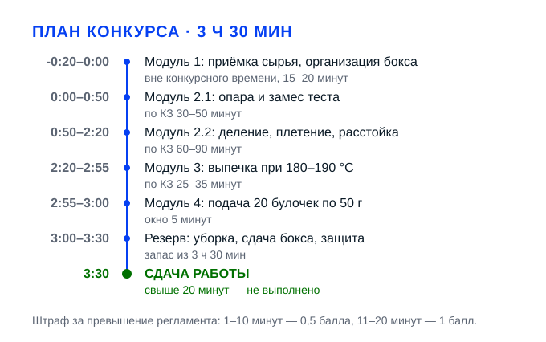
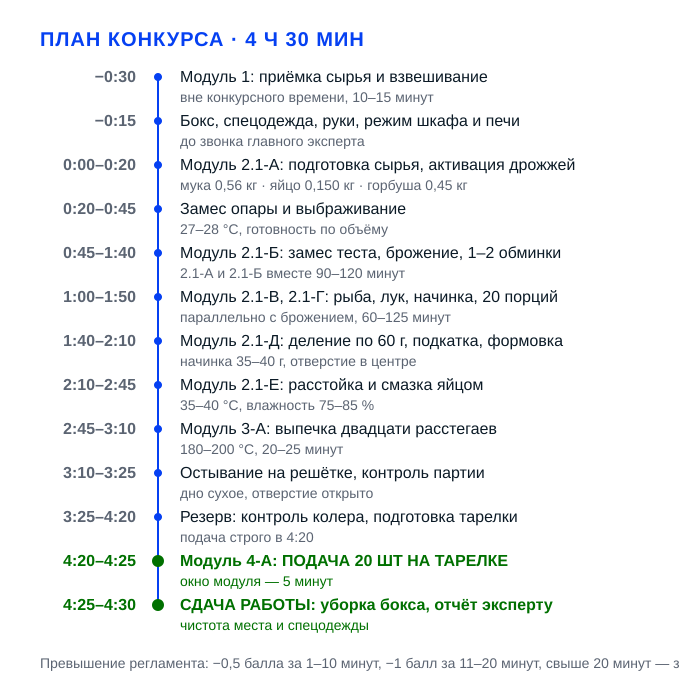
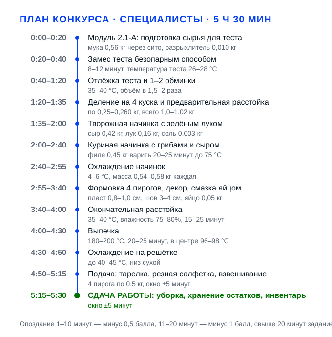

Повар региональной кухни (выпечка расстегай Северный) (Р)
Задания ниже — официальные файлы «Абилимпикс» (источник: abilympics-russia.ru), разложенные по категориям. Решения написаны по тексту задания, регламенту и критериям оценки; в них указано, что именно проверяет эксперт.
Школьник
14–16 лет, базовый уровень заданияВ официальном файле категории не разделены отдельными разделами — приводим задание целиком; различия по категориям смотрите в таблице модулей.
Пошаговое решение
Школьникам на этой компетенции достаётся не расстегай с рыбой, а его основа — дрожжевое тесто и плетёная хлебная булочка: двадцать штук по 50 граммов на выходе, кусок теста 57 граммов, опара 1140 граммов, выпечка при 180–190 °C. Всё задание укладывается в 3 часа 30 минут и четыре модуля: организация площадки, подготовка сырья и теста, формовка с расстойкой, выпечка и подача на тарелках с резной бумажной салфеткой. Главный риск здесь не в плетении, а в дрожжах: опара бродит от 30 до 80 минут, тесто ещё от 20 до 60, и если развести дрожжи в холодной воде или поставить опару в прохладное место, весь график поедет и на окончательную расстойку останется меньше времени, чем нужно. Поэтому решение построено вокруг трёх опор: температура (27–28 °C у опары, 28–31 °C у теста), контроль готовности по признакам, а не по часам, и точный вес каждого куска. Дальше решают детали — ровная косичка из трёх жгутов, расстояния между заготовками на листе и колер от светло-золотистого до коричневого, по которому эксперты определяют, попали ли вы в режим печи.

Задача 1. Организовать бокс и подтвердить готовностьМодуль 1 · 15–20 минут за 20 минут до старта
Модуль 1 идёт вне конкурсного времени, за двадцать минут до старта, и длится 15–20 минут. За эти минуты нужно получить со склада продукты по технологической карте, перевесить их у себя в боксе, разложить с учётом товарного соседства, собрать инвентарь по зонам и убедиться, что расстоечный шкаф и печь работают. Эти 15–20 минут не оплачиваются временем конкурса, но именно они определяют, будете вы потом спешить или работать ровно: недополученный продукт после старта меняют только через главного эксперта, а незапущенный расстоечный шкаф отнимает полчаса из модуля формовки.
Действие 1.1. Войти в бокс по форме и с чистыми руками
Шаг 1.1.1
Надеваем полный комплект: куртку или фартук с нагрудником, головной убор, закрытую обувь на нескользящей подошве. Колпак или косынку сажаем так, чтобы волосы были убраны и спереди, и на затылке, а длинную чёлку дополнительно скалываем под край. Рукава подворачиваем выше локтя: спущенный рукав тянется за скалкой, задевает край дежи и за пять минут собирает муку и тесто. Фартук завязываем на уровне талии, тесёмки прячем назад, чтобы за них не цеплялась посуда, когда вы несёте лист к печи.
Спецодежда — измеримый критерий на 3 балла в модуле А, и проверяют её не «в целом», а по признакам: чистая, застёгнутая, волосы убраны. Для дрожжевого теста это ещё и практика: волос в опаре или в плетении становится посторонним предметом и снимает баллы уже в модуле В по внешнему виду. Чистота спецодежды к концу смены оценивается отдельно и стоит 5 баллов, а заляпанную мукой с первого часа куртку отмыть уже не получится.
Отойдите к зеркалу и посмотрите на себя со спины: волос не видно ни спереди, ни сзади, куртка застёгнута на все пуговицы, обувь закрытая и сухая, рукава не ниже локтя. Затылок проверьте глазами наставника или волонтёра — самому эту зону не увидеть.
Частая ошибка — посадить колпак на макушку, оставив затылок открытым: спереди картинка идеальная, а сзади выбивается хвост. Вторая — прийти в открытой обуви или футболке, рассчитывая надеть куртку потом: время уйдёт из модуля 1, а балл за спецодежду уже не вернуть.
Эксперт осматривает участника до сигнала старта и возвращается взглядом к форме ещё несколько раз по ходу работы: мука на груди к началу формовки читается как небрежность.
Шаг 1.1.2
Моем руки с мылом до запястий, не меньше двадцати секунд, отдельно проходя большие пальцы, промежутки между пальцами и область под ногтями. Вытираем одноразовым полотенцем и сразу выбрасываем его, а не кладём на стол рядом с доской. Повторяем мытьё перед началом работы с тестом, после уборки и после любого контакта с лицом, волосами или телефоном. Кран закрываем локтем, чтобы не трогать ручку только что вымытыми руками.
Мытьё рук — отдельный критерий на 2 балла, и это самый дешёвый балл из всех одиннадцати баллов модуля А. Дальше начинается практика: дрожжевое тесто руками формуют, подкатывают и заплетают, поэтому всё, что осталось на ладонях, уходит в заготовку. Оценивают при этом процесс, а не стартовое состояние, и руки проверяют в течение всего конкурса.
Руки сухие, полотенце использованное и выброшенное, ногти без теста и муки. Если вы только что брались за мусорный контейнер или поправляли колпак — руки моем заново, даже если внешне они кажутся чистыми.
Ошибка новичка — вытирать руки о фартук: визуально ладони сухие, но фартук превращается в переносчика, и это видно эксперту. Вторая — помыть руки один раз на входе и считать вопрос закрытым до конца конкурса.
Эксперт смотрит на руки перед стартом и между операциями, отдельно отмечая, моется ли инвентарь после контакта с сырым яйцом. Отдельно отмечают момент, когда участник трогает лицо или телефон: после этого руки должны быть вымыты заново.
Шаг 1.1.3
Снимаем часы, кольца, браслеты и длинные серьги, ногти коротко подстрижены, без лака и покрытия. Если снять кольцо тяжело — снимайте заранее, дома, а не в боксе за минуту до сигнала. Украшения убираем в карман или сумку, а не на стол рядом с весами: там они и теряются. Перед работой осматриваем кожу рук: порезы и ссадины закрываем пластырем и перчаткой, это разрешено и не считается нарушением.
Под кольцом остаются загрязнения, которые обычным мытьём не снимаются, а камень из перстня или звено браслета вполне могут уйти в тесто вместе с мукой. Для изделия, которое потом разламывают и пробуют эксперты, посторонний предмет — это не мелочь, а обнуление модуля В и объяснение с главным экспертом.
Руки осмотрены: украшений нет, ногти короткие, покрытия нет, кожа без свежих порезов. Если на пальце есть ранка, закрываем её пластырем и надеваем перчатку — это разрешено и не считается нарушением. Осмотрите и предплечья: закатанные рукава не должны прикрывать браслеты и часы.
Оставить обручальное кольцо «оно не мешает» — самая частая ошибка: на категории «Школьники» руки проверяют на входе, и объяснение «я привык» не принимается. Третья по частоте — длинные ногти с лаком: они ломаются в тесте, и это видно на разрезе готового изделия.
Пункт в чек-листе санитарии: эксперт проверяет руки до старта, а дальше следит за ними по ходу работы. Проверка идёт без предупреждения: эксперт подходит в начале модуля 2.1, когда руки уже в муке.
Действие 1.2. Принять сырьё и разложить по товарному соседству
Шаг 1.2.1
Получаем на складе продукты строго по технологической карте и сверяем каждую позицию: мука пшеничная высшего сорта 510 г в опару, 770 г в тесто и 50 г отдельно на подпыл, дрожжи прессованные 51 г, соль 13 г, сахар 230 г, масло сливочное 192 г, яйцо 128 г в тесто и 38 г на смазку, молоко 192 г, вода 294 г, ванилин 4 г, растительное масло 20 г для смазки листов. Список удобно держать на столе и отмечать карандашом: так сразу видно, что уже проверено.
Приёмка — единственный момент, когда недостачу можно закрыть. После старта замена идёт только через главного эксперта, и то если причина покажется ему уважительной. Пятнадцати минут хватает, чтобы пройти по списку спокойно, но не хватает, чтобы сначала начать готовить, а потом спохватиться из-за отсутствия соли.
Все строки отмечены, расхождения записаны: чего нет, сколько нет, в каком виде. Сомневаетесь в весе — перевесьте сразу, весы стоят на площадке, и это как раз то, что требует модуль 1 от школьника: перевесить выбранное сырьё у себя в боксе.
Начать с готовки, не сверив список, — потом в середине замеса выясняется, что сахара не 230, а 130 граммов, и менять план уже поздно. Вторая ошибка — заметить недостачу и промолчать, рассчитывая «обойтись»: тесто на сахаре держит брожение, и без него опара пойдёт иначе.
Организация работы и умение планировать входят в критерий «Общее впечатление от организации работы», 3 балла, и эксперт видит, сверялся участник с картой или импровизировал.
Шаг 1.2.2
Проверяем качество каждой позиции. Дрожжи прессованные берём плотные, серо-кремового цвета, крошащиеся, с чистым дрожжевым запахом и без липкой слизи на срезе. Муку оцениваем по запаху и на ощупь: она должна быть сухой, без комков и затхлости. Масло сливочное — однородное, без прогорклого запаха и тёмных крапин, яйца — целые, чистые, без трещин на скорлупе. Молоко проверяем по дате и по запаху после вскрытия упаковки.
Из плохих дрожжей не поднимется ни опара, ни тесто, а на конкурсе переиграть время уже не получится: подъём занимает от 30 до 80 минут, и второй попытки в графике нет. Кислое масло и затхлая мука дают посторонний запах, который эксперты ловят в критерии «Вкус и аромат» на 5 баллов, и замаскировать его ванилином не удаётся.
Проверяем три вещи по каждой скоропортящейся позиции: температура на ощупь, запах, внешний вид. Дрожжи крошатся, а не мажутся; мука не сжимается в комок; масло режется чисто. Сомневаетесь — откладываете в сторону и идёте к эксперту до старта.
Самая опасная ошибка — взять тёплые дрожжи или мягкое, поплывшее масло «на вид нормальные»: снаружи всё хорошо, а внутри уже пошёл процесс. Вторая — выбросить испорченный продукт молча: его не заменят, и вы останетесь без позиции в разгар замеса.
Эксперт может подойти к вашей закладке и посмотреть, чем вы работаете: чистота продуктовой зоны и отсутствие брака — часть оценки организации. Вопрос «чем проверяли дрожжи» задают часто, и ответ по признакам закрывает его сразу.
Шаг 1.2.3
Раскладываем продукты по холодильнику и столу с учётом товарного соседства: молоко и яйца — на отдельную полку, масло сливочное — в закрытом контейнере, дрожжи — отдельно от соли и сахара, чтобы не начали работать раньше времени. Муку и сахар держим в сухих закрытых ёмкостях рядом с весами, воду и молоко для замеса подогреваем уже по ходу дела. Подставки и доски для сырья и готовых изделий держим раздельно.
Товарное соседство — прямой пункт модуля 1 и критерий «Соблюдение санитарно-гигиенических норм и правил» на 3 балла. Практическая сторона тоже важна: соль, лежащая вплотную к дрожжам, тянет из них влагу, и часть культуры гибнет ещё до активации, а значит тесто поднимется медленнее запланированного.
Молоко и яйца на нижней полке и в отдельной зоне, масло закрыто, дрожжи и соль разнесены, сыпучие продукты в сухих ёмкостях с крышкой, полка холодильника чистая и без лужиц. Сфотографируйте закладку мысленно: так проще вернуть всё на место в конце.
Сложить всё в одну кучу на столе, потому что «так быстрее доставать», — к середине конкурса стол занят посудой, и продукты начинают падать на пол. Вторая ошибка — оставить дрожжи в тёплом месте рядом с печью: они начнут бродить до замеса.
Санитария и хранение ингредиентов оцениваются отдельно, по 3 балла каждая позиция, и проверяются в конце работы тоже. Дополнительно смотрят, не лежат ли продукты на полу и не стоит ли сумка с вещами рядом с мукой.
Действие 1.3. Собрать рабочее место и запустить оборудование
Шаг 1.3.1
Раскладываем инвентарь по зонам: слева от доски — весы, скребок, нож для теста, справа — скалка, линейка металлическая, кисть для смазки, нож для надрезов. Листы и противни ставим туда, где вы будете брать их одной рукой, не разворачиваясь корпусом. Из дома разрешено приносить только личный инструмент из списка особых указаний: скребок из нержавеющей стали, пластиковый скребок, деревянную лопатку, термометр-щуп для теста, нож для пиццы, скалку, нож для надрезов, металлическую линейку и вырубки для украшения.
Навыки работы с инвентарём и инструментами — 3 балла, и подготовка рабочего места — ещё 3 балла. Разложенный по зонам инструмент экономит движения: в модуле формовки у вас двадцать заготовок, и каждый лишний шаг в сторону от стола превращается в потерянные минуты. Приносить на площадку то, что уже есть в инфраструктурном листе, запрещено, и это фиксируется как нарушение.
На столе нет ничего лишнего, каждый инструмент лежит на своём месте и в пределах вытянутой руки, доска закреплена влажным полотенцем, чтобы не ездила под скалкой. Проверьте, что у вас есть сухие полотенца и хотя бы одна чистая тряпка для стола.
Принести свою скалку «удобнее этой» нельзя, даже если она действительно удобнее: инвентарь, заменяющий площадочный, запрещён особыми указаниями. Вторая ошибка — оставить доску незакреплённой: при раскатке жгутов она уезжает, и жгуты выходят разной толщины.
Эксперт оценивает рабочее место в первые минуты и потом смотрит, поддерживается ли порядок: гора посуды в зоне раскатки читается как потеря контроля. Особое внимание — чистоте инструмента: липкая от теста скалка к середине модуля 2.2 считается нарушением.
Шаг 1.3.2
Запускаем расстоечный шкаф заранее: задаём 35–38 °C и влажность около 75–80 %, даём ему выйти на режим, пока вы работаете с мукой. Проверяем печь — она должна быть включена и прогрета к моменту посадки, поэтому ставим 180–190 °C сразу. Весы включаем и проверяем нулём пустой чаши, а рядом кладём контрольную гирю или пачку соли известной массы: на двадцати кусках по 57 граммов ошибка весов в 5 граммов даёт полсотни граммов разницы по выходу.
Профессиональное использование оборудования — 3 балла, и охрана труда с техникой безопасности — ещё 3 балла в модуле Б. Расстоечный шкаф, поднятый в режим с нуля, отнимает 10–15 минут как раз в тот момент, когда заготовки уже ждут, а печь, включённая перед посадкой, даёт бледный низ и горелый верх. Проверенные весы — это прямое попадание в вес изделия, за который в модуле В дают 5 баллов.
Шкаф показывает заданную температуру и держит её, дверца закрывается плотно, вода в поддоне есть. Печь вышла на 180–190 °C по индикатору, а не «примерно». Весы обнулены и повторяют показание при повторной постановке груза.
Включить шкаф в момент, когда уже нужно ставить опару, — самая частая потеря времени: опара в холодном шкафу бродит вдвое дольше. Вторая ошибка — гнаться за «прогревом печи потом» и сажать заготовки в непрогретый шкаф: изделие осядет и пойдёт трещинами.
Эксперт смотрит, умеет ли участник обращаться с оборудованием: без стука, без бросков листов, с закрытой дверцей и выставленными параметрами. Отдельно фиксируется, выключено ли оборудование, когда работа с ним закончена.
Действие 1.4. Закрыть документы до старта
Шаг 1.4.1
Проверяем заявку на сырьё: она должна быть составлена по технологической карте и подана не позднее чем за пятнадцать дней до конкурса. В заявке смотрим, чтобы совпадали наименования и количества по всем десяти позициям школьной карты, и держим рядом свою рецептуру с теми же цифрами: опара 1140 граммов, тесто на двадцать булочек, кусок 57 граммов, выход 50 граммов на изделие.
Заявка на сырьё и рецептуры — по 5 баллов каждая, это десять баллов из 49 в модуле Б, то есть больше, чем даёт вся формовка вместе с приготовлением теста. Проверяют не красоту оформления, а совпадение цифр с картой: расхождение в 50 граммах муки уже считается ошибкой, потому что по заявке склад собирает продукты.
Цифры в заявке, в рецептуре и в технологической карте совпадают до грамма, единицы измерения указаны (кг или г) и не путаются, сумма по позициям сходится. Сверяйте построчно, водя пальцем, а не по памяти.
Переписать рецептуру «по памяти» и разойтись с картой в сахаре или масле: разница в 20–30 граммов выглядит мелочью, но балл снимается сразу и без обсуждения. Вторая ошибка — подать заявку в день конкурса, когда срок уже прошёл.
Эксперт сверяет документы с картой до старта и отмечает расхождения, не спрашивая объяснений. Иногда просят показать рецептуру и сравнить её построчно с картой: расхождение в единицах измерения считается ошибкой.
Шаг 1.4.2
Собираем портфолио: титульный лист с фамилией и категорией, краткое описание изделия, фотографии или эскизы плетения, технологическую схему. Всё должно быть в одном документе, без разрозненных листов, и лежать на столе так, чтобы эксперт мог взять его, не перекладывая вашу посуду. Если портфолио в папке — папку подписываем снаружи. Папку или файл держим на краю стола, чтобы эксперт мог взять портфолио, не перекладывая инвентарь.
Портфолио — 5 баллов, и это баллы, которые набираются до старта, без риска и без спешки. Одновременно портфолио работает как ваш план: в схеме видно, сколько времени уходит на опару и сколько на расстойку, и в середине конкурса вы сверяетесь с ней, а не с паникой.
Портфолио на месте, подписано, страницы не перепутаны, схема читается без пояснений, фотографии не размыты. Проверьте, что в тексте нет чужих фамилий и названий другой компетенции. Проверьте и дату: в портфолио не должно быть материалов прошлого сезона с другими весами.
Принести портфолио на флешке, рассчитывая распечатать на площадке: печати в боксе нет. Вторая ошибка — оставить в портфолио прошлогоднюю схему с другими весами и временем. Третья — распечатать схему на цветном принтере и получить серые пятна вместо читаемых блоков.
Эксперт просматривает портфолио до старта, а на защите может задать вопрос по схеме — и по ответу видно, писали вы её сами или скачали. Вопросы задают по схеме, а не по тексту: важно, чтобы вы могли объяснить каждый блок своего плана.
Задача 2. Подготовить сырьё и замесить опаруМодуль 2.1 · 30–50 минут
Модуль 2.1 по карте занимает от 30 до 50 минут и заканчивается полуфабрикатом — опарой массой 1140 граммов. Здесь важно не торопиться: пока опара бродит, вы успеваете подготовить остальное сырьё, но если поставить её на холодной воде или пересыпать солью, дрожжи ослабнут, и тесто в модуле 3 придётся ждать вдвое дольше. Опара — это закваска для всего изделия: она даёт пористость, вкус и тот самый дрожжевой аромат, за который в модуле В дают баллы, поэтому температуру 27–28 °C и время выбраживания 30–80 минут держим осознанно, а не «примерно».
Действие 2.1. Подготовить муку, яйца и жидкую часть
Шаг 2.1.1
Просеиваем всю муку через сито с ячейкой 1,5–2 мм и сразу делим по весам: 510 г в опару, 770 г в тесто, 50 г оставляем отдельно на подпыл. Просеиваем на стол, застеленный чистым полотенцем, или прямо в сухую дежу, но не над раковиной, где сыро. В муку не подмешиваем ни соль, ни сахар: соль заберёт влагу и задержит работу дрожжей, а сахар в сухой смеси с мукой потом трудно распределить равномерно.
Просеивание убирает комки, случайный мусор и одновременно насыщает муку кислородом, а это напрямую влияет на подъём: дышащая мука даёт более пористое тесто. Разделение по весам до замеса — это ещё и защита от ошибки: 510 и 770 граммов на глаз не отмерить, а от точности зависит, получится тесто пластичным или забитым. Критерий «Приготовление теста» в модуле Б стоит 3 балла, но ошибка здесь утянет за собой формовку.
Три ёмкости: 510 г, 770 г и 50 г, все подписаны или стоят в известном вам порядке. Мука сухая, без комков, сито после просеивания пустое. Если после взвешивания остаётся лишняя мука, отложите её в сторону — припёк и остатки не штрафуются, а вот недовес исправить в тесте будет нечем.
Просеять «на глаз» и не делить по весам — потом в опару уходит лишние 50–70 граммов муки, она получается крутой, и тесто поднимается медленнее. Вторая ошибка — просеивать прямо в мокрую дежу: мука сразу схватывается комками по стенкам.
Эксперт смотрит на подготовку сырья в первые минуты модуля: чистые ёмкости, ровные навески, аккуратно просеянная мука без облака пыли по всему боксу. Проверяют и весы: чистая чаша и обнуление перед каждой навеской.
Шаг 2.1.2
Моем яйца тёплой водой с мылом, потому что на скорлупе бывает больше бактерий, чем внутри, и разбиваем каждое по одному в отдельную чашку, а не сразу в общую массу. Взвешиваем: 128 г в тесто и 38 г на смазку — это не целое число яиц, поэтому берём весы, а не счёт штуками. Яйцо на смазку отставляем в отдельной чашке, накрываем и держим в холоде до момента посадки в печь.
Разбивать по одному в отдельную чашку — правило, которое спасает всю закладку: одно тухлое яйцо в общей массе уже не вынуть, а 128 граммов испорченного продукта означают остановку модуля. Отдельная посуда для смазки нужна потому, что смазочное яйцо не солят и не смешивают с тестом: соль в смазке даёт пятна на корке, и колер выходит неровным.
Яйца чистые, без трещин, желток при разбивке целый и упругий, белок не растекается водой. На весах 128 г в тестовой чашке и 38 г в чашке для смазки. Скорлупу не бросаем в общую ёмкость с мусором — она колется и разлетается.
Разбить яйца прямо в общую чашку — самая дорогая из бытовых ошибок. Вторая — не помыть скорлупу: при разбивке бактерии со скорлупы попадают в белок, и это уже нарушение санитарных норм на 3 балла. Третья ошибка — оставить скорлупу на столе рядом с тестом.
Санитарные нормы и правила — отдельный критерий на 3 балла, и эксперт видит, в какой посуде разбиваются яйца и куда девается скорлупа. Моют ли яйца перед разбивкой, видно по посуде и по мокрому полотенцу рядом.
Шаг 2.1.3
Отвешиваем воду 294 г и молоко 192 г, подогреваем их вместе до 35–38 °C — проверяем пальцем или термометром, выше 40 °C не поднимаем, иначе дрожжи частично погибнут. В тёплой жидкости растворяем соль 13 г и сахар 230 г, размешивая до полного исчезновения крупинок. Масло сливочное 192 г заранее достаём из холодильника и разминаем до состояния мягкого пластилина либо растапливаем и остужаем до 30–35 °C. Ванилин 4 г отсыпаем в отдельную чашку, чтобы не просыпать в тесто разом.
Температура жидкости — главный рычаг управления брожением: на воде в 35 °C опара выходит на готовность за 40–60 минут, на холодной может стоять два часа и весь график сломать. Соль и сахар, растворённые заранее, распределяются по тесту равномерно, а не остаются крупинками, которые потом дают точки на разрезе и неровный вкус. Сахар нужен ещё и как питание дрожжам на первые полчаса.
Жидкость тёплая на ощупь, но не обжигает палец; крупинки соли и сахара не видны на дне; масло мягкое или растопленное, но не горячее. Проверьте термометром: 35–38 °C — рабочая зона, 45 °C и выше — уже гибель дрожжей.
Залить дрожжи кипятком или крутым молоком «чтобы быстрее подошло» — половина культуры погибает, и опара стоит почти без подъёма. Вторая ошибка — добавить сахар в сухом виде уже в тесто: он не растворится и даст тёмные карамельные точки на корке.
Эксперт проверяет температуру жидкости и порядок ввода продуктов, потому что именно здесь чаще всего теряют контроль над брожением. Особенно внимательно смотрят на масло: растопленное до кипения пахнет иначе и тянет за собой вкус изделия.
Действие 2.2. Активировать прессованные дрожжи
Шаг 2.2.1
Берём 51 г прессованных дрожжей и осматриваем: цвет от светло-кремового до сероватого, запах чистый дрожжевой, без кислоты и плесени, на срезе нет тёмных пятен и белого налёта. Дрожжи должны крошиться, а не мазаться, и не липнуть к ножу. Если плитка влажная и липкая, это признак подтаявшего или старого продукта — показываем эксперту до старта, а не пускаем в опару.
Дрожжи — единственный компонент, без которого тесто просто не поднимется: ни сода, ни разрыхлитель здесь не заменят культуру, потому что в школьной карте тесто дрожжевое опарное. 51 грамм на 1140 граммов опары — это примерно 4,5 % к массе полуфабриката, дозировка рассчитана на подъём за 30–80 минут; если половина дрожжей окажется мёртвой, опару придётся держать вдвое дольше, и время уйдёт из модуля формовки.
Плитка крошится при нажатии, срез ровный, светлый, без вкраплений, запах дрожжевой, без кислого. Отложите кусочек размером с горошину в тёплую воду с щепоткой сахара: если через 10–15 минут он всплыл и начал пениться — дрожжи живые.
Взять дрожжи, которые лежали в тёплом месте и «поплыли»: снаружи они выглядят нормально, но активность уже потеряна, и опара будет стоять. Вторая ошибка — не проверить дрожжи вообще, а потом искать причину в муке.
Эксперт может спросить, как участник проверил дрожжи: ответ по признакам показывает, работает человек по технологии или по наитию. Признаки свежих дрожжей школьник должен называть сам, без подсказки наставника.
Шаг 2.2.2
Раскрашиваем 51 г дрожжей в 100 мл тёплой воды из общей навески (30–35 °C), добавляем чайную ложку сахара из отмеренных 230 г и размешиваем до однородной мутной суспензии без комков. Оставляем на 15–20 минут в тёплом месте, накрыв полотенцем: за это время на поверхности должна подняться пенная шапка высотой 2–3 сантиметра. Если шапки нет или она едва заметна, дрожжи слабые, и об этом надо сказать эксперту сразу, а не надеяться на чудо.
Активация даёт дрожжам запуститься до того, как они попадут в густую среду, и опара стартует быстрее на 15–20 минут — это ровно то время, которого потом не хватает на расстойку. Пена подтверждает, что культура жива и работает, то есть вы контролируете процесс, а не гадаете. В школьной карте время выбраживания опары 30–80 минут, и разница между этими цифрами как раз складывается из активности дрожжей и температуры.
Суспензия однородная, серовато-кремовая, без комков; через 15–20 минут на поверхности пена, объём вырос примерно вдвое, запах дрожжевой и чистый. Вода в чашке не должна быть горячей на ощупь. Проверьте и запах: он должен быть свежим, без кислоты.
Развести дрожжи в воде 45–50 °C — они гибнут, и опара потом стоит «мёртво». Вторая ошибка — сыпать дрожжи в сухую муку, не разведя: комки дрожжей в тесте дают пятна и неравномерный подъём. Третья — разводить дрожжи в молоке, если по карте вода: молоко пригорит на дне чашки.
Эксперт смотрит на активацию как на профессиональный приём: у школьников он отличает работу по карте от механического смешивания всего подряд. Смотрят и на посуду для активации: она должна быть чистой и сухой.
Действие 2.3. Замесить опару массой 1140 граммов
Шаг 2.3.1
В дежу выливаем активированную дрожжевую суспензию, добавляем оставшуюся воду — всего по карте 294 г, значит после активации остаётся примерно 194 г — и всыпаем 510 г просеянной муки. Соль, сахар, масло и яйцо в опару не идут: они вводятся позже, при замесе теста. Перемешиваем лопаткой или скребком от центра к стенкам, подбирая муку со дна и с краёв, пока не останется сухих участков и комков.
Опара — это дрожжевая среда, в которой нет соли и очень мало сахара, поэтому дрожжи работают в ней быстро и без торможения. Если сразу добавить соль, осмос в клетке меняется, и подъём замедляется настолько, что опара не успевает выбродить за 80 минут. Масса опары по карте — 1140 г, и сходится она ровно из 510 г муки и 294 г воды плюс дрожжи, так что ориентир для проверки у вас есть.
Однородная масса без сухой муки по стенкам, комков нет, консистенция густой сметаны: лопатка стоит в ней с наклоном, но не падает. Стенки дежи чистые, потому что массу собрали скребком, а не оставили сохнуть на бортах.
Всыпать муку в воду, не размешав дрожжи, — получаются мучные комки, которые потом не разойдутся и останутся в мякише плотными включениями. Вторая ошибка — насыпать муку «всю сразу» и мешать венчиком: венчик забивается, и половина муки остаётся сухой.
Эксперт смотрит на консистенцию опары и на чистоту дежи: сухая мука по бортам читается как небрежность и стоит балла в критерии «Приготовление теста».
Шаг 2.3.2
Домешиваем опару вручную или насадкой 3–5 минут до полной однородности, затем собираем её скребком к центру, разравниваем поверхность и измеряем температуру термометром-щупом в середине массы. По карте начальная температура опары — 27–28 °C. Если получилось холоднее, дежу ставим в более тёплое место или добавляем пару градусов к режиму шкафа; если теплее 30 °C, даём массе постоять на столе пару минут. Накрываем дежу полотенцем или плёнкой, чтобы поверхность не заветрилась.
Температура опары определяет скорость брожения сильнее, чем время: каждая пара градусов сдвигает готовность на 15–20 минут в ту или другую сторону. При 27–28 °C опара выходит на пик предсказуемо, и вы попадаете в карточные 30–80 минут, а не растягиваете модуль на полтора часа. Накрытая поверхность не заветривается и не покрывается сухой коркой, которая потом уходит в тесто комками.
Термометр в середине массы показывает 27–28 °C, поверхность ровная, слегка липкая, без сухих участков и корки. Полотенце или плёнка закрывает дежу целиком, край не свисает в массу. Хороший признак — масса слегка «дышит»: на поверхности уже появились первые мелкие пузыри.
Забыть замерить температуру и поставить опару «как есть» — самая частая причина, по которой школьник не укладывается в график. Вторая ошибка — накрыть дежу так, что ткань касается поверхности: опара прилипает и рвётся при снятии.
Измеримый критерий: эксперт вправе попросить показать температуру полуфабриката, и привычка работать со щупом видна сразу. Приём с термометром эксперт относит к технике, а не к формальности: по нему видно, что участник управляет процессом.
Действие 2.4. Выбродить опару до готовности
Шаг 2.4.1
Ставим дежу в расстоечный шкаф при 28–30 °C и влажности около 70–75 %, если шкаф занят — в тёплое место без сквозняков, подальше от открытой форточки и от холодной стены. Записываем время постановки: по карте выбраживание занимает от 30 до 80 минут, и нижняя граница наступает только у активных дрожжей в тёплом шкафу. Крышку не закрываем наглухо, оставляем доступ воздуху, но от сквозняка укрываем.
Время в карте дано диапазоном именно потому, что опара не подчиняется часам, а подчиняется температуре и силе дрожжей. Отметка времени — ваш единственный способ понять, сколько она уже стоит: в потоке модуля двадцать минут пролетают незаметно, а перестоявшая опара оседает и теряет силу. Сквозняк же просто съедает весь запас времени: у холодной стены масса остывает на несколько градусов и останавливается.
Опара стоит в тепле, дежа накрыта, время записано на бумаге или на доске мелом. Через 30 минут проверяем первый раз и дальше смотрим каждые 10–15 минут, а не один раз в конце. Если через 30 минут объём не изменился, опара стоит: проверяем температуру шкафа, а не ждём ещё полчаса.
Поставить опару и уйти готовить инвентарь на полтора часа — самая частая потеря графика у школьников. Вторая ошибка — держать дежу у открытой печи: сверху образуется корка, а внутри масса перегревается и киснет.
Эксперт отмечает, как участник организует ожидание: работа с сырьём параллельно с брожением — признак планирования, которое входит в общее впечатление от организации.
Шаг 2.4.2
Определяем готовность по четырём признакам сразу. Первый — объём: опара увеличивается в 1,5–2 раза. Второй — поверхность: она покрывается пузырями, а затем начинает морщиться и слегка опадать в центре. Третий — запах: чистый, спиртовой, без резкой кислоты. Четвёртый — температура: 29–30 °C, то есть масса разогрелась работой дрожжей. Совпали все четыре — опара готова, и её нужно пускать в тесто сразу.
Готовность по признакам, а не по часам — это то, что отличает рабочее тесто от кислого. Перестоявшая опара теряет силу: дрожжи уже отработали, кислотность выросла, и изделие получается с резким запахом и бледным мякишем. Недобродившая опара даёт плотное тесто и мелкий, «забитый» мякиш, а в модуле В за мякиш и состояние выпеченной части дают по 5 баллов.
Объём вырос в 1,5–2 раза, пузыри на поверхности крупные, при постукивании по деже масса слегка оседает, запах спиртовой и приятный. Надавите ложкой: ямка от лопатки не заплывает — значит масса на пике.
Передержать опару «пусть ещё постоит, будет пышнее» — она осядет, и тесто придётся выбрасывать или тянуть на обминках. Вторая ошибка — пустить в тесто недобродившую опару, потому что «время вышло»: тесто потом не поднимется в расстойке.
Эксперт подходит к деже в момент, когда опара должна быть готова, и смотрит на поверхность и запах: по ним видно, попал участник в режим или передержал полуфабрикат.
Задача 3. Замесить тесто и провести брожениеМодуль 2.1 · окончание 30–50 минут
Вторая половина модуля 2.1 — сам замес. К опаре добавляются сахар, соль, яйцо, масло, ванилин и 770 граммов муки, и получается пластичное тесто, которое по карте должно бродить от 20 до 60 минут при температуре 28–31 °C. Здесь решается всё, что потом увидят эксперты в разрезе: пористость, эластичность, ровный подъём без разрывов. Ошибка этого этапа — не «невкусный вкус», а плотный, забитый мякиш и заготовки, которые расползаются при формовке, поэтому температуру и количество обминок держим по карте, а не по ощущениям.
Действие 3.1. Соединить опару с остальными продуктами и замесить тесто
Шаг 3.1.1
К готовой опаре добавляем по порядку: сахар 230 г, соль 13 г, яйцо 128 г, мягкое масло 192 г и ванилин 4 г, и только после этого всыпаем 770 г муки. Соль и сахар перед вводом растворяем в паре ложек тёплой воды, если они не были растворены раньше: сухие крупинки в тесте дают пятна и неровный вкус. Масло добавляем последним из жидких компонентов, чтобы оно обволокло муку и не мешало образованию клейковины на первых минутах.
Порядок ввода — не формальность: соль, попавшая на дрожжи первой, тормозит брожение, а масло, добавленное до муки, покрывает частицы и тесто хуже держит газ. Сахар и соль в карте идут в тесто, а не в опару, поэтому баланс вкуса складывается именно здесь. Критерий «Приготовление теста» стоит 3 балла, но за ним стоят все 5 баллов за мякиш и 5 за вкус и аромат.
В деже нет сухих островков муки, соль и сахар растворены и не хрустят на зуб (проверить можно крошкой теста). Масло распределено, а не лежит куском на дне. Мука по карте израсходована полностью — 770 г, остаток идёт только на подпыл.
Всыпать муку раньше соли и сахара, а потом пытаться размешать — крупинки остаются в толще теста, и на разрезе видны тёмные точки. Вторая ошибка — вылить всё масло сразу и месить: тесто скользит, клейковина не образуется, и заготовки потом рвутся при плетении.
Эксперт смотрит на порядок закладки и на чистоту весов: остатки продуктов на чаше показывают, что часть навески не пошла в дело. Смотрят и на то, взвешены ли продукты заранее: навески «на глаз» видны по муке на столе.
Шаг 3.1.2
Замешиваем 8–12 минут: сначала лопаткой или скребком собираем массу в шар, потом работаем руками — складываем тесто к центру, прижимаем основанием ладони и поворачиваем дежу на четверть оборота. Движение повторяем ритмично, без рывков, подсыпая муку только если тесто откровенно липнет к рукам, и не больше ложки за раз. Готовое тесто перестаёт липнуть к стенкам и собирается в гладкий шар.
Восемь–двенадцать минут — это время, за которое клейковина успевает развиться: короткий замес даёт тесто, которое рвётся при раскатке жгутов, а слишком долгий делает его «забитым» и тугим, и оно плохо поднимается на расстойке. Карта требует именно пластичное тесто, то есть такое, которое держит форму и одновременно тянется. Постоянное подсыпание муки — самая частая причина жёсткого мякиша, поэтому подпыл идёт на стол, а не в дежу.
Тесто гладкое, матовое, не липнет к ладони, при нажатии пальцем ямка медленно выравнивается. Соберите его в шар — поверхность натянута, без трещин и рваных краёв. Из 510 г муки в опаре, 770 г в тесте и жидкости получается примерно 2 кг теста.
Месить «пока не надоест» две минуты: тесто внешне однородное, но клейковина не развита, и при раскатке жгут рвётся. Вторая ошибка — досыпать муку, пока тесто не станет крутым: изделие выходит плотным, как хлебный мякиш двухдневной давности.
Критерий «Техника приготовления» в модуле В — 5 баллов, и эксперт смотрит на характер замеса: работает участник ладонью и складыванием или просто мнёт массу.
Шаг 3.1.3
Проверяем тесто на растяжение: отщипываем кусочек размером с грецкий орех и растягиваем пальцами в тонкую плёнку. Хорошо вымешанное тесто тянется до просвета, не рвётся посередине и не расползается по краям. Если плёнка рвётся сразу — домешиваем ещё 2–3 минуты, если тянется, но рвётся по краю с неровными зубцами — ещё минуту. После проверки тесто собираем в шар и замеряем температуру.
Такой тест на просвет показывает состояние клейковины точнее, чем время замеса: у муки разных партий разная сила, и 10 минут для одной партии — норма, для другой мало. Эластичная клейковина удерживает газ при брожении и не даёт заготовке расползтись на расстойке, то есть работает сразу на два критерия — внешний вид и мякиш, по 5 баллов каждый.
Плёнка просвечивает, но не рвётся, края ровные. Тесто после проверки собрано в шар, поверхность гладкая, дежа чистая по бортам. Температура в центре шара — в пределах 28–31 °C. Тонкая плёнка должна просвечивать так, чтобы через неё был виден рисунок стола.
Пропустить проверку и месить «на глаз» — потом на раскатке жгуты рвутся, и вы тратите время модуля 2.2 на переделку. Вторая ошибка — проверять тесто на холодном столе: на холоде клейковина кажется слабее, чем есть.
Эксперт может попросить показать тесто на растяжение: этот приём считается базовым навыком пекаря и оценивается в критерии техники приготовления. Этот тест эксперт может попросить повторить на другой части теста.
Действие 3.2. Вывести температуру теста в пределы 28–31 °C
Шаг 3.2.1
Вводим термометр-щуп в середину шара на глубину 3–4 сантиметра и держим до стабилизации показания. По карте начальная температура теста — 28–31 °C, и это не рекомендация, а рабочий диапазон: ниже 26 °C дрожжи работают вяло, выше 33 °C тесто начинает киснуть и «плыть». Результат записываем или запоминаем: от него зависит, сколько тесто будет бродить — 20 минут или все 60.
Температура теста складывается из температуры муки, жидкости и воздуха в боксе, поэтому в холодном помещении она почти всегда ниже карточной, а рядом с печью — выше. Понимание этого даёт вам управление временем: тёплое тесто позволяет сократить брожение до 20–30 минут и выиграть запас на расстойку, а холодное требует полного часа.
Щуп показывает 28–31 °C. Проверьте в двух точках — у центра и ближе к поверхности: разница больше двух градусов означает, что тесто остыло неравномерно и его надо ещё раз обмять и собрать в шар. Разница в пределах двух градусов между точками считается нормой.
Не мерить температуру вообще и поставить тесто в холодную дежу: брожение затягивается, и в модуле 2.2 у вас остаётся 40 минут вместо 90. Вторая ошибка — греть тесто феном или над паром: поверхность подсыхает и покрывается коркой.
Эксперт обращает внимание на работу с термометром: это тот инструмент, который участник вправе принести с собой, и его использование видно в оценке техники.
Шаг 3.2.2
Если тесто холоднее 28 °C, ставим дежу в расстоечный шкаф на 30–35 °C и даём 5–10 минут, либо замешиваем ещё минуту руками — механическая работа поднимает температуру на градус-два. Если теплее 31 °C, дежу выносим на прохладный стол, накрываем и даём 5 минут отдохнуть, а в шкаф ставим с температурой на пару градусов ниже. Резких мер — холодной воды или льда — не применяем, потому что они убивают равномерность брожения.
Дрожжи работают в узком коридоре: при 28–31 °C процесс идёт ровно и предсказуемо, а за его пределами начинается разброс — от вялого подъёма до кислоты. Перегрев опаснее недогрева: при 35 °C и выше в тесте активно размножается посторонняя микрофлора, и появляется тот самый кисловатый запах, который в критерии «Вкус и аромат» стоит 5 баллов.
После корректировки щуп показывает 28–31 °C, поверхность теста не заветрена, шар держит форму. Если правили температуру в шкафу — убедитесь, что режим шкафа вернулся к рабочему, а не остался на 35 °C.
Оставить тесто перегретым «само остынет» — оно начнёт киснуть, и перебить это ванилином не получится. Вторая ошибка — остудить тесто в холодильнике: наружные слои остынут, внутри масса останется тёплой, и брожение пойдёт рывками.
Эксперт может понюхать тесто на этом этапе: посторонний кислый запах фиксируется сразу и переносится в оценку готового изделия. Если тесто пахнет кислым, участнику задают вопрос о температуре шкафа, и ответ многое говорит о понимании процесса.
Действие 3.3. Провести брожение с обминками
Шаг 3.3.1
Ставим дежу с тестом в расстоечный шкаф при 30–32 °C и влажности 75 %, накрываем полотенцем или крышкой. По карте брожение длится от 20 до 60 минут, и точку в этом диапазоне выбирает не таймер, а состояние теста. Отмечаем время старта брожения и первый контроль намечаем через 20 минут: за это время тесто должно заметно вырасти, если температура была в норме.
Брожение — это накопление газа и развитие вкуса одновременно: дрожжи выделяют углекислый газ и спирт, а молочнокислые бактерии добавляют мягкую кислинку, которая и делает булочку узнаваемой. Влажность в шкафу нужна, чтобы поверхность не покрылась коркой: корка не даст тесту расти равномерно и потом пойдёт трещинами по изделию, а трещины прямо названы в характеристике качества изделия.
Тесто в шкафу, накрыто, время старта записано. Через 20 минут объём вырос примерно в полтора раза, поверхность натянута, на ней появляются первые пузыри. Режим шкафа 30–32 °C и влажность около 75 %. Объём проверяйте по метке на деже или по высоте подъёма у стенки.
Оставить тесто открытым в сухом шкафу — за полчаса поверхность схватывается коркой, и при формовке она рвётся некрасивыми ломтями. Вторая ошибка — поставить дежу в шкаф с температурой 38–40 °C «чтобы быстрее»: наружные слои забродят, внутри тесто останется сырым.
Эксперт смотрит на режим шкафа и на то, накрыто ли тесто: это видимая часть профессионального использования оборудования, 3 балла. Накрытая дежа — признак того, что участник понимает, зачем нужна влажность.
Шаг 3.3.2
Делаем 1–2 обминки, как указано в карте. Первую — когда тесто увеличилось примерно вдвое: обминаем его кулаком или ладонью, выпуская газ, собираем края к центру и снова переворачиваем швом вниз. Вторую — через 20–25 минут, если тесто снова хорошо поднялось. Каждая обминка занимает 30–60 секунд, после неё тесто снова накрываем и возвращаем в шкаф. Скребком подбираем тесто со стенок, чтобы оно не сохло.
Обминка перераспределяет газ и подводит дрожжевые клетки к свежему питанию, поэтому тесто поднимается ровнее и мякиш получается мелкопористым, без крупных пустот. Без обминок газ скапливается крупными кавернами, и при выпечке верх изделия вспучивается неровно. Карта называет 1–2 обминки, то есть больше двух делать не нужно: лишние обминки тратят время и ослабляют тесто.
После обминки тесто пружинистое, ямка от пальца выравнивается за несколько секунд, поверхность гладкая, запах чистый дрожжевой без кислоты. Объём после второй обминки восстанавливается за 20–25 минут.
Обминать тесто каждые пять минут, «чтобы было пышнее» — клейковина ослабевает, и заготовки расплываются. Вторая ошибка — не обмять ни разу: газ рвёт тесто изнутри, и на корке появляются крупные пузыри-волдыри.
Эксперт следит за числом обминок: одна-две по карте — норма, пять-шесть читаются как отсутствие плана. Считают и время между обминками: слишком частые означают, что участник не смотрит на состояние теста.
Шаг 3.3.3
Контролируем подъём по объёму и по состоянию поверхности: тесто должно вырасти в 1,5–2 раза от исходного, стать заметно легче и «дышать» пузырями. Проверяем пальцем, смоченным в муке: нажатие оставляет ямку, которая выравнивается не сразу, а в течение нескольких секунд. Если ямка заплывает мгновенно — тесто ещё не набрало силы; если не выравнивается вовсе — вы его передержали.
Объём и поведение ямки — два самых надёжных признака, доступных без приборов, и они важнее часов, потому что скорость зависит от температуры и силы муки. По этому признаку вы принимаете решение о разделке, а не по расписанию, и тем самым страхуете модуль 2.2, где двадцать заготовок надо ещё раздать, подкатать, сплести и расставить.
Объём вырос в 1,5–2 раза, поверхность в мелких пузырях, ямка от пальца медленно выравнивается. Тесто не липнет к пальцу, смоченному мукой, и держит форму шара. Проверьте поверхность на разрыв: при лёгком растяжении края она не должна лопаться.
Передержать тесто в надежде на «ещё пышнее»: оно перезревает, кислотность растёт, и изделие получается с бледной коркой и кислым привкусом. Вторая ошибка — начать разделку, когда тесто ещё плотное: заготовки потом не поднимутся на расстойке.
Эксперт подходит к деже перед разделкой и оценивает тесто визуально: ровный купол без заветренной корки и без опадения. Вопрос о том, чем готовое тесто отличается от перезревшего, задают на защите чаще всего.
Действие 3.4. Принять решение о разделке
Шаг 3.4.1
Проверяем готовность теста комплексно: объём, ямка от пальца, запах и упругость при нажатии. По указанию карты разделку начинают по показателям кислотности, то есть тесто должно быть выброжено полностью, а не просто «постоять». На площадке ориентир по кислотности даёт технолог, и если прибор есть, значение сверяют с картой; если прибора нет, решение принимают по трём органолептическим признакам и по времени, проведённому в шкафу.
Разделка недобродившего теста — главная причина плотных заготовок: дрожжи ещё не набрали силу, и в расстойке заготовка поднимется вяло. Разделка перезревшего теста не менее опасна: клейковина разрушена, шарики расползаются, плетение теряет рисунок, а критерий «Внешний вид» и «Форма с ярко выраженным плетением» стоит 5 баллов.
Тесто выброжено, объём максимальный, запах чистый, при нажатии ямка держится 2–3 секунды. На столе готов подпыл из 50 г муки, скребок и весы включены, листы смазаны. До конца модуля 2.1 остаётся не больше 5 минут.
Начать разделку «по времени», не глядя на тесто, — самый частый способ получить рваные заготовки. Вторая ошибка — тянуть с разделкой, доделывая что-то по хозяйству: тесто перезревает за 10–15 минут и теряет форму.
Эксперт фиксирует переход к разделке и оценивает, насколько тесто к этому моменту соответствует карте: упругое, выброженное, без заветренных участков.
Шаг 3.4.2
Сверяем остаток времени: по карте на формовку и расстойку отведено 60–90 минут, и если вы вышли из модуля 2.1 на 45-й минуте, у вас есть полный запас; если на 50-й — работаем без пауз, но без спешки в ущерб качеству. С этого момента все действия идут по порядку: деление, подкатка, предварительная расстойка, плетение, окончательная расстойка. Одновременно выставляем печь на 180–190 °C, чтобы она прогрелась к моменту посадки.
Планирование остатка — это и есть разница между 20 аккуратными булочками и 20 булочками, сделанными в панике. Печь, включённая заранее, встречает заготовки рабочей температурой: непрогретая печь даёт бледный низ, а перегретая — горелую корку и сырой центр. За превышение регламента снимают 0,5 балла за первые 10 минут, 1 балл — за 11–20 минут, а свыше 20 минут задание считается невыполненным.
Печь выставлена на 180–190 °C, листы смазаны растительным маслом, подпыл готов, полотенце для накрывания заготовок под рукой. В голове держите цифру: 20 кусков по 57 г. Проверьте и чистоту стола: подпыл нанесён, скребок и весы под рукой, полотенце для накрывания готово.
Начать формовку с грязного стола и без прогретой печи — потом всё делается в спешке, и первые заготовки успевают перестоять, пока вы возитесь с последними. Вторая ошибка — считать, что «5 минут опоздания ничего не решают»: они стоят 0,5 балла и нервы.
Эксперт отмечает время, когда участник перешёл к разделке, и потом сверяет его с графиком подачи. Расхождение между планом и фактическим временем фиксируют в протоколе: оно влияет на общее впечатление от организации работы.
Задача 4. Разделать тесто, сплести и расставить заготовкиМодуль 2.2 · 60–90 минут
Модуль 2.2 — самый длинный в задании: от 60 до 90 минут на деление, подкатку, предварительную расстойку, плетение и окончательную расстойку двадцати заготовок. Кусков должно быть ровно двадцать по 57 граммов, чтобы после выпечки выйти на 50 граммов на изделие, а форма — продолговатая, с ярко выраженным плетением, без наплывов, оседаний и трещин. Именно здесь видно, работает участник ровно или гонит: спешка даёт заготовки разного веса и косички с разным натяжением, а на оценке это сразу два критерия — вес и внешний вид, по 5 баллов.
Действие 4.1. Разделить тесто на двадцать кусков по 57 граммов
Шаг 4.1.1
Подпыливаем стол ровным тонким слоем муки из отложенных 50 граммов — не горстями, а через сито или рукой с высоты 20–25 сантиметров, чтобы слой был тонким и равномерным. Выкладываем тесто из дежи на стол скребком, помогая себе рукой, и не тянем его за край: под собственным весом оно растянется и потеряет натяжение. Скребком собираем тесто в ровный жгут и разравниваем в полосу.
Тонкий подпыл нужен для того, чтобы тесто не прилипало к столу, но не забирало в себя лишнюю муку: избыток подпыла — это тот же жёсткий мякиш, только полученный не в деже, а на столе. Выкладывание скребком сохраняет газацию: тесто, которое выхватили рукой и уронили, частично осаживается, и первые заготовки будут плотнее последних. Ровная полоса упрощает следующее деление на равные куски.
Слой подпыла просвечивает, стол не белый от муки, тесто не прилипает и не скользит. Полоса теста ровная, без разрывов, поверхность гладкая, пузыри не сбиты. Нажмите ладонью на полосу: она должна пружинить, а не прилипать к руке.
Насыпать полстакана муки «чтобы не липло»: излишек забивает тесто, и булочки получаются плотными, а на разрезе виден сухой слой. Вторая ошибка — вывалить тесто из дежи и дать ему лежать: оно расплывается за пять минут.
Эксперт смотрит на состояние стола: культурный подпыл отличается от горы муки, и это видно в критерии «Навыки работы с инвентарём и инструментами». Чистый стол и ровный подпыл эксперт отмечает сразу.
Шаг 4.1.2
Делим тесто на двадцать кусков по 57 граммов. Сначала отрезаем скребком полосу и взвешиваем первый кусок как контрольный, подгоняя его на весах до 57 г, а дальше отрезаем куски такого же размера и каждый проверяем на весах: допуск плюс-минус 1 грамм. Отрезаем уверенным движением скребка, а не выщипываем пальцами, иначе край получается рваным и заготовка хуже держит форму.
Из 1140 граммов теста получается ровно двадцать кусков по 57 граммов, а после выпечки — двадцать изделий по 50 граммов: разница уходит на упёк и частично на припёк. Вес изделия — измеримый критерий на 5 баллов, и проверяют его на весах уже готовые булочки, поэтому ошибка в делении на 3–4 грамма на куске превращается в разброс веса по всей партии. Наличие припека баллы не снижает, но недовес — снижает.
Двадцать кусков, каждый на весах 56–58 г, суммарная масса около 1140 г. Куски одинакового размера на глаз, поверхность среза не рваная. Если после деления остался кусочек, его лучше подмешать в один из крайних, а не оставлять лишним двадцать первым.
Делить «на глаз по размеру» — к концу партии разброс доходит до 8–10 граммов, и часть булочек выходит заметно мельче. Вторая ошибка — взвешивать только первый и последний кусок: середина партии остаётся без контроля.
Вес изделий в модуле В — 5 баллов, и эксперт взвешивает выборочно несколько булочек: разброс виден сразу. Взвешивают обычно три-четыре булочки из разных концов партии, чтобы увидеть разброс.
Шаг 4.1.3
Готовые куски накрываем полотенцем или плёнкой, пока работаем с партией: тесто на воздухе заветривается за 10–15 минут, а вам предстоит ещё подкатка и плетение двадцати заготовок. Раскладываем куски в один слой на подпыленном столе, не прижимая друг к другу, и считаем вслух или отмечаем на доске: двадцать штук, ни одного лишнего и ни одного забытого.
Накрытое тесто сохраняет влагу и не покрывается корочкой, которая при раскатке рвётся некрасивыми ломтями и оставляет на изделии тёмные полосы. Счёт вслух — приём против самой обидной ошибки всей компетенции: девятнадцать булочек вместо двадцати, за которые задание уже не считается выполненным полностью.
Все двадцать кусков на столе, накрыты, не соприкасаются, поверхность влажная и не заветренная. На доске или в блокноте стоит отметка «20». Проверьте, что полотенце не касается теста и не лежит на грязном краю стола.
Накрыть тесто мокрым полотенцем — поверхность размокает и липнет, заготовки потом не держат плетение. Вторая ошибка — не считать куски вообще и обнаружить недостачу при выкладке на лист. Третья — накрыть куски так плотно, что тесто задыхается и начинает киснуть.
Количество изделий проверяют на подаче: 20 штук по 50 г — это условие задания, и недобор фиксируется как несоответствие. Считают и заготовки на листах, когда партия уже разложена: недостача обнаруживается именно там.
Действие 4.2. Подкатать куски и дать предварительную расстойку
Шаг 4.2.1
Каждый кусок подкатываем в шарик: кладём на подпыленный стол, накрываем ладонью и круговыми движениями по часовой стрелке формируем ровный шар, поджимая тесто к центру. Гладкая сторона должна оказаться сверху, шов — снизу, в ладони. На один шарик уходит 5–7 секунд, двадцать шариков — примерно две минуты, и это время не стоит экономить: недокатанный кусок имеет неровную поверхность и рвётся при раскатке.
Подкатка создаёт на поверхности тонкую натянутую плёнку, которая удерживает газ и не даёт заготовке расползтись. Критерий «Разделка теста» прямо перечисляет деление, округление, предварительную расстойку и формование, и стоит 3 балла, но без округления не получится ни ровного жгута, ни читаемого плетения, а внешний вид в модуле В — это ещё 5 баллов.
Шарики ровные, одинакового размера, поверхность гладкая и натянутая, без трещин и складок. Шов снизу, не сбоку. Шарик держит форму и не расплывается на столе за минуту. Проверьте ладонью: шарик должен пружинить и не оставлять следов теста на руке.
Подкатывать на сухом столе: тесто прилипает и рвётся. Или наоборот — прижимать ладонью слишком сильно, выдавливая газ: шарик получается плоским и потом плохо поднимается. Третья — подкатывать мокрыми руками: тесто липнет и рвётся.
Техника подкатки — один из приёмов, по которым эксперт отличает подготовленного участника: движения ладонью, а не пальцами, и шов внизу. Обращают внимание и на скорость: 5–7 секунд на шарик — норма, минута на шарик — потеря темпа.
Шаг 4.2.2
Накрываем шарики плёнкой или полотенцем и оставляем на 5–10 минут для предварительной расстойки. За это время клейковина расслабляется, тесто становится мягче и легче раскатывается в жгуты без разрывов. Если в боксе прохладно, шарики ставим в расстоечный шкаф на 5 минут при 30 °C. Дольше держать не нужно: перестоявший шарик при раскатке расползается и теряет натяжение.
Расслабление клейковины — физика, а не формальность: только что подкатанное тесто пружинит и сопротивляется скалке, жгут получается неровным, с утолщениями. Пять–десять минут дают ровную раскатку и одинаковую толщину жгутов, а значит и читаемое плетение, за которое в характеристике изделия отвечает формулировка «ярко выраженное плетение».
Шарики стали мягче, при нажатии пальцем остаётся лёгкая ямка, которая быстро выравнивается. Размер почти не изменился — это нормально, предварительная расстойка не про объём. Проверьте и поверхность: она не должна блестеть от влаги или покрываться корочкой.
Держать шарики под плёнкой полчаса «пока делаю остальное» — они перезревают и при раскатке рвутся. Вторая ошибка — начать раскатку сразу после подкатки: жгуты выходят с утолщениями и трещинами по краям.
Эксперт смотрит, выдерживается ли пауза между округлением и формованием — по ней видно понимание процесса, а не механическое повторение карты. Пауза между подкаткой и раскаткой входит в технику разделки теста.
Действие 4.3. Сформовать жгуты и заплести косичку
Шаг 4.3.1
Каждый шарик делим на три равные части примерно по 19 граммов: сначала разрезаем пополам, потом одну половину ещё раз, чтобы части были сопоставимы по массе. Каждую часть раскатываем ладонями в жгут длиной 20–25 сантиметров и толщиной около 1,5 сантиметра: движения идут от середины к краям, с одинаковым нажимом, чтобы жгут получился ровным, как карандаш. Концы слегка заостряем.
Три жгута из одного куска дают классическую косичку, а вместе они весят те же 57 граммов, поэтому вес изделия остаётся в норме. Ровная толщина жгута — залог ровного плетения: если один жгут толще других, косичка перекашивается, и на изделии появляются наплывы, прямо названные в характеристике качества как дефект. Раскатка от середины к краям не растягивает тесто в одном направлении и не рвёт его.
Все три жгута одинаковой толщины, без разрывов и утолщений, длина в пределах 20–25 см. При подъёме за середину жгут провисает ровной дугой, не рвётся и не расползается. Положите три жгута рядом: они должны быть одинаковыми на глаз, без утолщений посередине.
Раскатывать жгут движением от себя в одну сторону — тесто вытягивается неравномерно и рвётся посередине. Вторая ошибка — делать один жгут толще, «чтобы косичка была пышнее»: плетение уходит набок, и форма получается перекошенной.
Форма изделия с выраженным плетением — часть критерия «Внешний вид» на 5 баллов, и эксперт смотрит на заготовки ещё до выпечки, чтобы понять, из чего получится результат.
Шаг 4.3.2
Складываем три жгута рядом, соединяем верхние концы защипом и заплетаем косичку: крайний правый жгут переводим в центр, затем крайний левый — в центр, и так до конца, сохраняя одинаковое натяжение. Защипываем нижний конец, подворачиваем его под изделие и слегка прижимаем ладонью, чтобы косичка не расплелась на расстойке. Готовую заготовку укладываем на подпыленный стол швом вниз.
Косичка — самая узнаваемая форма хлебной булочки, и в школьной карте она задана прямо: жгуты заплести, уложить на листы. Равномерное натяжение важно потому, что при расстойке и выпечке тесто поднимается, и слабо заплетённая косичка разъезжается, а перетянутая — рвётся по защипам. Открытая, читаемая косичка даёт тот самый рисунок, по которому эксперты сразу видят уровень работы.
Косичка ровная, звенья одинаковой длины, концы защипаны и подвёрнуты, рисунок читается без напряжения. Длина заготовки 16–20 сантиметров, ширина около 4. При подъёме заготовка не разваливается. Приподнимите заготовку за середину: она не должна разваливаться.
Плести слабо, «чтобы поднялось»: на расстойке косичка разъезжается в плоскую лепёшку, и плетение исчезает. Или, наоборот, затянуть так, что защипы лопаются при выпечке и по изделию идут трещины — прямой дефект по характеристике качества.
Эксперт обходит бокс в модуле 2.2 и смотрит именно на плетение: ровные звенья и одинаковые заготовки читаются как техника, а разнотолщица — как спешка.
Шаг 4.3.3
Сравниваем заготовки между собой: они должны быть одинаковыми по длине, толщине и плотности плетения. Разложите первые три и последние три рядом — разница видна сразу. Если какая-то косичка вышла толще или короче, лучше переплести её сейчас, за 30 секунд, чем получить на подаче двадцать изделий разного вида. Обрезки теста не выбрасываем в мусор, а собираем в отдельную чашку: они идут в припёк, который не штрафуется.
Идентичность изделий — прямое требование модуля 4: на подаче контролируют соответствие стандарту качества и одинаковость. Двадцать заготовок разного размера читаются как отсутствие контроля над партией, и это бьёт по критерию «Внешний вид» на 5 баллов. Обрезки, собранные отдельно, не мешают на столе и не уходят в мусор, который потом придётся объяснять.
Все двадцать заготовок укладываются в один размерный ряд, разница по длине не больше 1–2 сантиметров. Обрезков на столе нет, они в отдельной чашке. Плетение у всех читается одинаково. Разложите всю партию в один ряд и посмотрите вдоль стола: разница по длине видна сразу.
Оставить одну-две «неудачные» заготовки в партии — на общей подаче именно они попадутся эксперту, который выбирает изделие для осмотра. Вторая ошибка — пустить обрезки обратно в тесто, разминая их в шар: они уже с заветренной коркой и дают плотные включения.
Одинаковость партии эксперт проверяет на подаче, выкладывая несколько булочек рядом: разнобой виден без линейки. Сравнивают обычно первую и последнюю заготовки: по ним видно, держал ли участник темп.
Действие 4.4. Уложить заготовки на листы
Шаг 4.4.1
Смазываем листы растительным маслом — по карте на это идёт 20 граммов на всю партию — тонким слоем кистью или полотенцем, без лужиц. Укладываем косички швом вниз на расстоянии 6–8 сантиметров друг от друга: на стандартный лист помещается десять штук, значит партия идёт на двух листах. Заготовки не прижимаем и не подтягиваем за концы — берём двумя руками снизу, поддерживая середину.
Расстояние нужно потому, что заготовки на окончательной расстойке увеличиваются в 1,5–2 раза: посаженные вплотную, они слипаются в один пласт, и вместо двадцати отдельных булочек получается общий хлебный блок. Тонкий слой масла даёт низу прожариться и сниматься с листа без обрывов, а лужицы масла приводят к тому, что низ изделия становится жирным и подгорает на противне.
Заготовки не соприкасаются, расстояние между ними не меньше 6 см, лист смазан равномерно и не блестит от масла. Косички лежат ровно, ни одна не свисает с края листа. Проверьте и края листа: заготовки не должны свисать, иначе при посадке они деформируются.
Смазать лист «на глаз» толстым слоем — низ булочек жарится в масле и темнеет пятнами. Вторая ошибка — посадить двадцать заготовок на один лист: теснота, слипание и брак по внешнему виду целой партии. Третья — ставить лист на перекошенный противень: заготовки съезжают к краю.
Организация работы с листами и профессиональное использование оборудования — по 3 балла: эксперт видит, умеет участник распределять партию по площади или сваливает всё в кучу.
Действие 4.5. Провести окончательную расстойку
Шаг 4.5.1
Ставим листы в расстоечный шкаф при 35–38 °C и влажности 75–80 % на 25–40 минут. Листы ставим ровно, не наклоняя, чтобы заготовки не съехали. Дверцу закрываем плотно и больше не открываем без нужды: каждый перепад температуры и влажности отбрасывает расстойку назад. Время отмечаем и первый контроль делаем через 20 минут. Если шкаф занят, листы накрываем полотенцем и ставим в тёплое место без сквозняка, но время тогда растягивается.
Расстойка — последняя возможность получить объём: в печи заготовка поднимается ещё немного, но основной прирост идёт здесь. Влажность важна не меньше температуры: в сухом шкафу поверхность схватывается коркой, и при выпечке она лопается трещинами, которые в характеристике изделия названы дефектом. Тёплый влажный воздух даёт гладкую, эластичную поверхность и ровный колер.
Через 20 минут заготовки заметно увеличились, поверхность влажная и гладкая, без заветренных участков и без капель конденсата. Режим шкафа держится в заданных пределах. Проверьте и листы: они должны стоять ровно, без наклона, иначе заготовки съезжают в одну сторону.
Передержать расстойку вдвое — заготовки перезревают, при посадке в печь оседают и дают плоские изделия с трещинами. Вторая ошибка — расстаивать при 45 °C: поверхность подсыхает, а тесто внутри начинает киснуть.
Эксперт смотрит на режим расстоечного шкафа и на состояние заготовок: это видимая часть критерия «Профессиональное использование оборудования». Смотрят и на конденсат: капли на поверхности заготовок означают переувлажнение шкафа.
Шаг 4.5.2
Проверяем готовность к посадке: заготовка увеличилась в 1,5–2 раза, стала пухлой и лёгкой, при лёгком нажатии пальцем, смоченным в муке, ямка выравнивается медленно, за 2–3 секунды. Поверхность натянута, рисунок косички читается, но сглажен. Если ямка заплывает сразу — нужно ещё 5–10 минут; если не выравнивается и заготовка при нажатии оседает — расстойка перейдена, и сажать такую партию надо немедленно.
Недоросшая заготовка в печи рвётся по швам и даёт плотный мякиш, переросшая — оседает и получается плоской, с бледной коркой. Именно по этому признаку определяют готовность полуфабриката к выпечке, и от него зависят сразу три критерия: внешний вид, цвет и мякиш, по 5 баллов каждый. Ошибка здесь стоит дороже любой другой в модуле 2.2.
Заготовки поднялись в 1,5–2 раза, ямка от пальца держится 2–3 секунды, поверхность гладкая и влажная. Косичка видна, но не растянута в плоскую ленту. Печь прогрета до 180–190 °C. Проверьте крайнюю заготовку: именно она отстаёт или переходит первой.
Сажать в печь сразу после формовки, «чтобы не ждать»: изделие выходит плотным и мелким. Вторая ошибка — уйти на десять минут и вернуться к осевшим заготовкам: переросшее тесто уже не восстановится, и партия потеряет форму.
Готовность к выпечке — отдельный пункт, который эксперт проверяет перед посадкой, и по нему видно, работает участник по признакам или по часам. Проверяют нажатием пальца, смоченного мукой: сухой палец тянет тесто за собой.
Задача 5. Выпечь, подать и сдать работуМодули 3 и 4 · 25–35 минут и 5 минут на подачу
Выпечка занимает 25–35 минут, подача — 5 минут, и на этом задание заканчивается. В печи при 180–190 °C заготовка превращается в изделие с колером от светло-золотистого до коричневого, а эксперты оценивают вес, цвет, внешний вид, мякиш, вкус и аромат — по 5 баллов за каждый пункт. Подача идёт на тарелках, покрытых резной бумажной салфеткой, и здесь же проверяют идентичность партии и соблюдение временных критериев. Любая спешка на этом этапе видна сразу: недодержанная булочка бледная и с сырым мякишем, передержанная — с горелой коркой, а опоздание к подаче стоит баллов по регламенту.
Действие 5.1. Подготовить печь к посадке
Шаг 5.1.1
Выставляем печь на 180–190 °C и режим «верх-низ» без конвекции, если конвекция не предусмотрена технологом площадки. Прогрев занимает 15–20 минут, поэтому включаем печь заранее, ещё в конце модуля 2.2, когда заготовки только встали на окончательную расстойку. Проверяем по индикатору, что температура вышла на заданную, и только потом несём листы: печь, которая «почти прогрелась», даёт бледный низ и неровный подъём.
Температура 180–190 °C задана картой, и это не случайная цифра: при ней 50-граммовая булочка пропекается до готовности, а косичка успевает схватиться и сохранить рисунок. Холодная печь растягивает выпечку, тесто успевает осесть, и колер выходит бледным; перегретая схватывает корку мгновенно, внутри остаётся сырой мякиш, а за мякиш и состояние выпеченной части дают по 5 баллов.
Индикатор показывает 180–190 °C и держит значение после открывания дверцы. Печь прогрета не меньше 15 минут, листы сухие и смазанные, прихватки под рукой. Проверьте и прихватки: сухие, не прожжённые, иначе через них проходит жар.
Включать печь в момент посадки — самая частая причина бледных булочек: первые пять минут уходят на прогрев, а тесто в это время оседает. Вторая ошибка — ставить 220 °C «чтобы быстрее»: корка горит, центр сырой.
Эксперт смотрит на температуру печи перед посадкой и на то, прогрета ли она до рабочего режима, а не «включена недавно». Смотрят и на то, когда включена печь: за 15–20 минут до посадки, а не в момент.
Шаг 5.1.2
Проверяем равномерность прогрева: если в боксе есть термометр для печи, смотрим показания у задней стенки и у дверцы — разница не должна быть больше 10 градусов. Лист ставим на средний уровень, чтобы верх и низ прогревались одинаково. Если печь греет сильнее сверху, лист сдвигаем на уровень ниже, а если сильнее снизу — наоборот, выше, и через 10 минут после посадки разворачиваем его на 180 градусов.
Неравномерный прогрев — обычное дело даже на профессиональном оборудовании, и именно из-за него на одном листе получаются булочки разного цвета. Критерий «Цвет» в модуле В стоит 5 баллов и оценивается по партии: если часть изделий золотистая, а часть тёмная, балл снижается независимо от среднего результата. Средний уровень и разворот листа выравнивают результат без лишних действий.
Разница температур по зонам в пределах 10 градусов, лист стоит ровно и не касается стенок печи, между листами есть зазор для циркуляции. Дверца закрывается плотно, стекло чистое — через него видно колер.
Поставить лист вплотную к задней стенке — задние булочки подгорают, передние остаются бледными. Вторая ошибка — поставить два листа одновременно слишком близко друг к другу: нижний не пропекается, верхний горит.
Умение работать с печью входит в критерий «Профессиональное использование оборудования» на 3 балла, и по расстановке листов видно, есть ли навык. Смотрят, не стоят ли листы вплотную к стенкам печи.
Действие 5.2. Смазать заготовки яйцом
Шаг 5.2.1
Взбиваем яйцо, отложенное на смазку (38 г), с чайной ложкой воды до однородности, без пены и без соли, и наносим тонким слоем мягкой кистью по всей поверхности косички: сначала по гребням, потом в бороздки. Смазываем аккуратно, не задевая срезы и защипы, и не даём яйцу стекать к основанию заготовки. Кисть держим под углом и ведём по ходу плетения. Кисть промываем и сушим после смазки, чтобы не оставлять её в яйце.
Яйцо на смазку — это 38 граммов по карте, и его задача дать глянцевую золотистую корку, по которой оценивают цвет. Вода в смазке нужна, чтобы слой ложился тоньше и не тянулся плёнкой. Если смазка стечёт к основанию, там образуется плотная корка-наплыв, а гребни останутся бледными — цвет по всей поверхности получится неравномерным, а это 5 баллов.
Слой тонкий и ровный, блеск есть по всей поверхности, но лунок и потёков нет. Кисть не оставляет волосков, яйцо не собралось в бороздках. Смазаны все двадцать заготовок, ни одна не пропущена. Толщину слоя проверяем на просвет: поверхность должна блестеть, а не лежать мокрой плёнкой.
Смазывать густым, неразведённым яйцом толстым слоем — корка получается тёмной и пятнистой. Вторая ошибка — смазать заготовки заранее, до расстойки: яйцо подсыхает, и на поверхности остаются трещины и разводы.
Аккуратность смазки эксперт видит до выпечки: потёки на листе и волоски от кисти фиксируются сразу. Обращают внимание и на кисть: чистая, сухая, без осыпающихся волосков.
Действие 5.3. Выпечь изделия до готовности
Шаг 5.3.1
Ставим лист со смазанными заготовками в прогретую печь на средний уровень при 180–190 °C. Первые 10–12 минут дверцу не открываем: в этот момент идёт интенсивный подъём, и любой перепад температуры осаживает заготовки. Через стекло видно, как косичка поднимается и схватывается. Точное время выпечки в школьной карте не зафиксировано, поэтому держим ориентир 15–20 минут для изделия массой 50 граммов и ведём выпечку по колеру.
За первые минуты в печи заготовка увеличивается ещё на 10–15 % и фиксирует форму: именно поэтому расстойка и температура печи работают в паре. Открытая в это время дверца выпускает тепло, поверхность подсыхает, и косичка оседает по швам. Ориентир по времени нужен как страховка, но решение о готовности принимается по колеру и по звуку — так оценивают и эксперты.
Через 12 минут изделие поднялось, рисунок косички выражен, корка начала золотиться. Дверца всё это время была закрыта, стекло не запотело от лишней влаги на листе. Проверьте, что лист стоит ровно и не касается стенок печи.
Открыть дверцу на пятой минуте «посмотреть» — заготовки оседают, и на поверхности появляются трещины. Вторая ошибка — поставить лист слишком близко к верхнему тену: гребни косички сгорают, а основание остаётся бледным.
Поведение у печи оценивается в критерии «Охрана труда и техника безопасности» на 3 балла: работа с прихватками, без наклона корпуса в горячую камеру. Работа с прихватками и закрытой дверцей — норма, открытая настежь печь — нарушение.
Шаг 5.3.2
На 12–14-й минуте открываем дверцу и разворачиваем лист на 180 градусов, чтобы зоны с разной температурой отработали равномерно. Заодно проверяем колер: он должен идти от светло-золотистого к золотисто-коричневому, без тёмных пятен по краям. Если крайние изделия уже коричневые, а центральные бледные — печь греет по краям, и лист переставляем ближе к центру.
Разворот листа выравнивает партию по цвету, а по колеру на этом этапе ещё можно успеть скорректировать: допечь 2–3 минуты или, наоборот, вынуть часть изделий раньше. Цвет — измеримый по шкале признак, и в модуле В он оценивается отдельными 5 баллами, причём смотрят на всю партию, а не на одну булочку. Раннее вмешательство дешевле, чем испорченные двадцать изделий.
Колер ровный по всей партии, рисунок плетения читается, изделия держат форму и не осели. Дверца закрывается сразу после разворота, температура не успела упасть ниже 175 °C. Проверьте цвет у задних изделий: они темнеют первыми.
Проверять колер каждые две минуты, открывая печь: температура скачет, выпечка идёт рывками, и партия получается пятнистой. Вторая ошибка — не разворачивать лист вообще и получить половину изделий тёмными.
Эксперт подходит к печи в середине выпечки и смотрит на партию через стекло: ровный цвет на этом этапе — признак контроля. Смотрят и на то, развернули лист: по партии видно, работал участник с печью или просто ждал.
Шаг 5.3.3
Определяем готовность тремя способами. Первый — колер: от светло-золотистого до коричневого, ровный, без подгорелых участков. Второй — звук: булочку снимаем с листа и постукиваем по нижней корочке, готовое изделие отвечает полым звуком. Третий — мякиш: деревянную шпажку или нож вводим в центр и вынимаем сухой, без налипшего теста; если есть термощуп, температура в центре 96–98 °C. Снимаем изделия с листа на решётку, чтобы низ не отсырел.
Готовность органолептическими методами — прямое требование модуля 3, и ошибка здесь обнуляет всю предыдущую работу: недопечённая булочка даёт залипающий мякиш, и в критериях «Мякиш» и «Состояние мякиша выпеченной части изделия» теряются по 5 баллов. Полый звук и сухая шпажка — два независимых подтверждения, и решение принимают, когда совпали оба. Решётка нужна, чтобы конденсат под изделием не размягчил корочку.
Колер ровный золотисто-коричневый, звук полый, шпажка сухая, мякиш на разломе пористый и эластичный, при нажатии возвращает форму. Запах свойственный данному виду изделия, без кислоты и горечи. Проверьте и низ: он должен быть ровным, без тёмных полос от листа.
Вынуть партию по часам, не проверяя: у разных печей время отличается на 3–5 минут, и часть изделий остаётся с сырым центром. Вторая ошибка — оставить готовые булочки на горячем листе: низ отсыревает, корочка отмякает, и внешний вид теряет баллы.
Эксперт разрезает одну булочку и смотрит мякиш: плотный, залипший или с крупными пустотами — всё это фиксируется по критериям мякиша. Обращают внимание на то, как снимают изделия: лопаткой или руками, оставляя вмятины.
Действие 5.4. Подать двадцать булочек
Шаг 5.4.1
Берём тарелки, покрываем их резной бумажной салфеткой — это прямое требование модуля 4 — и выкладываем булочки так, чтобы они не наезжали друг на друга: в один ярус, гребнями вверх, с равными промежутками. Творческий подход к выкладке допускается, но он не должен мешать читаемости: эксперту нужно видеть плетение и цвет каждой булочки. Край тарелки оставляем чистым, салфетку — ровной, без свисающих углов на стол.
Подача оценивается отдельно, и в модуле 4 прямо сказано: контроль соблюдения временных критериев, идентичности изделий и соответствия стандарту качества. Резная салфетка — гигиеническая прослойка и одновременно элемент оформления. Свободная выкладка в один ярус даёт эксперту сравнить изделия между собой, а именно сравнение и выявляет разнобой по весу и цвету, за которые дают по 5 баллов.
Двадцать булочек на тарелках, все гребнями вверх, промежутки одинаковые, край тарелки сухой и чистый, салфетка ровная. Видно плетение у каждой булочки, нет слипшихся или помятых. Проверьте и салфетку: она должна быть ровной, без складок и свисающих уголков.
Свалить двадцать булочек в общую горку «чтобы влезло»: нижние мнутся, плетение не видно, край тарелки в крошках — и внешний вид теряет баллы сразу. Вторая ошибка — выложить изделия в два яруса и закрыть нижний ряд.
Эксперт оценивает выкладку до дегустации: на тарелку смотрят сверху, и общее впечатление складывается за пару секунд. Смотрят на тарелку сверху и сбоку: сбоку видно, не помяты ли нижние изделия.
Шаг 5.4.2
Выносим тарелку в отведённое окно модуля 4 — на подачу по карте даётся 5 минут. Перед выносом проверяем вес выборочно: две-три булочки на весах должны показать около 50 граммов, отклонение в пределах пары граммов допустимо. Проверяем, что изделия тёплые, тарелка не перевёрнута, салфетка не сползла. Общаться с другими участниками, компатриотом или зрителями нельзя: за первое нарушение снимают 5 баллов, за второе отстраняют от соревнований.
Время — жёсткий критерий: за превышение регламента на 1–10 минут снимают 0,5 балла, на 11–20 минут — 1 балл, а свыше 20 минут задание считается невыполненным. Выборочное взвешивание нужно потому, что вес изделия — измеримый критерий на 5 баллов, и лучше узнать о разбросе самому, чем услышать это от эксперта. Запрет на общение действует с момента старта: даже короткая реплика в сторону коллеги фиксируется.
Тарелка вынесена в пределах окна, булочки тёплые, вес выборочно 48–52 г, салфетка на месте, край чистый. Эксперту называете изделие и количество: двадцать хлебных булочек по 50 граммов. Проверьте и внешний вид тарелки перед выносом: без крошек и отпечатков пальцев.
Опоздать на 5 минут из-за последнего штриха на тарелке — 0,5 балла и испорченное впечатление. Вторая ошибка — вынести тарелку и вернуться за второй: подача считается незавершённой, пока не вынесена вся партия.
Время подачи фиксируется по факту, и эксперт сверяет его с графиком: раньше окна тоже плохо, потому что изделие может быть недодержано. Время подачи фиксируют по секундомеру, а не по памяти.
Действие 5.5. Убрать бокс и сдать работу
Шаг 5.5.1
Убираем рабочее место до состояния, в котором его не стыдно показать: стол протираем, муку сметаем, доски моем и ставим сушиться вертикально, ножи убираем на место, посуду в мойку, мусор в раздельные контейнеры, пол вытираем насухо. Остатки теста и муки складываем в закрытую тару или сдаём по указанию технолога, остатки масла не выливаем в раковину. Спецодежду приводим в порядок: меняем заляпанный фартук, если есть запасной, руки моем.
Чистота рабочего места после работы и чистота спецодежды к концу смены — два измеримых критерия по 5 баллов каждый, то есть десять баллов, которые набираются буквально уборкой. Хранение ингредиентов и полуфабрикатов по окончании работы оценивается отдельно, ещё 3 балла. Работа без уборки читается как незавершённая, даже если булочки идеальны.
Стол пустой и сухой, пол без муки и воды, доски сохнут вертикально, ножи убраны, раковина свободна, мусор разделён, остатки продуктов в закрытой таре. Пройдите по боксу взглядом эксперта и отметьте всё, что заметили бы сами.
Оставить грязный стол и мокрый пол «досохнуть» — минус баллы и риск падения следующего участника. Вторая ошибка — сдать инвентарь в раковину немытым, считать это уборкой. Третья — оставить на столе муку и обрезки: их видно и на фото, и в протоколе.
Эксперт обходит бокс после подачи и фиксирует состояние: уборка видна без измерений, и именно на ней чаще всего теряют те десять баллов. Смотрят и на раковину: в ней не должно оставаться посуды.
Шаг 5.5.2
Сдаём инвентарь и остатки по описи, если она есть, и коротко объясняем эксперту, что и как сделано: опарный способ, опара 1140 граммов, тесто выброжено с двумя обминками, двадцать кусков по 57 граммов, косичка из трёх жгутов, выпечка при 180–190 °C. Говорим по делу, не оправдываясь и не пересказывая всю карту. Если что-то пошло не так, лучше назвать это самому и объяснить, как исправляли.
Защита и демонстрация входят в оценку, а общее впечатление от организации работы конкурсанта — 3 балла в модуле Б. Точный и спокойный рассказ показывает, что участник понимает технологию, а не выполнял команды по памяти. Признанная ошибка с объяснением читается лучше, чем попытка скрыть её: эксперты видят изделие с другой стороны стола.
Вы назвали способ приготовления теста, массу опары, число кусков и режим выпечки без подглядывания в карту. Инвентарь сдан, опись закрыта, вопросов к вам нет, бокс сдан в чистом виде. Проверьте, что бокс сдан без ваших личных вещей на столе.
Уйти молча, оставив сломанный инвентарь или испорченный продукт: это фиксируется и переносится в личное дело участника. Вторая ошибка — спорить с экспертом и доказывать, что задание выполнено, вместо того чтобы спокойно ответить на вопрос.
Вопросы на защите обычно касаются готовности опары и теста: по ответу видно, работал участник осознанно или повторял за наставником. Вопросы задают коротко и по делу, оценивая точность ответа, а не длину.
Студент
учащиеся колледжей и техникумовВ официальном файле категории не разделены отдельными разделами — приводим задание целиком; различия по категориям смотрите в таблице модулей.
Пошаговое решение
Конкурсное задание категории «Студенты» — опарное дрожжевое тесто и двадцать расстегаев северных с начинкой из красной рыбы и зелёного лука, поданных на тарелке с бумажной резной салфеткой. На всё отведено 4 часа 30 минут, причём Модуль 1 идёт вне конкурсного времени: приёмка продуктов начинается за 30 минут до старта и занимает 10–15 минут. Дальше — подготовка сырья и замес опары с тестом (90–120 минут), начинка (60–125 минут), формовка и расстойка, выпечка при 180–200 °C в течение 20–25 минут и подача за 5 минут. Из 100 баллов одиннадцать дают за охрану труда и организацию, сорок девять — за приготовление, сорок — за презентацию. Начинку заменить разрешено, рецептуру и технологию — нет, поэтому выигрыш здесь в точности: температура теста, влажность начинки, толщина пласта, открытое отверстие в центре и ровный колер. Ниже пять задач и сорок шесть шагов — от сверки карты на складе до отчёта эксперту.

Задача 1. Принять сырьё и развернуть рабочее местоМодуль 1 · 11 баллов
Модуль 1 идёт вне конкурсного времени: за тридцать минут до старта вам дают 10–15 минут на приёмку продуктов, взвешивание и раскладку по холодильнику, а ещё до звонка главного эксперта нужно успеть надеть спецодежду, помыть руки развернуть бокс и задать режимы расстоечному шкафу и печи. Эти одиннадцать баллов набираются не в конце, а именно здесь: спецодежда — 3 балла, внешний вид — 3, подготовка рабочего места — 3, мытьё рук — 2. Дальше эксперт только снимает то, что вы не сделали вовремя, поэтому первые пятнадцать минут решают больше, чем кажется.
Действие 1.1. Принять и перевесить сырьё
Шаг 1.1.1
Приёмка идёт за тридцать минут до старта, занимает 10–15 минут и целиком уходит на сверку. Берём технологическую карту «Расстегаи северные» и получаем на складе-суточнике всё по строкам: муку в/с 0,56 кг, яйцо 0,150 кг в тесто и 0,05 кг на смазку, масло сливочное 82 % — 0,14 кг, сметану 20 % — 0,13 кг, сахар 0,05 кг, соль, филе горбуши без кожи и кости 0,45 кг, лук зелёный 0,16 кг, сыр твёрдый 0,067 кг, растительное масло 0,02 кг. Каждую позицию ставим на весы отдельно и карандашом пишем фактический вес рядом со строкой карты: расхождение в 30–40 граммов на муке уже меняет гидратацию теста.
Приёмка — единственный момент, когда недостающее ещё можно получить: после сигнала главного эксперта замена идёт только через него и только при уважительной причине. Взвешивание на входе входит в измеримый критерий «Подготовка рабочего места» на 3 балла, а точность отвеса — в технику приготовления на 5 баллов: перевесили муку на 50 граммов — получили более крутое тесто, которое потом придётся «спасать» водой уже в конкурсное время.
Список пройден до конца, все строки отмечены, фактические веса записаны. Контрольная проверка простая: сумма отвесов должна совпадать с картой с точностью до нескольких граммов, а упаковки — быть целыми и сухими. Если сомневаетесь в весе позиции, взвешивайте сразу, пока весы свободны и пока никто не занял очередь.
Самая частая ошибка — начать раскладывать продукты по боксу, не сверив список целиком, и обнаружить отсутствие соли или сметаны в середине замеса. Вторая — взять муку «на глаз» из общего мешка: расхождение в 40–60 граммов уводит влажность теста, и расстегай потом расплывается на листе вместо лодочки.
Эксперт подходит к боксу во время приёмки и смотрит именно на процедуру: есть ли перед участником карта, ведутся ли записи, стоят ли продукты по порядку. Отсутствие записей при формально верном весе он тоже отмечает.
Шаг 1.1.2
Каждую скоропортящуюся позицию проверяем тремя движениями: щупаем температуру, нюхаем и смотрим поверхность. Филе горбуши должно быть холодным, упругим, след от нажатия пальцем — восстанавливаться, а не оставаться ямкой; цвет ровный, без зеленоватых и бурых пятен по краям, запах свежий, без кислоты. Сливочное масло 82 % берём только холодным и без признаков окисления: прогорклый вкус масла в начинке не перебивается ни луком, ни солью. Сметану 20 % проверяем на однородность — крупинки и отделившаяся сыворотка означают, что её уже подмораживали или держали вне холодовой цепи.
Испорченный продукт нельзя «переработать» в начинку: вкус и аромат — отдельный критерий на 5 баллов, и прогорклое масло или заветренная рыба видны эксперту с первого куска. Кроме того, качество сырья входит в санитарно-гигиенический критерий на 3 балла, а работа с продуктом с нарушенной холодовой цепью — это уже не баллы, а риск отравления на площадке.
Признаки годности формулируются словами, а не «вроде нормально»: рыба холодная и упругая, масло холодное и без горечи на кончике ножа, сметана однородная, яйца целые, мука сухая и без комков, зелень упругая, без жёлтых перьев. Сомнительную позицию откладываете отдельно и показываете эксперту до старта.
Ошибка новичка — взять тёплую рыбу, «потому что она выглядит нормально»: внешний вид при нарушенной температуре не меняется, а фарш из неё портится за час работы. Вторая — молча выбросить сомнительный продукт: замену не дадут, и вы останетесь без половины начинки.
Отсутствие брака в работе — 2 балла, но фактически ставка выше: эксперт пробует начинку и отдельно отмечает посторонние привкусы. Смотрит он на это именно на этапе обработки рыбы, а не на подаче.
Шаг 1.1.3
Отдельно проверяем карту на арифметику, потому что часть строк читается только вместе. Муки на тесто 0,56 кг, общая масса теста на 20 штук — 1,2 кг, значит на расстегай идёт около 60 граммов теста; выход указан как 100/20, то есть изделие примерно на 100 граммов. Строка формовки «разделить по 0,21–0,225» относится к более крупному изделию из другой карты: сначала считаем 1,2 кг на 20 кусков. Если в выданной карте числа иные, уточняем у эксперта до старта. Дрожжей и жидкости в студенческой карте отдельной строкой нет, хотя опара обязательна, поэтому норму прессованных дрожжей считаем от массы муки: 1,5–2 % — это 8–11 граммов на 560 граммов.
Такая сверка — не формальность: неверно понятая строка карты даёт либо 20 крупных изделий вместо требуемых, либо тесто без дрожжей, которое просто не поднимется. Вес изделий — измеримый критерий на 5 баллов, а техника приготовления ещё на 5: считается всё, что связано с соблюдением рецептуры. Спокойный вопрос эксперту до старта стоит ноль баллов, а ошибка в отвесе — пять.
У вас на руках должны быть три числа, записанные на бумаге: масса куска теста (около 0,06 кг), масса начинки на изделие (около 40 г) и норма дрожжей в граммах. Если эти три числа совпадают с тем, что вы видите на весах в боксе, арифметика карты закрыта. Заявка на сырьё по правилам подаётся за 15 дней до конкурса и оценивается отдельно — 5 баллов.
Типичная ошибка — резать тесто по строке из чужой карты и получить 12–14 изделий вместо 20: критерий по весу и количеству сгорает целиком. Вторая — не спросить про дрожжи и замесить тесто «на сметане и яйце», решив, что опара получится сама.
Эксперт смотрит на этот шаг через портфолио и рецептуры — 5 и 5 баллов: аккуратно переписанная карта с пересчитанными нормами читается как профессиональная работа, а копия без единой пометки — нет.
Действие 1.2. Привести себя в санитарную готовность
Шаг 1.2.1
Надеваем полный комплект: куртку или фартук с нарукавниками, головной убор, закрытую обувь на нескользящей подошве. Колпак или косынку садим так, чтобы волосы были убраны полностью — и спереди, и на затылке, потому что именно из-под затылочного края волос чаще всего и попадает в тесто. Куртку застёгиваем на все пуговицы, рукава подворачиваем выше локтя: спущенный рукав тянется по столу, цепляется за скребок и собирает муку, а мука на манжете потом оказывается в начинке. Обувь закрытая и сухая — пол в боксе мокрый от мытья листов.
Спецодежда — отдельный измеримый критерий на 3 балла, и оценивают её по признакам, а не «в целом»: чистая ли, застёгнута ли, убраны ли волосы. Формально выглядывающие волосы — нарушение санитарных требований, и балл снимается независимо от качества изделий. Плюс к концу смены отдельно смотрят чистоту спецодежды — ещё 5 баллов, и мука на груди к третьему часу читается как небрежность.
Отойдите к зеркалу или попросите соседа посмотреть со спины: волос не видно ни спереди, ни сзади, куртка застёгнута и не топорщится, обувь закрытая, рукава не спускаются ниже локтя. Внешний вид на рабочем месте — ещё 3 балла, и это ровно те признаки, по которым его ставят.
Частая ошибка — надеть колпак «на макушку»: спереди всё аккуратно, сзади волосы выбиваются, и 3 балла уходят в первые же минуты. Вторая — прийти в открытой обуви или футболке, рассчитывая надеть куртку «потом»: время уходит из модулей, а балл уже потерян.
Эксперт фиксирует комплект до старта и дальше следит, остаётся ли спецодежда чистой по ходу работы: пятна от рыбного фарша и масла на полотенце и груди идут в счёт чистоты к концу смены.
Шаг 1.2.2
Моем руки с мылом до запястий, не меньше двадцати секунд, отдельно проходя большие пальцы, промежутки между пальцами и ногтевые ложа, затем вытираем одноразовым полотенцем и выбрасываем его сразу. Повторяем это после каждой операции с сырым продуктом: после разделки рыбы, после яиц, после уборки и после того, как поправили колпак или лицо. Руки после мытья сухие — мокрыми руками нельзя ни месить тесто, ни брать скребок: лишняя вода уходит в тесто и меняет его консистенцию.
Мытьё рук — 2 балла в блоке охраны труда и 3 балла в блоке санитарных норм модуля приготовления, причём оценивают процесс, а не стартовое состояние. Логика профессиональная: рыбный фарш несёт бактерии, и если после него взяться за тесто или зелень, готовое изделие станет опасным. На чемпионате это ещё и вопрос допуска: грубое санитарное нарушение обсуждается с главным экспертом отдельно.
Проверяйте себя по правилу «сырое → готовое»: если вы только что трогали рыбу или яйцо и собираетесь работать с тестом, руки моются, даже если внешне они чистые. Полотенце при этом одноразовое, а не общее вафельное, которое к середине смены само становится переносчиком.
Классика — протереть руки о фартук: визуально сухо, но фартук уже загрязнён, и это видно. Вторая ошибка — помыть руки один раз на входе: в течение четырёх с половиной часов операций с рыбой и маслом рук придётся мыть не меньше шести-семи раз.
Эксперт смотрит на руки в течение всего конкурса и отдельно отмечает, моется ли инвентарь и меняются ли доски после работы с рыбным фаршем — это одна из немногих вещей, которую он видит постоянно, а не по запросу.
Шаг 1.2.3
Снимаем часы, кольца, браслеты, длинные серьги, цепочки; ногти коротко подстрижены, без лака и без покрытия. Длинные волосы дополнительно закалываем под колпак — одного колпака иногда мало, и это нормально. Если вы пользуетесь слуховым аппаратом, говорящей лупой или другим средством реабилитации, оно должно быть заявлено заранее и согласовано с главным экспертом: на площадку допускаются только заявленные средства, и это касается и термометра-щупа, и скребков из личного набора.
Под украшениями остаются загрязнения, которые не смываются обычным мытьём рук, а камень из кольца или звено браслета могут уйти в фарш. Для изделия, которое пробуют эксперты, посторонний предмет — немедленное обнуление модуля презентации на 40 баллов и объяснение с главным экспертом. Средства реабилитации, наоборот, прямо разрешены: в конкурсном задании оговорено, что участник берёт их с собой по нозологии, если они согласованы.
Руки осмотрены: украшений нет, ногти короткие, покрытия нет. Личный инструмент пересчитан по разрешённому списку — скребок стальной и пластиковый, деревянная лопатка, термометр-щуп для теста, нож для пиццы, скалка, нож для надрезов, металлическая линейка, трафарет и вырубки. Всё остальное, что перечислено в инфраструктурном листе площадки, с собой брать нельзя.
Оставить обручальное кольцо «оно же не мешает» — самая частая ошибка, и объяснение «я привык» не принимается. Вторая — принести свою тарелку или дополнительную посуду: посуда и блюда участнику запрещены, а обнаружение своей тарелки в боксе воспринимается как попытка обойти условия.
Проверка личных вещей и внешнего вида идёт до старта; эксперт отмечает и то, что участник знает границы разрешённого набора, и то, как он реагирует на замечание — спокойно и по делу или с возражениями.
Действие 1.3. Настроить оборудование и разложить инвентарь
Шаг 1.3.1
Расстоечный шкаф включаем сразу после приёмки: он выходит на режим не мгновенно. Задаём 35–40 °C и влажность 75–85 % — именно в этом коридоре дрожжи работают ровно, без подрыва и без заветривания поверхности. Пока шкаф греется, в него ставим пустой противень и через десять минут проверяем фактическую температуру щупом на уровне будущей полки, а не по шкале на дверце: расхождение в 5–7 градусов между шкалой и реальностью — обычное дело. Влажность проверяем по конденсату: стенки должны запотеть, но вода не должна стоять на дне лужицей.
Расстойка — единственный этап, который нельзя ускорить волевым решением, и правильно заданный режим экономит вам двадцать минут: при 35–40 °C заготовки подходят за 25–40 минут, при 25 °C — за час с лишним, и этот час вычитается из выпечки и подачи. Профессиональное использование оборудования — 3 балла, и эксперт смотрит, задан ли режим заранее или шкаф включают, когда заготовки уже лежат на листе.
Шкала выставлена, щуп на полке показывает 35–40 °C, стенки в конденсате, лужицы на дне нет. Проверьте ещё раз перед посадкой — за время работы с тестом настройка иногда сбивается от открывания дверцы.
Включить шкаф в момент посадки заготовок: первые 10–15 минут уйдут на выход на режим, а тесто в это время уже стоит и заветривается. Вторая ошибка — выставить 50 °C «чтобы быстрее»: поверхность заготовок сохнет коркой и при выпечке рвётся по шву.
Навыки работы с оборудованием и профессиональное его использование — по 3 балла; эксперт смотрит на шкаф в момент посадки и сразу видит, работает ли он на режиме.
Шаг 1.3.2
Печь разогреваем на 180–200 °C — это температурный коридор из карты, и держим его весь конкурс. Включаем верхний и нижний нагрев, конвекцию ставим умеренную или выключаем: с сильным обдувом мелкие расстегаи схватываются коркой раньше, чем пропечётся середина, а декор из жгутиков успевает подгореть. Листы протираем насухо и смазываем растительным маслом тонким слоем — на всю партию по карте идёт 0,02 кг; излишек масла на листе начинает гореть и даёт горькую копоть на дне изделий. Если работаете на пергаменте, смазывать его не нужно, но тогда следите за низом: пергамент держит жар иначе, чем металл.
Температура — прямая причина колера от золотистого до золотисто-коричневого, а это отдельный критерий на 5 баллов. При 200 °C расстегай печётся 20–25 минут, при 180 °C — ближе к 25, и разница видна по цвету и по состоянию мякиша. Эксперт смотрит на панель печи и на термометр, если он есть: температура, выставленная «на глаз», в критериях не учитывается.
Печь вышла на режим: индикатор погас, щуп внутри камеры показывает 180–200 °C, листы сухие и смазаны ровным тонким слоем. Проверяем перед посадкой ещё раз — пока формовали, камера могла остыть от открытой дверцы.
Ставить лист в холодную печь: тесто растекается, пока печь набирает температуру, и лодочка теряет форму. Вторая — лить масла «побольше, чтобы не прилипло»: дно изделий получается тёмным, а на вкус появляется горечь.
Профессиональное использование оборудования — 3 балла; эксперт проверяет разогрев до посадки, а не после, и отдельно отмечает, работает ли участник с термометром или доверяет шкале на дверце, которая врёт на 5–7 градусов.
Шаг 1.3.3
Раскладываем инвентарь по зонам так, чтобы к каждому предмету был один маршрут: справа от доски — скребок, нож для пиццы, линейка и скалка, слева — весы и лоток под готовые куски, отдельно — ёмкость для начинки и кисть для смазки. Доски разводим по продукту: одна под тесто, одна под рыбу, третья под лук и сыр; если досок две, рыбную обозначаем и после работы моем первой. Термометр-щуп держим на видном месте и не убираем в карман — он понадобится минимум пять раз: вода для опары, опара, тесто, шкаф, готовое изделие.
Разложенный по маршруту инвентарь — это не эстетика, а скорость: на четырёх с половиной часах конкурса каждая лишняя минута на поиск скалки вычитается из расстойки и подачи. Навыки работы с инвентарём и инструментами — 3 балла, соблюдение санитарных норм — ещё 3, и раздельные доски относятся именно к санитарным нормам. Плюс общее впечатление от организации работы конкурсанта — 3 балла.
На столе нет ничего лишнего, каждый предмет на своём месте, доски подписаны или различаются по цвету, весы включены и обнулены с тарой, ёмкость для начинки накрыта. Пройдите по боксу взглядом от входа: маршрут «весы — доска — лист» должен читаться без остановок.
Свалить весь инвентарь в центр стола: половину времени вы будете искать нужное, а мокрый скребок, брошенный рядом с мукой, превратит подпыл в комки. Вторая ошибка — работать одной доской и на рыбе, и на тесте: это прямое санитарное нарушение на 3 балла.
Эксперт обходит бокс в первые минуты конкурса и оценивает именно исходную организацию: чистота стола, наличие маркировки, свободные зоны. Позже эта оценка уже не правится.
Задача 2. Замесить опару и тесто для расстегаевМодуль 2.1-А, 2.1-Б · 90–120 минут
По заданию тесто для расстегаев готовится опарным способом: сначала опара, потом на ней тесто, и это принципиально, потому что опара даёт тот плотный, слегка кисловатый мякиш, который отличает расстегай от сдобной булочки и держит форму лодочки на листе. На модули 2.1-А и 2.1-Б карта отводит 90–120 минут, и почти всё это время — брожение: часы здесь идут за счёт правильной температуры и своевременных обминок, а не за счёт темпа рук. Задача делится на подготовку сырья, замес опары и замес теста, и на каждом шаге есть цифра, которую эксперт может проверить: температура, время, консистенция.
Действие 2.1. Подготовить сырьё к замесу
Шаг 2.1.1
Муку (0,56 кг по карте) просеиваем на стол через сито с ячейкой 1,5–2 мм или в отдельную ёмкость — не столько для красоты, сколько чтобы убрать комки и насытить её воздухом. Просеянную муку делим на две части: примерно половину откладываем под опару, половину оставляем на тесто, а отдельно оставляем горсть на подпыл — на доску и на скалку. Муку перед работой держим в боксе при комнатной температуре: холодная мука из склада снижает температуру теста на 2–3 градуса и удлиняет брожение, а нам и так надо уложиться в 90–120 минут.
Разделение муки на две порции — это и есть опарный способ: в опару идёт примерно половина, остальное добавляется при замесе теста, и такая последовательность даёт дрожжам готовую питательную среду. Без просеивания комки муки остаются сухими внутри и потом видны в мякише светлыми пятнами — а состояние мякиша оценивают отдельно, 5 баллов. Приготовление теста — 3 балла базового критерия.
Мука просеяна, комков нет, порции разделены и видны на столе, подпыл отложен отдельно. Проверьте щепотью: просеянная мука стекает между пальцами ровной струйкой, а не падает кусками, и не липнет к сухой ладони.
Сеять муку заранее, за час и в открытую ёмкость: в боксе влажно, мука наберёт влагу и потребует меньше жидкости, чем рассчитано. Вторая ошибка — сыпать всю муку сразу в опару «чтобы не делить»: тогда это уже не опара, а безопарное тесто, и задание по технологии выполнено не будет.
Эксперт смотрит на подготовку муки вместе с оценкой техники приготовления теста: просеянная мука и разделённые порции отмечаются как признак понимания опарного способа.
Шаг 2.1.2
Яйца (0,150 кг в тесто и 0,05 кг на смазку) промываем под проточной водой с мылом — на скорлупе бывает больше бактерий, чем внутри, — и разбиваем каждое в отдельную чашку, а не сразу в общую массу. Это правило стоит тридцати секунд и спасает всю партию: одно тухлое яйцо, разбитое над общей ёмкостью, отправляет в мусор 150 граммов яичной массы и полчаса работы. Яйцо на смазку отделяем сразу и ставим в закрытой баночке: 50 граммов — это примерно одно крупное яйцо, и его нужно будет взбить с щепоткой соли перед посадкой.
Яйцо в тесте отвечает за сдобность и за тот ровный золотистый колер, который потом оценивают по критерию цвета на 5 баллов; яйцо на смазке — за глянец и за цвет корочки. Санитарные нормы при работе с яйцом входят в 3 балла блока санитарных требований, и разбивание в отдельную чашку — самая наглядная часть этого критерия.
Каждое яйцо проверено по одному: белок не растекается водянисто, желток упругий, запах чистый. Масса в чашке и масса на смазку разделены, посуда сухая. Если скорлупа попала в массу — вынимаем её ложкой, а не пальцами.
Разбить яйца сразу в общую ёмкость «всё равно свежие» — самая дорогая ошибка этого этапа. Вторая — оставить яйцо на смазку в открытой чашке: за два часа оно заветрится и покроется плёнкой, а смазка ляжет неровно.
Работа с яйцом и разделение продуктов на смазку и в тесто оцениваются внутри санитарного критерия и критерия техники; эксперт видит это в первые двадцать минут.
Шаг 2.1.3
Активируем дрожжи: в студенческой карте отдельной строки дрожжей нет, поэтому норму считаем от массы муки — 1,5–2 % прессованных дрожжей на 560 граммов муки даёт 8–11 граммов, и эту цифру до старта подтверждаем у главного эксперта. Дрожжи разминаем пальцами в крошку и растворяем в тёплой жидкости: температура 28–30 °C, проверяем щупом, потому что выше 40 °C дрожжевая клетка погибает и тесто просто не поднимется. В ту же жидкость идёт сахар 0,05 кг и часть сметаны 20 % — 0,13 кг полностью, она даёт тесту мягкость и лёгкую сливочную ноту.
Активация — это проверка дрожжей на живность до того, как в дело пойдёт мука: через 10–15 минут на поверхности должна появиться пенная шапка. Если её нет, виноваты либо дрожжи, либо температура, и лучше узнать об этом сейчас, чем через час, когда тесто не поднимется. Обеспечение условий для размножения дрожжей прямо названо в требованиях к участнику, а температура теста и опары — в критерии техники приготовления.
Через 10–15 минут на поверхности пены слой 1–2 см, запах дрожжевой, без кислоты; щуп показывает 28–30 °C. Если пены нет — меняем дрожжи или поднимаем температуру на 2 градуса и ждём ещё десять минут, но не сыплем дрожжи «на глаз» повторно.
Залить дрожжи кипятком или слишком горячей водой из-под крана: тесто потом стоит два часа без движения, и участник ищет причину в муке. Вторая ошибка — растворить дрожжи в холодной сметане: активация растянется на сорок минут и съест весь запас времени.
Эксперт смотрит на активацию как на отдельную операцию и оценивает, проверена ли температура жидкости: это одна из контрольных точек в критерии техники.
Шаг 2.1.4
Считаем соль и масло. Соль по карте идёт двумя строками — 0,003 кг в начинку и 0,010 кг в тесто, поэтому солим по весу, а не «на глаз»: 10 граммов в тесто и 3 грамма в начинку. Сливочное масло 82 % — 0,14 кг на всю партию; из него примерно 0,09 кг уходит в тесто, а 0,05 кг оставляем на начинку, где оно соединяется с рыбой. Масло для теста заранее достаём из холодильника и режем кубиком 1,5–2 см, чтобы оно размягчилось до пластичного состояния: твёрдый кусок в замесе не разойдётся и останется в мякише масляной прослойкой.
Соль в тесте — не только вкус: она укрепляет клейковину и не даёт тесту расплываться при расстойке, поэтому 10 граммов на 1,2 кг теста — это рабочая норма, а не формальность. Масло в тесте делает мякиш мягким, но его избыток утяжеляет тесто и замедляет подъём. Соотношение начинки и теста — отдельный критерий на 5 баллов, и баланс масла между двумя полуфабрикатами считается именно здесь.
Соль и масло отвешены на весах отдельно, масло на тесто пластичное, но не растаявшее, масло на начинку лежит в холодильнике. Проверьте температуру теста после замеса — она должна попасть в коридор 28–31 °C; если масло было тёплым, тесто выйдет горячее нормы.
Положить всё масло в тесто, забыв про начинку: начинка получится сухой, и это сразу видно по срезу расстегая. Вторая ошибка — растопить масло и влить его жидким: тесто теряет упругость, а при расстойке лодочка расплывается.
Эксперт проверяет отвесы и порядок закладки; отдельно отмечает, разделены ли масло и соль между тестом и начинкой — это прямо характеризует понимание рецептуры, за которую дают 5 баллов в портфолио.
Действие 2.2. Замесить опару и выбродить её
Шаг 2.2.1
В ёмкость для опары наливаем активированные дрожжи с жидкостью и сметаной (28–30 °C), всыпаем просеянную муку — примерно половину от 0,56 кг, то есть около 280 граммов, — и перемешиваем скребком или деревянной лопаткой, а не руками: опара липкая, и руками вы соберёте её на пальцы вместо ёмкости. Мешаем от центра к краям, подбирая муку со стенок, пока масса не станет однородной, без сухих островков. Консистенция — как густая сметана: опара должна медленно стекать с лопатки, а не литься и не отваливаться куском.
Опара такой консистенции даёт дрожжам достаточно влаги и воздуха: в жидкой среде они размножаются в разы быстрее, чем в плотном тесте. Именно поэтому опарный способ считается более надёжным для сдобного теста с маслом и сахаром — сахар и жир тормозят дрожжи, и им нужна фора. Приготовление теста оценивают в 3 балла, но фактически от опары зависит, поднимется ли всё остальное.
Масса однородная, цвет ровный, комков нет, лопатка оставляет на поверхности след, который медленно заплывает. Если опара стоит колом — добавьте ложку тёплой воды; если растекается как кефир — ложку муки. И то и другое — по чуть-чуть, чтобы не уйти в крайность.
Сделать опару слишком крутой «чтобы не расплескалась»: дрожжи работают медленнее, и за отведённые 30–80 минут она не вызреет. Вторая ошибка — взбить опару миксером на высокой скорости: клейковина начнёт развиваться раньше времени и потом тесто будет «забитым».
Эксперт подходит к боксу в первые полчаса и оценивает консистенцию опары визуально и лопаткой: жидкая опара с ровной поверхностью — хороший признак, плотный колобок — повод снизить оценку за технику.
Шаг 2.2.2
Сразу после замеса измеряем температуру опары щупом, погружая его в середину массы: нужно попасть в 27–28 °C. Если получилось ниже, опара будет бродить на полчаса дольше; если выше 32 °C, дрожжи начнут работать бурно, опара перекиснет и появится резкий спиртовой запах. Практический приём: температуру задаём ещё водой — считаем так, чтобы вода была на 2–3 градуса теплее желаемой температуры опары, потому что мука из бокса обычно прохладнее воздуха.
Температура — главный рычаг управления брожением, и он в руках участника: каждые 10 градусов меняют скорость примерно вдвое. Коридор 27–28 °C указан в технологических картах опарного теста не случайно: в нём одновременно работают и дрожжи, и молочнокислые бактерии, и опара получает тот самый слегка кисловатый вкус, который нужен расстегаю. Температурный режим входит в критерий техники приготовления на 5 баллов.
Щуп показывает 27–28 °C в середине массы. Проверяйте именно в центре, а не у стенки ёмкости: у стенки всегда на 1–2 градуса холоднее или теплее. Второй замер сделайте через двадцать минут: в шкафу опара разогреется на 2–3 градуса, и это нормально.
Мешать опару рукой «проверить, тёплая ли» и потом удивляться, что она перекисла: руки всегда теплее опары и локально её разогревают. Вторая ошибка — поставить опару у горячей печи «чтобы быстрее»: у стенки температура выше 40 °C, и дрожжи частично погибают.
Эксперт может попросить показать замер: наличие термометра-щупа в личном наборе прямо предусмотрено заданием, и его использование читается как профессиональная привычка.
Шаг 2.2.3
Ставим опару в расстоечный шкаф при 35–40 °C, накрыв ёмкость полотенцем или крышкой, и выдерживаем 30–80 минут — точное время зависит от активности дрожжей и температуры. Первые двадцать минут не открываем шкаф без нужды: каждое открывание сбрасывает режим, и опара теряет темп. Через полчаса проверяем первый раз и дальше смотрим каждые 10–15 минут, отмечая для себя, насколько поднялась масса и как выглядят пузыри на поверхности.
Время выбраживания в карте дано диапазоном именно потому, что оно зависит от сырья и температуры: ориентироваться надо на признаки, а не на минуты. Перебродившая опара теряет силу — тесто на ней потом плохо подходит при расстойке, и лодочки получаются приземистыми. Недобродившая даёт грубый мякиш и резкий дрожжевой привкус, а вкус и аромат — 5 баллов.
Признаки зрелости: объём вырос примерно в 2–2,5 раза, поверхность покрыта пузырями, при встряхивании ёмкости масса слегка оседает, запах спиртовой, но не резкий. Если через 80 минут объём не вырос — проблема в дрожжах или температуре, и это надо сказать эксперту сразу.
Ориентироваться только на время, не глядя на объём: при 40 °C в шкафу опара готова раньше, при 32 °C — позже, и «сорок минут по карте» могут дать совершенно разный результат. Вторая ошибка — держать опару до максимального подъёма: она уже перезрела и начинает опадать.
Эксперт смотрит на опару в момент её готовности и оценивает именно способность участника определять готовность по признакам — это прямо названо в требованиях к умениям.
Шаг 2.2.4
Готовую опару снимаем с шкафа и проверяем на оттяжку: смоченной рукой берём немного массы и тянем вверх — зрелая опара тянется короткой нитью и рвётся, а не просто стекает. Слегка перемешиваем её лопаткой, чтобы выровнять температуру и выпустить крупные пузыри, и сразу переходим к замесу теста. Если опара простояла дольше и уже начала опадать, перемешиваем её энергичнее и добавляем при замесе чуть больше муки: осевшая опара отдала часть влаги.
Проверка на оттяжку — самый быстрый способ отличить зрелую опару от недозревшей: у недозревшей масса рвётся сразу, у зрелой образует короткую эластичную нить. Именно на этой стадии определяется, будет ли тесто пластичным и не поплывёт ли лодочка при расстойке. Разделка теста оценивается в 3 балла, но её качество закладывается здесь.
Опара тянется нитью 2–3 см, пахнет спиртом и кислинкой, объём вырос в 2–2,5 раза, температура после шкафа 28–30 °C. Всё сходится — можно месить тесто; не сходится — сначала разбираемся с причиной.
Забыть про опару на час и вернуться к осевшей массе: тесто на ней уже не даст нужного подъёма, и участник начнёт компенсировать это более долгой расстойкой, съедая запас времени и теряя на подаче. Вторая ошибка — не перемешать опару перед замесом: температура и брожение в ней неравномерны.
Эксперт отмечает, как участник работает с готовностью опары: ждёт признаков или действует по часам. Второе считается слабым местом в технике, даже если изделие в итоге получилось.
Действие 2.3. Замесить тесто и выбродить его с обминками
Шаг 2.3.1
В готовую опару добавляем остаток муки, яичную массу (0,150 кг), сахар (уже частично в опаре, остаток — сюда), соль 10 г, размягчённое сливочное масло и замешиваем. Порядок такой: сначала опара с яйцом и солью, затем мука порциями, и только в конце — масло. Месим на столе или в машине на первой скорости 8–12 минут: тесто должно перестать липнуть к рукам, стать гладким и при растягивании давать тонкий просвечивающий «язычок» без разрывов. Масло вводим последним, потому что оно обволакивает частицы муки и мешает клейковине образовываться, если добавить его слишком рано.
Порядок закладки — не традиция, а технология: соль и жир тормозят клейковину, поэтому их вводят, когда каркас уже начал формироваться. Правильно замешанное тесто держит газ и форму, именно от него зависит, получится ли лодочка с ровными бортами. Технику приготовления оценивают в 5 баллов, и «язычок» — тот признак, который эксперт может проверить вместе с вами.
Тесто гладкое, не липнет к сухой ладони, при растягивании даёт полупрозрачный участок без разрывов, поверхность ровная. Если рвётся сразу — месить ещё 3–4 минуты; если «плывёт» и тянется как жвачка — перемесили, дайте отдохнуть 10 минут.
Влить масло в начале замеса «чтобы сразу всё смешалось»: клейковина не разовьётся, тесто будет крошиться при раскатке, а борта лодочки — трескаться. Вторая ошибка — досыпать муку «до крутости»: расстегай получится плотным, с забитым мякишем, а мякиш — 5 баллов.
Эксперт смотрит на замес целиком: порядок закладки, продолжительность, состояние теста после. Проверяет он и руки — тесто не должно висеть на пальцах при переходе к следующей операции.
Шаг 2.3.2
После замеса измеряем температуру теста: коридор 28–31 °C. Если тесто холоднее, ставим ёмкость в расстоечный шкаф на 10–15 минут; если горячее — наоборот, даём постоять на столе. Затем округляем тесто в шар, прижимаем ладонью, накрываем ёмкость полотенцем и оставляем на брожение при 28–30 °C. Накрывать нужно именно полотенцем или крышкой с небольшим зазором: плёнка вплотную даёт конденсат, который капает обратно в тесто и закисает.
От температуры теста напрямую зависит время брожения, а оно у нас ограничено: на модули 2.1-А и 2.1-Б отведено 90–120 минут, и в них входит и опара, и тесто, и начинка. Тесто с температурой 28–31 °C подходит за 1,5–2 часа и даёт ровный мякиш; холодное тесто требует вдвое больше времени, и участник просто не успевает к выпечке.
Щуп в центре теста показывает 28–31 °C, шар ровный, поверхность гладкая, ёмкость накрыта. Запишите время начала брожения на бумаге или запомните точно — от него считаются обминки и готовность.
Поставить тесто в шкаф при 40 °C «чтобы ускорить»: верхний слой заветривается, тесто поднимается неравномерно и приобретает резкий дрожжевой запах. Вторая ошибка — оставить тесто открытым на столе: поверхность сохнет коркой, которая потом рвёт изделие по шву.
Профессиональное использование оборудования — 3 балла: эксперт видит, работает ли участник со шкафом осознанно или просто ставит туда всё подряд.
Шаг 2.3.3
Тесто бродит 1,5–2 часа при 28–30 °C, и за это время делаем 1–2 обминки: первую — примерно через 50–60 минут, вторую — ещё через 40–50. Обминка это короткий замес кулаком или скребком: тесто поднимается, оседает, выпускает углекислый газ и насыщается кислородом. Движения — от центра к краям, по 30–40 секунд, чтобы не разрушить уже сформированную клейковину. Готовность определяем по объёму (рост в 1,5–2 раза), по пористой структуре на разрыве и по кислотности, которую озвучивает эксперт, если на площадке есть прибор.
Обминки выравнивают структуру: без них газ скапливается крупными пузырями, и в мякише остаются большие пустоты, а это видно на разрезе и оценивается по состоянию мякиша на 5 баллов. Кроме того, обминка регулирует температуру — при бурном брожении тесто само разогревается и может перекиснуть. Кислотность и готовность теста прямо названы в требованиях к умениям участника.
После второй обминки тесто поднимается снова, на разрыве видны мелкие ровные поры, запах кисловатый, но не резкий, тесто не липнет к рукам. Обминка сделана вовремя, если тесто не успело осесть само.
Пропустить обминку и дать тесту перестоять: оно оседает, кислотность растёт, и расстегай получается с кислым привкусом и плотным мякишем. Вторая ошибка — месить при обминке по три-четыре минуты: клейковина пересыщается, и тесто потом «стягивается» при раскатке.
Эксперт фиксирует количество и своевременность обминок по ходу работы: это одна из немногих операций, которую видно, только если смотреть в нужный момент, поэтому не прячьте её за спиной.
Задача 3. Приготовить начинку из горбуши с зелёным лукомМодуль 2.1-В, 2.1-Г · 60–125 минут
Начинка по карте собирается из филе горбуши без кожи и кости (0,45 кг), зелёного лука (0,16 кг), сливочного масла 82 % (часть от 0,14 кг), тёрдого сыра (0,067 кг) и соли (0,003 кг). Готовится она параллельно с брожением теста — это принципиально, потому что рыба не должна ждать: сырой фарш с луком стоит не больше часа, а тесто бродит полтора-два. Соотношение начинки и теста оценивают отдельно, 5 баллов, и начинается эта оценка здесь: сколько граммов начинки придётся на один расстегай и насколько она влажная.
Действие 3.1. Обработать рыбу и получить фарш
Шаг 3.1.1
Филе горбуши 0,45 кг выкладываем на отдельную доску для рыбы и первым делом проверяем руками на кости: проходим по всей длине подушечками пальцев в обоих направлениях и вытаскиваем щипцами или ножом остатки плавниковых костей. Кожу проверяем отдельно — если на филе остался тонкий слой кожи, срезаем его ножом под углом, ведя лезвие от себя. Рыбу держим в холоде до последнего момента: достали из холодильника — сразу в работу, не давая ей нагреться на столе.
Кости в начинке — это не «мелкая неприятность», а прямая потеря баллов по вкусу и аромату (5 баллов) и по технике (5 баллов): эксперт пробует изделие и обязательно разламывает его, чтобы посмотреть начинку. Кожа даёт горечь и жёсткие волокна, а тёплая рыба теряет упругость и хуже держится в фарше.
Филе проверено по всей длине: костей нет, кожи нет, цвет ровный, температура на ощупь холодная. Отложите рыбу на весы — должно быть 0,45 кг; если отвес меньше, зафиксируйте факт сразу, а не после того, как начинка уже собрана.
Пропустить проверку на кости, положившись на надпись «филе без кожи и кости» на упаковке: в промышленном филе попадаются участки с остатками плавниковых костей, и одно такое попадание обнуляет оценку за вкус. Вторая ошибка — держать рыбу на столе всё время работы с тестом.
Эксперт подходит к разделочному участку и смотрит, на какой доске обрабатывается рыба и проверяется ли филе руками: раздельные доски и проверка — часть санитарного критерия на 3 балла.
Шаг 3.1.2
Подготовленное филе пропускаем через мясорубку с решёткой 3–5 мм — крупная решётка даёт фарш с выраженной текстурой, мелкая превращает рыбу в пасту. Перед началом мясорубку собираем по инструкции площадки, проверяем затяжку гайки и только потом включаем: незатянутая гайка даёт люфт ножа, рыба мнётся, а не режется. Фарш собираем в холодную ёмкость и сразу убираем в холодильник, если до соединения с луком пройдёт больше десяти минут.
Структура фарша определяет, как начинка поведёт себя в печи: слишком мелкий фарш выделяет много сока, и в открытом отверстии расстегая появляется бульонная лужица, а тесто вокруг отсыревает. Крупный фарш держится плотнее и даёт тот самый «мясной» срез, который эксперты ищут в расстегае. Техника приготовления — 5 баллов.
Фарш однородный, цвет ровный, без плёнок и сухожилий, температура не выше 12–14 °C. Проверьте горсть на ладони: она держит форму и не расползается, а на ножах мясорубки после работы не остаётся плёнок — они признак того, что рыбу пропустили с кожей.
Пропустить рыбу через мясорубку с мелкой решёткой «для нежности»: начинка становится жидкой и при формовке рвёт шов. Вторая ошибка — загрузить в мясорубку рыбу вместе с кожей, чтобы «не переводить продукт»: горечь и жёсткие волокна в начинке.
Эксперт оценивает работу с оборудованием (3 балла) и технику: сборка мясорубки, выбор решётки, аккуратность — всё это видно в момент пропускания.
Действие 3.2. Подготовить лук и собрать начинку
Шаг 3.2.1
Зелёный лук (0,16 кг) промываем под проточной водой, стряхиваем, просушиваем на полотенце и режем перьями шириной 3–4 мм — не мельче: слишком мелкий лук отдаёт весь сок и делает начинку водянистой. Белую часть режем тоньше, зелёную — крупнее. Если по карте лук предполагается пассеровать, делаем это на сливочном масле при среднем нагреве 3–4 минуты, до мягкости и прозрачности, но не до цвета: подрумяненный лук даёт горечь и перебивает вкус рыбы.
Лук отвечает за сочность и аромат, но он же и главный источник лишней влаги: если нарезать слишком мелко или не просушить после мытья, начинка потечёт, шов разойдётся, и отверстие заполнится жидкостью вместо видимой начинки. Соотношение начинки и теста — 5 баллов, вкус и аромат — тоже 5, и оба критерия закладываются на этой нарезке.
Перья ровные, одной толщины, лук сухой, без воды на доске. Если пассеровали — луковицы мягкие, прозрачные, без коричневых краёв, и масло под ними не потемнело. Проверьте горсть на ладони: она не должна оставлять мокрого следа.
Нарезать лук заранее, за час, и оставить открытым: он выдыхается, теряет аромат и заветривается по краям. Вторая ошибка — пассеровать на сильном огне до золотистого цвета: горечь в начинке чувствуется на фоне нежной рыбы особенно резко.
Санитарные нормы (3 балла) и техника нарезки оцениваются вместе: эксперт смотрит на доску, нож и на то, промыт ли лук до нарезки, а по толщине перьев видит, работал ли участник спокойно или наспех.
Шаг 3.2.2
Соединяем фарш с подготовленными компонентами: к рыбе добавляем зелёный лук (0,16 кг), твёрдый сыр (0,067 кг), натёртый на крупной тёрке, и размягчённое сливочное масло (около 0,05 кг). Соль добавим на следующем шаге, когда будем доводить начинку до вкуса. Перемешиваем лопаткой, а не руками: руками фарш нагревается и становится клейким. Движения — складывающие, от края к центру, 20–30 секунд, до равномерного распределения, но без вымешивания в однородную пасту.
Масло в начинке — это сочность: при выпечке оно плавится и пропитывает рыбу, и именно за счёт него расстегай остаётся влажным внутри при открытой середине. Сыр даёт связность и лёгкую солёность, лук — влагу и аромат. Соотношение начинки и теста — 5 баллов, и баланс компонентов задаётся здесь, а не на формовке.
Начинка однородная по цвету, масло распределено, комков нет, запах свежий, температура не выше 14 °C. Возьмите ложку начинки и сожмите в кулаке: она должна слипаться, но не течь между пальцами.
Вымешивать начинку до состояния пасты: она становится плотной и при выпечке не даёт сочности. Вторая ошибка — положить всё масло в тесто, оставив начинку без жира: срез получается сухим и крошливым, и это сразу видно на разрезе.
Эксперт пробует начинку до выпечки, если это предусмотрено регламентом площадки, и всегда оценивает срез готового изделия: равномерность распределения компонентов видна именно там.
Действие 3.3. Довести начинку до вкуса и отмерить порции
Шаг 3.3.1
Солим собранную начинку: отвешенные 3 г соли распределяем по поверхности и перемешиваем складывающими движениями. Солим именно сейчас, а не раньше: посоленная рыба начинает выделять сок, и если она посолена за час до формовки, в лотке образуется жидкость, которую придётся сливать, теряя сочность. Затем пробуем начинку на соль — маленький кусочек на язык, без глотания, с последующим ополаскиванием водой. Норма — чуть недосоленная: тесто при выпечке заберёт часть соли, и готовое изделие покажется солонее начинки.
Соль в рыбной начинке работает иначе, чем в мясной: горбуша суховата сама по себе, и пересол в ней чувствуется резче. Пробовать начинку до выпечки — профессиональная норма, которая прямо влияет на критерий вкуса и аромата (5 баллов). Одновременно проверяется и другой критерий — соотношение начинки и теста: если начинка слишком солёная или жидкая, её придётся класть меньше, и баланс нарушится.
Начинка держит форму, сок не отделился, вкус солёный ровно настолько, чтобы после выпечки быть в норме. Попробуйте вместе с кусочком теста, если оно уже готово: так видно, не перебивает ли начинка тесто.
Посолить начинку «с запасом» и надеяться, что тесто уравновесит: пресное тесто не спасёт пересоленную рыбу, а критерий вкуса обнулится. Вторая ошибка — солить начинку в самом начале работы, до нарезки лука: к моменту формовки она уже даст сок.
Эксперт может попросить попробовать начинку и почти всегда оценивает срез готового изделия: пересол и недосол видны именно там, а не по внешнему виду.
Шаг 3.3.2
Перед тем как убрать начинку в холод, проверяем её на влажность: берём ложку массы, кладём на наклонную доску на минуту — жидкость не должна стекать струйкой. Если начинка течёт, откидываем её на сито на 5–10 минут или добавляем немного тёртого сыра как связующего, но не муку: мука в начинке даёт клейстерную текстуру. Накрываем лоток и убираем в холодильник при 2–6 °C до формовки, но не дольше чем на час.
Влажная начинка — главная причина, по которой расстегай теряет форму: сок вытекает через шов, тесто вокруг становится сырым, а на листе появляются подтёки. Кроме того, излишек влаги не даёт отверстию остаться открытым — оно заплывает, и главный признак расстегая пропадает. Внешний вид — 5 баллов, состояние мякиша выпеченной части — ещё 5.
На наклонной доске за минуту не появилось струйки, начинка держит форму горки и при сжатии не выделяет сок. Если лоток запотел изнутри, начинка ещё тёплая — поставьте её глубже в холодильник и проверьте через десять минут.
Оставить начинку на столе на час-полтора, пока тесто бродит: она нагревается, сок отделяется, и к формовке это уже не начинка, а фарш в жидкости. Вторая ошибка — «подсушить» начинку мукой: в готовом изделии появляется клейкая плотная масса.
Эксперт проверяет начинку перед формовкой и обязательно — срез готового расстегая: сухой или текущий срез одинаково заметны и бьют по двум критериям сразу.
Шаг 3.3.3
Взвешиваем готовую начинку и делим её на 20 порций: по карте общая масса полуфабриката начинки — около 0,8 кг, значит на один расстегай приходится примерно 35–40 граммов. Разложите начинку на противне или в лотке ложкой по 20 равным горкам и проверьте весы: если вышло 19 или 21 — перевесьте, а не оставляйте «как получилось». Накрываем лоток и держим в холодильнике до формовки.
Ровные порции — это ровный вес готовых изделий, а вес — измеримый критерий на 5 баллов: двадцать расстегаев должны быть одинаковыми. Кроме того, порционная начинка ускоряет формовку в самый напряжённый момент, когда тесто уже разделено и ждёт. Соотношение начинки и теста тоже считается по этим числам: около 60 г теста и 35–40 г начинки дают изделие примерно на 100 граммов.
На весах 20 порций, разброс между крайними не больше 3–4 граммов, суммарная масса близка к 0,8 кг. Порции накрыты и убраны в холод. Если начинки объективно меньше — уменьшите порцию до 30–32 г, но сохраните количество.
Формовать «на глаз», отщипывая от общей массы: вес изделий поедет, а часть расстегаев получится с пустым отверстием, через которое ничего не видно. Вторая ошибка — оставить начинку на столе на всё время раскатки теста.
Эксперт взвешивает готовые изделия на площадке — обычно три штуки из разных зон тарелки — и смотрит на разброс между ними. Заранее разложенные порции начинки он видит при обходе и отмечает как признак организации работы.
Задача 4. Разделать тесто, сформовать лодочки и расстаивать заготовкиМодуль 2.1-Д, 2.1-Е · разделка 3 балла, внешний вид 5 баллов
Разделка — тот этап, где расстегай перестаёт быть тестом и становится изделием с узнаваемой формой: лодочка с открытой серединой, через которую видна начинка, и с декором из остатков теста. По карте из 1,2 кг теста получается 20 заготовок, то есть около 60 граммов на кусок, а начинки идёт 35–40 граммов. Дальше — окончательная расстойка в шкафу при 35–40 °C и влажности 75–85 %, и здесь важно не передержать: перестоявшая заготовка теряет борта и расплывается. Оценивают эту задачу по разделке (3 балла), внешнему виду (5 баллов) и соотношению начинки и теста (5 баллов).
Действие 4.1. Разделить тесто на двадцать равных кусков
Шаг 4.1.1
Выкладываем тесто на подпылённую мукой доску, слегка обминаем и делим скребком на 20 частей. Считаем не «на глаз»: взвешиваем — по карте на 20 штук идёт 1,2 кг теста, значит кусок около 0,06 кг, то есть 60 граммов. Отрезаем первый кусок, взвешиваем, добиваемся точного веса и дальше ориентируемся на него как на эталон: остальные куски должны попадать в коридор ±2 грамма. Сначала режем тесто на две равные половины, каждую пополам, и так до двадцати — так ошибка делится, а не накапливается.
Вес изделий — измеримый критерий на 5 баллов, и он складывается из веса теста и веса начинки: если куски теста гуляют на 5–7 граммов, изделия всей партии будут разного размера, а это видно на тарелке при подаче. Деление «пополам и ещё раз пополам» — профессиональный приём, который даёт ровные куски без бесконечного довешивания. Разделка теста оценивается в 3 балла.
Двадцать кусков на столе, разброс по весу не больше 2–3 граммов, общая масса соответствует 1,2 кг. Проверьте весы ещё раз на третьем и на последнем куске — именно к концу партии у большинства участников куски «мельчают».
Резать тесто на глаз, а потом удивляться, что первые расстегаи крупнее последних: критерий веса снимается целиком, а на тарелке партия выглядит неопрятно. Вторая ошибка — отрезать «на довесок» от уже готового куска и рвать клейковину.
Эксперт стоит рядом с весами в момент деления: он смотрит, взвешивается ли каждый кусок или только первый, и фиксирует разброс. Отдельно отмечается, режется ли тесто скребком или рвётся руками — разрыв клейковины виден потом на расстойке.
Шаг 4.1.2
Каждый кусок подкатываем в шарик: кладём на сухую часть доски, накрываем ладонью и круговыми движениями от себя формируем ровный шар с гладкой поверхностью и небольшим «пупком» внизу. Движения делаем уверенно, но без нажима — задача собрать поверхность в натяжение, а не выдавить воздух. Готовые шары накрываем полотенцем или плёнкой с зазором и оставляем на предварительную расстойку 10–15 минут: за это время клейковина расслабится, и при раскатке тесто не будет стягиваться обратно.
Предварительная расстойка — не формальность: только что подкатанный шар при раскатке «упирается» и возвращается в прежний размер, поэтому пласт получается неровным и тонким по краям. После 10–15 минут отдыха тесто раскатывается ровно, а борт лодочки потом держит форму. Разделка теста, включая округление и предварительную расстойку, прямо перечислена в критерии на 3 балла.
Шары ровные, поверхность гладкая, без трещин; при лёгком нажатии пальцем ямка медленно выравнивается. Через 10–15 минут тесто при раскатке не стягивается к центру — значит, отдых достаточный.
Раскатывать шары сразу после подкатки: пласт сжимается, и участник раскатывает его второй и третий раз, пересушивая поверхность мукой. Вторая ошибка — держать шары открытыми: поверхность заветривается и при выпечке трескается.
Эксперт отмечает, есть ли пауза между подкаткой и раскаткой: она видна по тому, накрыты ли шары, не спешит ли участник и не приходится ли ему раскатывать один и тот же пласт по второму разу.
Шаг 4.1.3
Раскладываем работу по времени: пока шары отдыхают, готовим лист — протираем, смазываем растительным маслом (на всю партию 0,02 кг) или застилаем пергаментом, ставим рядом кисть для смазки, нож для надрезов и заготовки для декора. Начинку достаём из холодильника за 5 минут до формовки, чтобы она не была ледяной: холодная начинка тормозит расстойку в центре изделия. Если теста объективно больше, чем нужно на 20 штук, излишек откладываем — по примечанию к карте остатки теста относятся к припёку и снижения баллов не влекут.
Синхронизация здесь экономит 5–7 минут: начинка, лист и инструмент должны быть готовы к моменту, когда шары отдохнули, иначе тесто ждёт и подсыхает. Примечание о припёке снимает лишнее напряжение: подгонять вес любой ценой не нужно, важнее сохранить форму и технологию. Внешний вид — 5 баллов, и ровная посадка на лист входит в него напрямую.
Лист сухой и смазан ровно, пергамент (если используется) не топорщится, начинка комнатной температуры, инструмент под рукой. На листе помещаются 20 заготовок с зазором не меньше 2–3 см между ними.
Смазать лист щедро «чтобы точно не прилипло»: масло горит и даёт тёмное дно у изделий. Вторая ошибка — набить лист вплотную: при расстойке и подъёме заготовки слипаются бортами, и разделить их потом невозможно.
Эксперт смотрит на подготовку листа и на плотность посадки: сомкнутые заготовки — типичная причина потери внешнего вида, и он видит это ещё до выпечки, при обходе бокса.
Действие 4.2. Сформовать лодочку с открытой серединой
Шаг 4.2.1
Берём отдохнувший шар, кладём на подпылённую доску и раскатываем скалкой в овальный пласт: от центра к краям, в одном направлении, четыре-пять движений. Размер — примерно 12 на 9 сантиметров, толщина 5–7 миллиметров в середине и чуть тоньше по краям: линейка из личного набора как раз для этого. Не давим скалкой на самый край — кромка должна остаться мягкой, чтобы потом слепиться с противоположной стороной. Переворачиваем пласт один раз и подпыляем снизу, чтобы он не прилип.
Толщина пласта напрямую определяет, пропечётся ли тесто под начинкой: при 3–4 миллиметрах дно рвётся от сока, при 8–10 миллиметрах остаётся сырой слой под начинкой, и это видно на разрезе — а состояние мякиша выпеченной части изделия оценивается в 5 баллов. Ровный овал нужен потому, что лодочка должна быть одинаковой по всей партии: внешний вид — ещё 5 баллов.
Пласт ровный, овальный, просвечивает при подъёме к свету, но не рвётся; края не толще середины. Проверьте линейкой два-три пласта из партии: если размеры расходятся больше чем на сантиметр, разброс пойдёт в готовые изделия.
Раскатать пласт слишком тонко «чтобы лучше пропеклось»: сок начинки промачивает дно, и расстегай разваливается при снятии с листа. Вторая ошибка — раскатывать в разные стороны, добиваясь круга: тесто перетягивается и сжимается после формовки.
Эксперт смотрит на раскатку как на отдельную технику: чем раскатано, в каком направлении, есть ли подпыл, ровные ли пласты. Толщину он может проверить линейкой вместе с участником — это одна из немногих проверяемых цифр в формовке.
Шаг 4.2.2
На середину пласта кладём порцию начинки 35–40 граммов — ровно столько, сколько отмерено заранее. Защипываем по длинным сторонам: поднимаем края к центру, соединяем и прижимаем подушечками пальцев, двигаясь от середины к концам, оставляя в центре открытое отверстие шириной 1,5–2 сантиметра, через которое видна начинка. Концы лодочки защипываем наискось и слегка подтягиваем вверх — получается форма лодки с приподнятыми носом и кормой. Шов прижимаем ещё раз ребром ладони и ставим изделие на лист.
Открытая середина — главный признак расстегая как блюда: в это отверстие по правилам заливают растопленное масло или рыбный бульон, чтобы начинка стала сочнее. Если отверстия нет, изделие превращается в обычный пирожок, и это бьёт по внешнему виду (5 баллов) и по соответствию заданной форме. Качество защипа определяет, не разойдётся ли шов при выпечке, а это уже состояние мякиша — 5 баллов.
Отверстие ровное, начинка видна и не выпирает над бортами, шов плотный и одинаковый по всей длине, концы приподняты симметрично. Возьмите изделие в руку: шов не расходится, начинка не вываливается. Все 20 заготовок одинаковы по форме.
Защипать полностью, «как пирожок», посчитав, что отверстие — это необязательно: форма не соответствует заданной, и вся партия теряет баллы за внешний вид. Вторая ошибка — набить начинки с горкой: она вытекает, шов расходится, дно промачивается.
Эксперт обходит бокс во время формовки и смотрит именно на шов и на отверстие: эти две детали он потом проверяет и на готовых изделиях, и на разрезе. Ровный защип по всей длине говорит о том, что участник работал осознанно.
Шаг 4.2.3
Из остатков теста делаем декор: тонкие жгутики, косичку по борту, листики или решёточку у основания отверстия. Раскатываем остаток в полоску толщиной 3–4 миллиметра, нарезаем ножом для пиццы или вырубками и приклеиваем к влажной поверхности изделия, слегка прижимая пальцем или кисточкой с водой. Декор должен быть симметричным и не перекрывать отверстие. Затем смазываем всю поверхность взбитым яйцом (0,05 кг) мягкой кистью — тонким слоем, без лужиц в углублениях.
Декор прямо предусмотрен технологической картой: «придать форму лодочки, украсить, остаточное тесто использовать для декора». Смазка яйцом даёт тот колер от золотистого до золотисто-коричневого, по которому ставят 5 баллов за цвет. Кроме того, смазка слегка скрепляет декор и не даёт ему отвалиться в печи. Творческий подход к оформлению допускается, но форма и отверстие должны читаться.
Декор держится при лёгком касании, элементы одинаковой толщины, отверстие свободно. Смазка лежит ровно, без потёков и сухих пятен; борта блестят, но яйцо не стекает на лист. Если элемент отходит — подклейте его кисточкой с водой, пока тесто влажное.
Смазать яйцом с избытком: оно стекает по бортам, пригорает на листе и оставляет тёмные потёки — вместо золотистого колера получается пятнистая корка. Вторая ошибка — лепить декор из сухого теста без воды: он отваливается и уходит в припёк.
Эксперт оценивает декор по критерию внешнего вида и отдельно по цвету: именно на этом шаге закладываются оба, 10 баллов вместе. Трафареты и вырубки из личного набора он видит в работе и отмечает аккуратность исполнения — повторяемость элементов важнее их сложности.
Действие 4.3. Провести окончательную расстойку
Шаг 4.3.1
Лист с заготовками ставим в расстоечный шкаф при 35–40 °C и влажности 75–85 %. Заготовки должны стоять свободно, с зазором 2–3 сантиметра: при расстойке они увеличатся в объёме в 1,5–2 раза, и теснота приведёт к слипанию бортов. Дверцу закрываем мягко, без хлопка — от резкого движения заготовки оседают. Время расстойки 25–40 минут, и первые 15 минут шкаф лучше не открывать: именно в этот период идёт основной подъём.
Расстойка — последняя возможность исправить форму: недодержанная заготовка при выпечке рвётся по шву и даёт «шип», передержанная расплывается и теряет лодочку. Влажность в шкафу нужна, чтобы поверхность не заветривалась: подсохшая корочка при подъёме трескается, и декор отходит. Внешний вид — 5 баллов, и он решается именно здесь.
Заготовки выросли примерно в 1,5–2 раза, стоят свободно, борта не соприкасаются, поверхность влажная и блестящая, без сухих пятен. Отверстие при подъёме осталось открытым — значит, начинки не слишком много и шов держит.
Поставить лист в шкаф вплотную к другому листу или к стенке: борта слипаются, и разделять их приходится ножом, теряя форму. Вторая ошибка — открывать шкаф каждые пять минут «посмотреть»: заготовки оседают от перепада температуры и влажности.
Эксперт заглядывает в шкаф в середине расстойки и оценивает, задан ли режим и соблюдена ли плотность посадки — это часть критерия профессионального использования оборудования на 3 балла.
Шаг 4.3.2
Готовность к выпечке проверяем двумя способами. Первый — визуальный: объём вырос в 1,5–2 раза, заготовка стала округлой, борта натянулись. Второй — пальцевой: аккуратно нажимаем подушечкой пальца на боковую поверхность — ямка должна медленно выравниваться, но не мгновенно и не оставаться совсем. Если ямка исчезает сразу, заготовка недостоялась; если остаётся — перестояла, и её надо печь немедленно, уже без ожидания остальных.
Пальцевая проба — единственный надёжный способ не передержать расстойку: по времени заготовки в разных зонах шкафа подходят по-разному, а печь надо всю партию одновременно. Недодержанная заготовка при выпечке рвётся по шву, у передержанной оседает середина и заплывает отверстие — в обоих случаях теряются баллы за внешний вид и за соотношение начинки и теста.
При нажатии ямка выравнивается за 2–3 секунды, объём вырос в 1,5–2 раза, поверхность ровная. Отверстие открыто, начинка видна, декор на месте. Партия однородная: крайние заготовки не отличаются от средних.
Проверять готовность хлопком по листу или тряской: заготовки оседают, и партия получается приземистой. Вторая ошибка — выпекать по часам, не глядя на объём: в шкафу с неверной температурой за 40 минут заготовки могут как не подойти, так и перестоять.
Эксперт подходит к шкафу перед посадкой в печь и смотрит на объём заготовок: это последняя точка контроля перед выпечкой, и после неё внешний вид уже не исправить.
Задача 5. Выпечь расстегаи, подать двадцать штук и сдать боксМодуль 3-А, 4-А · подача — 5 минут
Финальная часть задания: выпечка при 180–200 °C в течение 20–25 минут, определение готовности органолептическими методами, остывание на решётке, выкладка двадцати изделий на тарелку с бумажной резной салфеткой и сдача рабочего места. На подачу по карте отведено 5 минут, и именно здесь снимается блок презентации на 40 баллов: вес изделий, техника, внешний вид, цвет, мякиш, вкус и аромат, соотношение начинки и теста, состояние мякиша — по 5 баллов за каждый пункт. За превышение регламента на 1–10 минут снимают 0,5 балла, на 11–20 минут — 1 балл, свыше 20 минут задание не выполнено.
Действие 5.1. Подготовить печь и посадить партию
Шаг 5.1.1
Перед посадкой проверяем печь повторно: щуп или термометр камеры показывает 180–200 °C, режим верх-низ включён, конвекция умеренная. Если в печи есть функция подачи пара, ставим увлажнение на первые 5–7 минут — пар не даёт корке схватиться слишком рано и позволяет изделию дорасти в первые минуты. Без пара ставим на дно жаропрочную ёмкость с горячей водой: эффект тот же, но слабее. Лист с заготовками держим у открытой дверцы не больше десяти секунд — иначе заготовки оседают от сквозняка.
Температурный коридор 180–200 °C и время 20–25 минут прописаны в карте напрямую, и отклонение в любую сторону видно по колеру: при 220 °C корка темнеет за 12 минут, а внутри тесто ещё сырое. Пар в начале выпечки — приём, который даёт максимальный прирост объёма и глянец на поверхности, а цвет и внешний вид оцениваются по 5 баллов каждый.
Печь на режиме, пар подан или вода на дне, лист в руках, дверца открыта не дольше нескольких секунд. Проверьте, что лист входит свободно, не задевает спираль и что зазор до нагревателя не меньше 3–4 сантиметров.
Ставить заготовки в непрогретую печь: пока она набирает температуру, тесто расплывается, борта оседают, и лодочка превращается в лепёшку. Вторая ошибка — открыть дверцу и держать её, объясняя что-то эксперту: заготовки оседают за 15–20 секунд.
Профессиональное использование оборудования — 3 балла; эксперт фиксирует посадку и режим, при котором она сделана. Отдельно он отмечает, проверена ли температура камеры прибором, а не только по панели печи.
Шаг 5.1.2
Ставим лист на средний уровень — так жар идёт и снизу, и сверху равномерно. Заготовки не должны касаться друг друга и стенок камеры: при подъёме они увеличиваются, и сомкнутые борта дают слипшиеся изделия. Первую минуту смотрим через стекло, не открывая дверцу: заготовки должны начать подниматься и слегка блестеть от яичной смазки. Если какая-то заготовка «поехала» — оставляем её в партии, вынимать и пересаживать нельзя.
Средний уровень и свободная посадка — это равномерность колера: на нижнем уровне дно горит, а верх бледный, на верхнем наоборот. Ровный колер по всей партии — часть критерия цвета на 5 баллов и внешнего вида на 5. Вынимать отдельные заготовки в процессе нельзя ещё и потому, что каждое открывание дверцы сбрасывает температуру на 10–15 градусов.
Лист стоит ровно, зазор между заготовками 2 сантиметра и больше, через стекло видно подъём и блеск смазки. Если через пять минут подъёма нет — температура ниже нормы, поднимите её на 10 градусов и не открывайте дверцу.
Поставить лист на нижний уровень «чтобы дно пропеклось»: дно подгорает, а середина остаётся сырой. Вторая ошибка — двигать лист и поправлять заготовки руками в первые минуты: они оседают и деформируются.
Эксперт наблюдает посадку: уровень, плотность, способ обращения с листом. Это одна из тех операций, где видно, работал ли участник с печью раньше.
Действие 5.2. Выпечь, проверить готовность и снять с листа
Шаг 5.2.1
Выпекаем 20–25 минут при 180–200 °C. На 12–15-й минуте, когда изделия уже держат форму, аккуратно разворачиваем лист на 180 градусов, чтобы колер выровнялся: печи греют неравномерно, и без разворота одна сторона партии всегда темнее другой. Разворот делаем быстро, одним движением, в перчатках, и сразу закрываем дверцу. Если печь с конвекцией — разворот можно не делать, но проверить колер через стекло нужно обязательно.
Разворот — приём, который отличает ровную партию от «пятнистой»: на тарелке двадцать расстегаев должны выглядеть как одна серия, а по критерию цвета это 5 баллов. Кроме того, при развороте видно, не потемнел ли низ раньше времени, и есть время снизить температуру на 10 градусов, вместо того чтобы получить угольное дно.
После разворота колер по всей партии выровнен, изделия поднялись, борта держат форму, отверстие открыто. Если развернуть не успели, ориентируйтесь по цвету: как только одна сторона стала темнее другой, разворачивайте лист.
Держать дверцу открытой во время разворота: температура падает, и оставшиеся 10 минут выпечки не хватает — середина остаётся сырой. Вторая ошибка — вообще не разворачивать лист в печи с неравномерным нагревом: половина партии уходит в брак по цвету.
Эксперт проверяет колер всей партии при снятии с листа и сравнивает изделия между собой: разница в цвете внутри одной партии читается как неумение работать с печью.
Шаг 5.2.2
Готовность определяем органолептически, как требует задание, и тремя признаками сразу. Первый — цвет: от золотистого до золотисто-коричневого, без бледных пятен и без тёмных подпалин. Второй — звук: снимаем одно изделие с листа и постукиваем по дну — глухой стук означает, что тесто ещё сырое, звонкий и сухой — готово. Третий — щуп: вводим термометр в центр через отверстие, температура в начинке должна быть 96–98 °C. Дополнительно проверяем проколом в дно: вытекший сок должен быть прозрачным, без розовых следов.
Критерии «мякиш» и «состояние мякиша выпеченной части изделия» — по 5 баллов каждый, и оба определяются именно этими пробами. Глухой стук и мутный сок — верный признак недопёка: тесто под начинкой остаётся затянутым, а на разрезе видна плотная полоса. Перепёк тоже плох: дно становится жёстким, мякиш сухим, и срез крошится.
Цвет ровный золотисто-коричневый, звук звонкий, температура в центре 96–98 °C, сок прозрачный. Отверстие открыто, начинка видна, декор на месте. Проверяйте по одному изделию из разных зон листа: крайние пекутся иначе, чем центральные.
Определять готовность только по времени: партия в 20 штук на одном листе печётся неравномерно, и 22 минуты для центральных изделий могут быть мало. Вторая ошибка — протыкать изделие в нескольких местах для проверки: сок вытекает, и на поверхности остаются следы.
Эксперт пробует изделие и разрезает его: смотрит на мякиш под начинкой и на пропечённость дна — это самые весомые 10 баллов из сорока в блоке презентации.
Шаг 5.2.3
Снимаем изделия с листа лопаткой и перекладываем на решётку, не накрывая: на решётке пар уходит снизу, и дно остаётся сухим. Держим 10–15 минут, пока изделия не остынут до тёплого состояния — примерно 40–45 °C. Не складываем их друг на друга и не ставим в закрытый контейнер: от конденсата корочка размякнет. Если изделия остыли сильнее, чем нужно к подаче, прогреваем их 2–3 минуты при 160 °C, но не больше, иначе они подсохнут.
Решётка — не формальность: если оставить расстегаи на листе, они «запарятся» в собственном пару, и дно станет влажным, а корочка мягкой. Это прямо влияет на состояние мякиша (5 баллов) и на внешний вид (5 баллов). Кроме того, остывание на решётке фиксирует форму — горячее изделие легко деформировать, а остывшее держит борта и отверстие.
Дно сухое и звонкое, корочка хрустит при лёгком нажатии, форма не осела, отверстие открыто, декор на месте. На разрезе мякиш пористый, равномерный, без закала у дна и без сырой полосы под начинкой.
Оставить изделия на листе до самой подачи: дно отсыревает, и вся партия выглядит как вчерашняя. Вторая ошибка — накрыть решётку полотенцем «чтобы не остыли»: конденсат стекает на корочку, и она теряет глянец.
Эксперт видит решётку при обходе и отмечает, правильно ли организовано остывание; на подаче это читается по дну изделий — влажное дно заметно и на вид, и на ощупь, и по глухому звуку при постукивании.
Действие 5.3. Подготовить тарелку и выложить партию
Шаг 5.3.1
Тарелку берём только с площадки: своя посуда и свои блюда участнику запрещены прямым указанием в задании. Протираем её насухо — на сухой поверхности бумажная салфетка лежит ровно, а на влажной идёт волной и рвётся. Кладём резную бумажную салфетку по центру так, чтобы кружево было видно по краю и не свисало за борт. Руки после протирки вытираем: отпечатки на борту тарелки эксперт замечает первым делом.
Подача по заданию идёт именно на тарелках, покрытых бумажной резной салфеткой, — это условие модуля 4-А, а не украшение. Аккуратный борт и ровная салфетка входят в критерий внешнего вида на 5 баллов: тарелка с потёками и мятая салфетка снижают оценку независимо от качества изделий. Одновременно работает запрет на личную посуду — нарушение этого правила обсуждается с главным экспертом отдельно.
Тарелка сухая, без разводов, салфетка лежит ровно, кружево видно, край тарелки чистый. Проверьте, что тарелка соответствует размеру партии: двадцать расстегаев должны разместиться свободно, не наезжая друг на друга.
Принести свою тарелку «чтобы выглядело лучше»: это прямое нарушение условий, и последствия тяжелее, чем любой выигрыш в оформлении. Вторая ошибка — положить салфетку на влажную тарелку: она размокнет и порвётся под изделиями.
Эксперт смотрит на тарелку в момент подачи, а подготовку видит раньше: посуда площадки, сухой борт и ровная салфетка — обязательные условия модуля 4-А. Своя посуда фиксируется как нарушение и обсуждается с главным экспертом.
Шаг 5.3.2
Выкладываем двадцать расстегаев рядами или по кругу — главное, чтобы выкладка читалась и изделия не касались друг друга. Творческий подход к выкладке заданием допускается, поэтому можно поставить их «носом к центру», выложить веером или двумя симметричными рядами. Двигаем изделия лопаткой или рукой в одноразовой перчатке, беря за борта, а не за середину, чтобы не помять отверстие и не стереть декор. Отверстия должны быть видны сверху у каждого изделия.
Выкладка — первое, что видит эксперт, и от неё зависит общее впечатление от презентации, а это часть 40 баллов блока. Симметричная выкладка с открытыми отверстиями показывает, что все двадцать изделий относятся к одной партии: одинаковый размер, одинаковый колер, одинаковый декор. Если изделия лежат вповалку, эксперт воспринимает партию как небрежную ещё до дегустации.
Двадцать изделий на тарелке, все отверстия видны, борта не смяты, декор цел, расстояние между изделиями одинаковое. Отойдите на шаг и посмотрите на тарелку целиком: композиция должна читаться без объяснений, а край — быть чистым.
Сложить изделия в две пирамиды «чтобы влезло»: нижние мнутся, отверстия заплывают, и на фотографии подачи партия выглядит как куча. Вторая ошибка — брать изделие за середину и вминать начинку.
Эксперт оценивает выкладку целиком до того, как возьмёт первое изделие: композиция, чистота, читаемость формы — всё это засчитывается в критерий внешнего вида.
Шаг 5.3.3
Перед выносом проходим по партии контрольным списком и отбраковываем явный брак. Смотрим: вес — расстегаи должны быть примерно одного размера; цвет — от золотистого до золотисто-коричневого без бледных и тёмных; отверстие — открыто и начинка видна; шов — не разошёлся; декор — на месте. Изделие с разошедшимся швом или подгоревшим дном лучше не выкладывать: двадцать штук по заданию, но двадцать небрежных изделий хуже, чем девятнадцать аккуратных и одно отложенное — если эксперт разрешает такую замену, уточните это у него до подачи.
Контроль перед подачей — последняя точка, где можно что-то исправить без потери времени: после выноса оценка уже выставлена. Каждый пункт списка соответствует отдельному критерию: вес — 5 баллов, цвет — 5, внешний вид — 5. Идентичность изделий задание называет прямо: подаётся партия, а не набор разных пирожков.
Все изделия прошли проверку, брак отложен, партия однородная. Отверстия открыты, начинка видна, колер ровный, декор целый, вес одинаковый. Руки и фартук чистые, на салфетке нет крошек и масляных пятен.
Выложить всё подряд, включая изделия с треснувшим швом: эксперт увидит брак и снимет баллы не за одно изделие, а за технику приготовления всей партии — 5 баллов. Вторая ошибка — поправлять выкладку уже на столе экспертов.
Эксперт начинает оценку с визуального осмотра партии и взвешивания нескольких изделий; к дегустации он подходит уже с готовым впечатлением, и отложенный брак читается лучше, чем двадцать изделий «как есть».
Действие 5.4. Подать в окно и сдать бокс
Шаг 5.4.1
Подача идёт в модуль 4-А, на который отведено 5 минут, а всё конкурсное время для студентов — 4 часа 30 минут. Выносим тарелку в своё окно, обеими руками, ставим на стол экспертов и называем изделие: «Расстегаи северные с начинкой из горбуши и зелёного лука, двадцать штук». Перед выходом проверяем время по часам на площадке, а не «на глаз»: до подачи нужно оставить запас 2–3 минуты на протирку борта и последний осмотр.
Временной регламент — жёсткое условие: за превышение от 1 до 10 минут снимают 0,5 балла, от 11 до 20 минут — 1 балл, свыше 20 минут задание считается не выполненным. Пять минут на подачу означают, что тарелка должна быть готова заранее, а вынос занимает секунды. Назвать изделие и состав нужно потому, что эксперт оценивает соответствие поданного заданию — это часть критерия техники приготовления.
Тарелка на столе экспертов в пределах окна, изделие названо, состав озвучен, время подачи зафиксировано. Борт протёрт уже после установки, если понадобилось, а уборку начинаете только после того, как тарелка принята.
Додерживать изделия «до идеального колера» и выйти за окно: 0,5–1 балл штрафа плюс потеря впечатления от необязательности. Вторая ошибка — вынести тарелку молча, не назвав изделие и состав: эксперт вынужден угадывать, что именно перед ним.
Эксперт сверяет время подачи со своими часами, а не с вашими; опоздание фиксируется в протоколе, и оспорить его на месте нельзя. Название изделия он записывает в оценочный лист — без него сверка с заданием идёт по внешнему виду.
Шаг 5.4.2
После подачи сразу убираем бокс: посуду в мойку, доски моем и ставим сушиться вертикально, ножи на место, инвентарь по зонам, стол протираем насухо, пол вытираем, если пролили воду или масло. Остатки начинки и теста убираем в холод или в отведённую тару, а не оставляем на столе. Использованные полотенца меняем на чистые, фартук протираем от муки и масла — чистоту спецодежды к концу смены оценивают отдельно, 5 баллов.
Чистота рабочего места после работы — 5 баллов, хранение ингредиентов и полуфабрикатов по окончании работы — 3 балла, чистота спецодежды — ещё 5. Это те баллы, которые набираются механически, если сделать уборку сразу, и теряются полностью, если сесть и «перевести дух». Кроме того, вертикальная сушка досок — требование санитарии: на горизонтальной поверхности под доской остаётся влага.
Стол пустой или с минимальным набором, поверхности сухие, доски сушатся вертикально, ножи убраны, мусор разделён, раковина свободна. Пройдите по боксу взглядом от входа и отметьте, что бы вы сами записали в замечания.
Оставить грязную посуду в раковине и муку на полу: в критериях это прямые потери до 10 баллов, а по технике безопасности мокрый пол — риск падения. Вторая ошибка — вымыть всё, но не вытереть: лужи на столе после ухода тоже считаются.
Эксперт обходит боксы после подачи и оценивает уборку по факту: это единственный критерий, который нельзя доделать позже, а закрытые контейнеры и подписанные остатки он читает как профессиональную привычку.
Шаг 5.4.3
Завершаем работу коротким отчётом эксперту: что приготовлено, сколько изделий подано, какие были отклонения. Говорим по делу и с цифрами: «двадцать расстегаев, тесто опарное, начинка из горбуши с зелёным луком и сыром, выпечка 22 минуты при 190 градусах; остаток теста ушёл в припёк, остаток начинки около 40 граммов». Если что-то пошло не по карте — например, пришлось добавить муки из-за влажности — говорим об этом сами, а не ждём вопроса. Портфолио и рецептуры сдаём в том виде, в каком они заявлены: по 5 баллов за каждый документ.
Отчёт — часть оценки коммуникации и организации: эксперт уже видел процесс и по короткому комментарию понимает, осознаёт ли участник, что именно он сделал. Честно названное отклонение не снижает баллы, а скрытое всплывает при дегустации и стоит дороже. Портфолио и рецептуры, оформленные заранее, дают 10 баллов из отчётного блока.
Изделие названо, количество и состав озвучены, отклонения проговорены, портфолио и рецептуры сданы, заявка на сырьё подана в срок Д-15. Вопросов к вам не осталось — это и есть критерий завершённой работы.
Уйти молча, оставив эксперта с догадками: часть баллов за профессиональные коммуникации и портфолио теряется без всякой причины. Вторая ошибка — придумывать объяснения постфактум, если что-то пошло не так: расхождение с тем, что видел эксперт, читается хуже самого отклонения.
Эксперт задаёт один-два вопроса по технологии — про опару, про влажность начинки, про время выпечки: проверяются не заученные формулировки, а понимание собственного изделия.
Специалист
работающие профессионалыВ официальном файле категории не разделены отдельными разделами — приводим задание целиком; различия по категориям смотрите в таблице модулей.
Пошаговое решение
Задание категории «Специалисты» отличается от школьного и студенческого масштабом: нужно приготовить безопарное или опарное дрожжевое тесто и испечь четыре пирога с начинкой массой 0,5 кг каждый, а затем подать их. По технологической карте выходит 1,0–1,02 кг теста при массе куска 0,25–0,260 кг и две начинки по 0,54–0,58 кг: творожный мягкий сыр с зелёным луком и куриное филе с твёрдым сыром, шампиньонами и майонезом. Модуль 1 (приёмка и взвешивание) идёт вне конкурсного времени, за 30 минут до старта и занимает 15–25 минут; модуль 2.1-А на подготовку сырья и тесто — 150–180 минут, модуль 2.2-А на начинку — 60–120 минут, дальше формовка, расстойка, выпечка при 180–200 °C в течение 20–25 минут и подача, на которую отводят 5 минут. Общая продолжительность — 5 часов 30 минут. Оценка стобалльная: 11 баллов даёт блок охраны труда, 49 — приготовление, 40 — презентация изделий, где отдельно стоят вес, цвет, мякиш, соотношение начинки и теста, вкус и аромат. Главный риск этой категории в том, что пирог крупный: ошибка в защипе или в расстойке видна на четырёх изделиях сразу, а исправить её уже нечем.

Задача 1. Организовать площадку и принять сырьёМодуль 1 · 15–25 минут вне конкурса · блок А: 11 баллов
Первый модуль проходит до старта, но баллы за него входят в итоговые сто. За 15–25 минут нужно войти в бокс в полном комплекте, пройти входной контроль, получить со склада продукты по технологической карте, перевесить каждую позицию и разложить её с учётом товарного соседства. Здесь же проверяют готовность оборудования и наличие собственного разрешённого инструмента. Смысл модуля в том, чтобы к звонку главного эксперта у вас не осталось ни одного незакрытого вопроса по сырью и инвентарю: после старта замена идёт только через главного эксперта, и время на это уйдёт из модуля 2.1-А.
Действие 1.1. Пройти входной контроль
Шаг 1.1.1
Надеваем комплект до входа в бокс: белую куртку или китель, фартук, колпак, брюки и закрытую обувь на нескользящей подошве. Колпак садим глубоко, чтобы волос не было видно ни спереди, ни на затылке, рукава подворачиваем выше локтя, фартук завязываем так, чтобы узел не полз при наклоне к печи, а тесёмки не свисали в тесто. Часы, кольца, браслеты и длинные серьги снимаем заранее, ногти коротко подстрижены и без покрытия.
Блок А «Охрана труда и техника безопасности» стоит 11 баллов, и три из них дают за спецодежду на рабочем месте, ещё три — за внешний вид. Эти баллы не набираются готовкой, их только теряют, причём незаметно для себя. Проверка идёт на входе, до старта, когда вы ещё раскладываете продукты: колпак на макушке или открытая обувь исправляются только сейчас, потому что потом идёт модуль 2.1-А на 150–180 минут и переодеваться будет негде и некогда.
Попросите волонтёра или соседа по боксу посмотреть на вас со спины: затылок — самое частое место, где остаются выбившиеся волосы. Убедитесь, что куртка застёгнута на все пуговицы, фартук ровный и не перекошен, обувь закрытая и сухая, на руках нет украшений, а рукава не спускаются ниже локтя.
Самая частая ошибка — надеть колпак «на макушку»: спереди всё аккуратно, сзади волосы открыты. Вторая — прийти в открытой обуви или в футболке, рассчитывая надеть куртку потом: спецодежду участник привозит с собой, замены на площадке нет, и вопрос решается на входе, а не после первой партии пирогов, когда три балла уже сняты.
Эксперт фиксирует комплект до старта, а дальше смотрит, остаётся ли он чистым к концу работы: мука на груди и следы масла на фартуке к моменту подачи читаются как небрежность и тянут вниз весь блок А.
Шаг 1.1.2
Моем руки тёплой водой с мылом не меньше двадцати секунд, до запястий, не забывая большие пальцы, промежутки между пальцами и ногтевые ложа, затем вытираем одноразовым полотенцем насухо. Повторяем каждый раз после контакта с сырым куриным филе, после уборки, после того как поправили колпак или коснулись лица, и обязательно перед работой с тестом и творожной начинкой.
За мытьё рук в блоке А стоит 2 балла, но цена ошибки здесь выше баллов. Сырое куриное филе — основной носитель сальмонеллы в этом задании, а творожная начинка и тесто дальше не проходят обработку до 75 °C. Если после разделки птицы взяться за зелёный лук, бактерии уйдут в готовый пирог, и разговор пойдёт уже не о критериях, а о нарушении санитарных норм с разбором у главного эксперта.
Руки сухие, использованное полотенце сразу уходит в мусор, а не ложится на стол. Проверяйте себя по правилу «сырое — потом готовое»: если только что трогали курицу и тянетесь к луку, руки моются, даже когда внешне они чистые.
Классика — протереть руки о фартук: внешне сухо, но фартук становится переносчиком, и эксперт это замечает. Вторая ошибка — помыть руки один раз в начале и считать вопрос закрытым, хотя оценивается процесс на всём протяжении пяти с половиной часов.
Эксперт смотрит на руки в течение всего конкурса и отдельно отмечает, моется ли инвентарь и меняются ли доски после сырой птицы. Этот пункт он проверяет молча, не останавливая работу.
Шаг 1.1.3
Выкладываем на стол только то, что разрешено привезти с собой: скребок из нержавеющей стали и пластиковый, деревянную лопатку, термометр-щуп для теста, нож для пиццы, скалку, нож для надрезов, металлическую линейку, трафарет и вырубки для декора, а также средства реабилитации по нозологии, согласованные с главным экспертом. Весы, листы, противни, посуду и тарелки берём на площадке — приносить своё вместо них запрещено.
Перечень в задании закрытый, и это не формальность: за инвентарь, заменяющий площадочный, участника отстраняют от модуля, а не просто снижают балл. Термометр-щуп из разрешённого списка при этом критичен, потому что им проверяют и 26–28 °C теста после замеса, и 96–98 °C внутри готового пирога, то есть один инструмент работает сразу на два критерия — технику приготовления и готовность изделия.
На столе нет ни одной позиции, которой нет в разрешённом перечне, а скалка, скребок, линейка и термометр лежат в зоне, до которой дотягиваетесь, не обходя стол. Включите термометр и убедитесь, что он показывает комнатную температуру, а не прочерки.
Привезти свои противни или тарелки «чтобы подать красивее» — прямое нарушение особых указаний: предмет уберут до старта, а запись в протоколе останется. Вторая ошибка — забыть термометр и определять готовность теста и выпечки на глаз, теряя баллы за технику приготовления из 49 в блоке Б.
Эксперт проходит по боксу до старта и сверяет инструмент со списком. Наличие термометра и металлической линейки он отмечает отдельно, потому что по ним потом проверяет, измеримы ли ваши действия или вы работаете на глазок.
Действие 1.2. Принять и взвесить сырьё
Шаг 1.2.1
Получаем продукты со склада или суточника по технологической карте и перевешиваем каждую позицию на весах. Мука в/с — 0,56 кг, яйцо — 0,150 кг, соль — 0,010 кг в тесто и по 0,003 кг в каждую начинку, масло сливочное 82% — 0,14 кг, сахар — 0,050 кг, сметана 20% — 0,13 кг, разрыхлитель — 0,010 кг. Дальше творожный сыр 0,42 кг, зелёный лук 0,16 кг, филе курицы 0,45 кг, твёрдый сыр 0,067 кг, шампиньоны 0,030 кг, майонез 67% 0,116 кг, яйцо на смазку 0,05 кг и растительное масло для листов 0,020 кг.
На приёмку и взвешивание отводят 15–25 минут вне конкурсного времени, за 30 минут до старта, и это единственный момент, когда недостачу ещё можно закрыть. Рецептура здесь неприкосновенна: 30-процентное изменение касается только формы пирога, поэтому «добавлю муки на глаз» после старта означает выход за карту и потерю баллов за технику приготовления. Взвешивание нужно и потому, что из 1,0–1,02 кг теста должны выйти четыре куска по 0,25–0,260 кг.
Каждая строка карты закрыта и рядом с продуктом лежит цифра, совпадающая с картой. Контрольная арифметика простая: набор для теста от муки 0,56 кг до соли 0,010 кг по весу сходится, и расхождение больше двадцати граммов означает, что позицию недовесили.
Начать с замеса, не сверив карту, — потом в середине модуля выясняется, что сметаны 0,13 кг не хватает, а замена идёт только через главного эксперта. Вторая ошибка — взвесить «примерно» и получить куски теста по 0,22 кг: четыре пирога выйдут по 0,45 кг вместо 0,5 кг, и пять баллов за вес изделий уйдут сразу.
Эксперт видит, пользуетесь ли вы весами и картой или работаете по памяти. Точность приёмки он связывает с итоговым весом: недовес на входе почти всегда превращается в недовес на подаче.
Шаг 1.2.2
Проверяем качество каждой позиции: филе курицы холодное, не выше 4 °C, упругое, с чистым запахом, без слизи; творожный сыр в закрытой упаковке, без вздутия; зелёный лук не вялый, без жёлтых перьев; шампиньоны светлые, без тёмных пластин и влажного налёта; яйца целые; масло 82% без прогорклого запаха; сметана 20% и майонез 67% не расслоившиеся; мука сухая, без комков и запаха затхлости. Сомнительный продукт откладываем в сторону и показываем эксперту до старта, а не пускаем в дело.
Из испорченного продукта безопасное изделие сделать невозможно, а на чемпионате оценивают не только вкус, но и соблюдение санитарных норм. Отдельно важна свежесть куриного филе: оно варится до готовности и потом охлаждается, и если исходное сырьё уже с нарушенным температурным режимом, то никакая последующая обработка не вернёт ему пищевую безопасность, а вкус и аромат — 5 баллов блока В — будут безнадёжно испорчены.
Три признака по каждому скоропортящемуся продукту: температура на ощупь, запах и внешний вид. Нажмите пальцем на филе — след должен восстанавливаться, а не оставаться ямкой; у творожного сыра проверьте дату и герметичность упаковки, у лука — срез пера, он должен быть сочным, а не подсохшим.
Взять тёплое филе «на вид нормальное»: внешне оно может выглядеть хорошо, хотя температура уже нарушена, и дальше весь блок работы идёт с риском. Вторая ошибка — выбросить сомнительный продукт молча: его не заменят, и вы останетесь без 0,45 кг курицы, то есть без одной из двух начинок.
Эксперт подходит к приёмке и смотрит, как вы обращаетесь с сырьём: щупаете ли, нюхаете ли, читаете ли упаковку. Молчаливое перекладывание продуктов из корзины в холодильник он читает как отсутствие входного контроля.
Шаг 1.2.3
Раскладываем принятое по холодильнику с учётом товарного соседства: сырое куриное филе на нижнюю полку в закрытом контейнере, готовые к использованию творожный сыр, масло, сметану и майонез — выше, зелень и грибы — в овощной зоне, муку, сахар, соль и разрыхлитель — в сухую зону на стеллаже, отдельно от влажных продуктов. Яйца кладём в отдельную ёмкость скорлупой вверх, чтобы не разбились о край полки.
Товарное соседство прямо названо в результате модуля 1, и за него начисляют баллы в блоке организации работы. Практический смысл простой: сок с сырой птицы не должен капнуть на творожный сыр, который пойдёт в начинку без тепловой обработки. Кроме того, разложенное по зонам сырьё экономит минуты: в модуле 2.1-А на подготовку и тесто дают 150–180 минут, и поиск сметаны по всему холодильнику съедает их быстрее, чем кажется.
Сырое лежит ниже готового к употреблению, всё закрыто, поддоны не текут, на полках нет лужиц. Мысленно проведите линию вниз от контейнера с филе: под ним не должно быть ничего, что пойдёт в начинку без варки.
Поставить филе на верхнюю полку рядом с творожным сыром — классическая ошибка приёмки: достаточно одной капли, и 0,42 кг сыра придётся выбросить, а второй начинки не будет. Вторая ошибка — оставить муку и разрыхлитель во влажной зоне у раковины: мука наберёт влагу и тесто уйдёт по консистенции.
Эксперт открывает холодильник после приёмки и смотрит именно на соседство: сырое внизу, готовое вверху. Это один из немногих пунктов, который видно без наблюдения за работой.
Действие 1.3. Подготовить оборудование и документы
Шаг 1.3.1
Включаем расстоечный шкаф и задаём режим: 35–40 °C и влажность 75–80%, чтобы к моменту формовки он уже вышел на режим, а не догонял его вместе с вашими заготовками. Проверяем печь: разогрев до 180–200 °C, верхний и нижний тэн, работа вентилятора, наличие противней. Весы ставим на ровную сухую поверхность, обнуляем тару и проверяем по контрольной гире или по пачке соли известной массы.
Расстойка и выпечка занимают в графике жёсткие окна: тесту нужно подойти, а печи — выйти на 180–200 °C до посадки, иначе первые двадцать минут уйдут на набор температуры и пирог останется бледным. Влажность 75–80% нужна, чтобы поверхность заготовки не подсохла и не покрылась коркой, которая при выпечке рвётся и даёт трещины — а форма без трещин и наплывов прямо названа в характеристике изделия.
На термометре шкафа 35–40 °C, на стенках осел конденсат, дверца закрывается плотно. Печь по индикатору вышла на заданную температуру, а не мигает на наборе. Весы показывают ноль с пустой тарой и не «плывут», когда на них ставят гирю.
Ставить заготовки в холодный шкаф: расстойка растянется вдвое, и вы либо подадите недостоявшийся пирог с плотным мякишем, либо выбьетесь из окна подачи, за которое снимают 0,5 балла уже за первые десять минут опоздания. Вторая ошибка — не проверить печь и обнаружить непрогрев, когда четыре полуторакилограммовых листа уже внутри.
Эксперт отмечает, задан ли режим расстойки до начала работы с тестом. Умение работать с оборудованием входит в блок Б отдельным критерием на 3 балла, и проверяется оно именно по таким деталям.
Шаг 1.3.2
Готовим пакет документов и раскладываем его так, чтобы в конце не искать: портфолио, рецептуры на изделие, заявку на сырьё. Заявка должна быть подана заранее, за пятнадцать дней до конкурса, и на площадке вы лишь подтверждаете, что она совпадает с тем, что получено на складе. В рецептуре проверяем, что все массы совпадают с технологической картой до грамма, включая соль 0,003 кг в каждую начинку и яйцо на смазку 0,05 кг.
За отчётную документацию дают 15 баллов: портфолио — 5, рецептуры — 5, верно и вовремя поданная заявка на сырьё — ещё 5. Это самая дешёвая часть оценки и самая обидная потеря, потому что она не связана ни с тестом, ни с выпечкой. Кроме того, сверенная рецептура защищает вас в спорной ситуации: если эксперт сомневается в массе куска теста, вы показываете карту и говорите цифрами.
Все три документа на месте, рецептура подписана, массы в ней совпадают с картой, заявка датирована не позже чем за пятнадцать дней. Пролистайте рецептуру и найдите в ней две начинки — если одна из них описана общими словами, документ считается неполным.
Оставить портфолио в сумке и вспомнить о нём на подаче: пять баллов уходят просто за то, что бумага не лежала на столе. Вторая ошибка — принести рецептуру с массой куска 0,21–0,225 кг, переписанную из студенческой карты: цифры не совпадут с картой специалистов, и это читается как непонимание собственного задания.
Эксперт смотрит документы в начале или в конце, но всегда сверяет рецептуру с технологической картой. Расхождение в массах он трактует как небрежность, а не как опечатку.
Задача 2. Подготовить сырьё и замесить тестоМодули 2.1-А и 2.1-Б · 150–180 минут · блок Б: 49 баллов
Самый длинный отрезок конкурса: на подготовку сырья и работу с тестом отводят 150–180 минут. По технологической карте специалистов тесто идёт безопарно, одним замесом, потому что в перечне стоит разрыхлитель 0,010 кг, а не дрожжи; менять рецептуру и технологию запрещено, поэтому опара не ставится. Нужно получить 1,0–1,02 кг пластичного теста, разделить его на четыре куска по 0,25–0,260 кг и дать им предварительную расстойку. Всё, что происходит в этом модуле, оценивают в блоке приготовления: приготовление теста — 3 балла, соблюдение санитарных норм — 3, профессиональное использование оборудования — 3, а дальше эти баллы многократно отражаются на весе, цвете и мякише готовых пирогов.
Действие 2.1. Подготовить сырьё для теста
Шаг 2.1.1
Просматриваем муку: она должна быть сухой, без комков и постороннего запаха, затем просеиваем 0,56 кг через сито с ячейкой 1,5–2 мм прямо в ёмкость для замеса, поднимая сито на 15–20 см над столом, чтобы мука шла тонкой струёй и насыщалась воздухом. Разрыхлитель 0,010 кг смешиваем с мукой сухим способом, просеивая вместе, чтобы он разошёлся по всей массе, а не собрался в одном углу.
Просеивание убирает случайный сор и уплотнения и даёт равномерное распределение разрыхлителя: если он ляжет локально, в одном пироге появится крупная пора, а в другом не будет подъёма вовсе — и мякиш, за который дают 5 баллов, получится неровным. Смешивать разрыхлитель с мукой, а не бросать его в жидкую часть, важно ещё и потому, что при контакте с жидкостью он начинает работать сразу, и половина газа уйдёт до формовки.
После просеивания на дне ёмкости нет комков и тёмных включений, мука ровная, «пушистая», разрыхлитель не виден отдельными крупинками. Взвесьте ёмкость до и после: разница должна дать 0,57 кг — 0,56 кг муки и 0,010 кг разрыхлителя.
Забыть просеять муку и получить в тесте плотный комок, который потом виден на разрезе пирога тёмным пятном. Вторая ошибка — всыпать разрыхлитель в сметану: реакция начнётся сразу, и к моменту формовки тесто уже потеряет часть подъёмной силы.
Эксперт смотрит, просеиваете ли вы муку и в каком порядке вводите разрыхлитель. Порядок введения сырья оценивают в критерии техники приготовления, и он виден без вопросов.
Шаг 2.1.2
Моем 0,150 кг яиц тёплой водой с содой, обсушиваем, разбиваем в отдельную чашку по одному и только потом переливаем в общую ёмкость — так случайный осколок или испорченное яйцо не испортят весь набор. Сметану 20% массой 0,13 кг и масло сливочное 82% массой 0,14 кг достаём заранее: масло нарезаем кубиком со стороной 1,5–2 см и оставляем при комнатной температуре на 20–25 минут, чтобы оно стало мягким, но не растеклось.
Яйцо в тесте работает как связка и даёт цвет корки, а его 0,150 кг — заметная доля жидкой части, поэтому испорченное яйцо обнулит весь замес. Мягкое масло нужно для однородной эмульсии: холодное не разойдётся и останется пластами, которые при выпечке дадут неровный подъём, а перетопленное сделает тесто жирным на ощупь и тяжёлым. Температура масла 18–22 °C и даёт ту пластичность теста, которую карта требует прямым текстом.
Яйца целые, без трещин и постороннего запаха, белок не мутный. Масло при нажатии пальцем продавливается с усилием, но не растекается и не хрустит холодом. Сметана однородная, без сыворотки на поверхности.
Разбить яйца сразу в общую ёмкость и поймать осколок скорлупы на дне — искать его в массе придётся уже при замесе. Вторая ошибка — растопить масло в микроволновке «чтобы быстрее»: тесто поплывёт, будет липнуть к рукам и к скалке, и раскатать пласт под крупный пирог ровно уже не получится.
Эксперт обращает внимание на то, как подготовлено масло и как разбиваются яйца, — это часть профессиональных навыков в блоке Б. Растопленное масло он видит по блеску теста раньше, чем вы успеете что-то объяснить.
Шаг 2.1.3
Отвешиваем сахар 0,050 кг и соль 0,010 кг, растворяем их в сметане 0,13 кг при размешивании венчиком или лопаткой до исчезновения крупинок, затем вводим яйцо 0,150 кг и перемешиваем до однородности. Полученную жидкую смесь оставляем на столе рядом с мукой: дальше всё соединяется быстро, и каждая позиция должна быть под рукой уже отвешенной. Рядом положите сито и скребок: после соединения они понадобятся сразу, и искать их в муке не придётся.
Соль в тесте — не только вкус: она укрепляет клейковину и удерживает влагу, поэтому её 0,010 кг распределяют в жидкой фазе, а не сыплют в готовое тесто. Сахар 0,050 кг даёт корке цвет от золотистого до золотисто-коричневого — ровно тот колер, который требует характеристика изделия и за который в блоке В дают 5 баллов. Если соль не растворить, в мякише останутся солёные точки, а в соседнем пироге тесто будет пресным.
Проведите смесью по дну ложкой: крупинок не видно и не слышно, масса ровного цвета, яйцо полностью вмешалось, комков белка нет. Попробуйте на кончике ложки — вкус должен быть чуть солёным и сладким одновременно, без резкой солёности.
Всыпать соль прямо в муку крупными кристаллами — часть попадёт в пирог нерастворённой. Вторая ошибка — недоложить сахар «чтобы не было сладко»: корка останется бледной, и цвет, который оценивают отдельными пятью баллами, будет ниже стандарта.
Эксперт следит за порядком соединения сырья: сначала растворимые компоненты, потом жидкие, потом мука. Нарушение порядка он относит к технике приготовления, а не к мелочам.
Действие 2.2. Замесить тесто
Шаг 2.2.1
Выливаем жидкую смесь в ёмкость для замеса, высыпаем просеянную муку с разрыхлителем горкой и начинаем соединять: сначала лопаткой или скребком от центра к краям, подгребая муку с бортов, пока масса не станет густой. Затем переходим на ручной замес — складываем тесто к себе, прижимаем ладонью и поворачиваем на 90 градусов, повторяя движение 8–12 минут, пока тесто не перестанет липнуть к столу и рукам.
Механическая работа развивает клейковину: именно она держит форму крупного пирога, внутри которого 0,54–0,58 кг начинки. Недомешанное тесто рвётся по шву при расстойке, и начинка вытекает на лист — это минус и по внешнему виду, и по соотношению начинки и теста, где в блоке В стоит 5 баллов. Перемешивание не «до однородности», а до эластичности, и это разные состояния, которые различаются на ощупь.
Тесто отстаёт от стенок и от рук, при растягивании образует тонкую просвечивающую плёнку, а при нажатии пальцем медленно возвращается. Комков муки внутри нет: разрежьте кусок ножом и посмотрите на срез — он должен быть ровным, без сухих белых вкраплений.
Месить две-три минуты и остановиться, как только масса стала однородной: клейковина не развилась, и при формовке тесто рвётся под пальцами. Вторая ошибка — досыпать муку стаканами, потому что «липнет»: тесто становится крутым, пирог выходит плотным и низким, а муки уходит больше 0,56 кг, что уже нарушение карты.
Эксперт смотрит на руки и на тесто в процессе: тянется ли оно, держит ли форму шара, чистый ли стол. Именно по этим признакам он оценивает приготовление теста в блоке Б.
Шаг 2.2.2
Измеряем температуру теста термометром-щупом сразу после замеса: она должна быть 26–28 °C. Если тесто холоднее, замешиваем ещё минуту-две в тёплой ёмкости или используем воду комнатной температуры при следующем замесе; если горячее, даём ему пять минут отдохнуть на столе, прежде чем ставить на отлёжку. Замер делаем в двух точках — в центре куска и у края, вводя щуп на половину глубины.
Температура теста — единственная измеримая величина, которая предсказывает, как пройдёт вся дальнейшая работа: в тёплом тесте брожение и работа разрыхлителя идут быстрее, и через сорок минут оно уже перезреет и начнёт оседать. Диапазон 26–28 °C взят из технологической карты, и именно на него ориентируются при расчёте времени отлёжки. Замер термометром — это ещё и профессиональное использование инструмента, отдельный критерий блока Б.
Щуп показывает 26–28 °C, тесто на ощупь тёплое, но не горячее, рука в нём не потеет. Запишите цифру и время замеса — по ним вы будете считать, когда тесто готово, а не угадывать по часам на стене. Если щуп показывает 29–30 °C, не ставьте тесто в шкаф сразу, а дайте ему 5–7 минут на столе.
Не мерить температуру вовсе и вести отсчёт от «примерно сорока минут»: при 20 °C тесто не дойдёт, при 32 °C перекиснет. Вторая ошибка — греть тесто в шкафу при 40 °C, чтобы ускорить: поверхность заветривается, а внутри масса остаётся холодной.
Эксперт засекает, пользуетесь ли вы термометром, потому что это отличает специалиста от новичка. Цифру он не спрашивает, но видит и сам прибор, и то, как вы его держите.
Действие 2.3. Выдержать тесто и провести обминки
Шаг 2.3.1
Ставим тесто в расстоечный шкаф при 35–40 °C и влажности 75–80%, накрыв ёмкость полотенцем или крышкой, и выдерживаем 30–40 минут до увеличения объёма примерно в полтора-два раза. За это время один или два раза делаем обминку: обминаем кулаком, выпуская газ, складываем края к центру и переворачиваем швом вниз, каждый раз возвращая ёмкость в шкаф. Полотенце берите льняное: оно держит влагу и не даёт конденсату стекать на тесто.
Отлёжка нужна, чтобы тесто стало пластичным и легко раскатывалось под крупный пирог; без неё оно будет упираться и сжиматься обратно под скалкой. Обминка перераспределяет газ и температуру, иначе в одном месте образуется крупная пора, а в другом — плотный участок, и мякиш получится неоднородным. Технологическая карта для этой категории прямо предусматривает одну-две обминки, а время модуля 2.1-А в 150–180 минут позволяет сделать их без спешки.
После отлёжки тесто увеличилось в объёме, при нажатии пальцем ямка восстанавливается медленно, но восстанавливается, запах свежий, кисловатый, без спиртового оттенка. Поверхность гладкая, не заветренная и не покрытая пузырями.
Передержать тесто в шкафу, увлёкшись другими делами: оно начнёт оседать, и заготовки потом расплывутся на листе. Вторая ошибка — не обмять ни разу: внутри останутся крупные пузыри, которые при выпечке поднимут корку и разорвут её.
Эксперт подходит к шкафу и смотрит на объём и на поверхность. Умение определить готовность теста входит в критерий профессионального использования оборудования — 3 балла.
Шаг 2.3.2
Оцениваем готовность теста по трём признакам сразу: увеличение объёма, эластичность при растяжении и восстановление ямки от пальца. Одновременно проверяем, как тесто ведёт себя на изломе: разрываем небольшой кусок и смотрим, тянется ли он в тонкую плёнку или рвётся сразу с рваными краями. Если рвётся, даём ещё 10 минут и повторяем проверку. Проверку повторяйте на новом куске, а не на разорванном: он уже не покажет эластичность.
Готовность теста — не время на часах, а состояние, и определяют её органолептически, как и готовность опары и закваски по требованиям к квалификации специалистов. Ошибка в эту сторону стоит дорого: недошедшее тесто даёт плотный пирог с толстым слоем под начинкой, перешедшее — расплывшуюся форму и бледную или пятнистую корку, а форма оценивается в блоке В отдельно.
Кусок тянется в плёнку толщиной около миллиметра и не рвётся; ямка от пальца выравнивается за 3–5 секунд. Тесто не липнет к сухой ладони, но и не крошится, а при сжатии в кулаке слипается в единый ком.
Ориентироваться только на время и снять тесто раньше срока: пирог поднимется недостаточно и выйдет тяжёлым. Вторая ошибка — держать тесто до «полной готовности» по учебнику, не глядя на реальное состояние: в тёплом боксе процесс идёт быстрее, и лишние пятнадцать минут уже перезревание.
Эксперт задаёт вопрос «как вы поняли, что тесто готово», и ждёт ответа признаками, а не временем. Этот ответ он соотносит с критерием техники приготовления.
Действие 2.4. Разделить тесто на четыре куска
Шаг 2.4.1
Выкладываем тесто на припылённый мукой стол, взвешиваем весь кусок — по карте должно получиться 1,0–1,02 кг, — затем делим его скребком на четыре равные части и каждую довешиваем до 0,25–0,260 кг, отрезая или добавляя маленькие кусочки. Отрезанные добавки прижимаем к основному куску ладонью и подкатываем, чтобы шва не осталось. Скребок держите под углом 30–40 градусов к столу, тогда он режет тесто, а не рвёт его.
Масса куска теста 0,25–0,260 кг и выход 0,5 на 4 — это прямые цифры карты, и они определяют пять баллов за вес изделий. Если куски будут по 0,22 кг, пирог выйдет легче на 30–50 граммов, и на весах это видно сразу. Общая масса 1,0–1,02 кг при муке 0,56 кг означает, что припёк и остатки допустимы: карта прямо указывает, что излишки теста относятся к припёку и баллов не снижают, поэтому выбрасывать остатки не нужно.
На весах поочерёдно четыре куска: 0,25–0,260 кг каждый, сумма близка к 1,0–1,02 кг. Куски одинакового размера на глаз, поверхность гладкая, без открытых швов и присыпанной муки сверху. Если сумма вышла меньше 0,98 кг, значит, часть теста осталась на столе или на скребке — соберите её.
Делить «на четыре равные части» без весов: разница в 20–30 граммов на кусок выйдет разными по размеру пирогами, а идентичность изделий входит в контроль подачи. Вторая ошибка — выбросить остатки теста, хотя карта разрешает оставить их как припёк и использовать для декора.
Эксперт может подойти с весами в момент деления или после формовки. Ровные куски он отмечает как признак профессиональной работы, а разнобой — как потерю баллов за вес.
Шаг 2.4.2
Подкатываем каждый кусок в шар: прижимаем ладонью к столу и круговыми движениями формируем гладкую поверхность, подтягивая тесто к низу, затем накрываем шары полотенцем или плёнкой и оставляем на предварительную расстойку 10–15 минут при комнатной температуре. За это время готовим начинку и посыпаем листы мукой или смазываем растительным маслом 0,020 кг.
Предварительная расстойка расслабляет клейковину после деления: без неё тесто при раскатке садится обратно и пласт получается неровным по толщине, а на крупном пироге это означает разную пропечённость края и центра. Подкатка в шар нужна, чтобы поверхность стала гладкой — именно она при выпечке даёт ровный колер без пятен, а цвет оценивают в блоке В пятью баллами.
Шары гладкие, держат форму и не расплываются на столе, при нажатии пружинят. Через 10–15 минут кусок раскатывается без сопротивления и не стягивается обратно к центру. Проверьте также, что на шарах нет трещин: через них тесто при расстойке начнёт рваться.
Раскатывать сразу после деления: пласт сжимается, приходится давить сильнее, и тесто становится тонким в центре и толстым по краю. Вторая ошибка — оставить шары открытыми: поверхность заветривается, покрывается корочкой, и при выпечке она трескается.
Эксперт смотрит на паузу между делением и раскаткой. Она короткая, но её видно, и она говорит о том, понимает ли участник, зачем вообще нужна предварительная расстойка.
Задача 3. Приготовить две начинкиМодули 2.1-В и 2.2-А · 60–120 минут · блок Б
По карте специалистов начинок две, и обе идут на четыре пирога по 0,54–0,58 кг. Первая — творожный мягкий сыр 0,42 кг с зелёным луком 0,16 кг, вторая — куриное филе 0,45 кг с твёрдым сыром 0,067 кг, шампиньонами 0,030 кг и майонезом 67% 0,116 кг. На подготовку сырья для начинки и её приготовление отведено 60–120 минут, и это окно нельзя растягивать: начинка должна успеть остыть до формовки, иначе она разогреет тесто и заготовка расплывётся. Здесь же решается судьба пяти баллов за вкус и аромат и пяти за соотношение начинки и теста — начинка не должна быть ни сухой, ни текучей.
Действие 3.1. Сделать творожную начинку с зелёным луком
Шаг 3.1.1
Достаём творожный мягкий сыр 0,42 кг из холодильника за 15–20 минут до работы, чтобы он потерял холод, но не согрелся выше 20 °C. Перекладываем в широкую чашу и разминаем лопаткой или ложкой до однородности, добиваясь гладкой массы без крупинок и комков, затем добавляем соль 0,003 кг, размешиваем и пробуем на вкус на кончике ложки. Пробу снимайте чистой ложкой, а не пальцем, и после каждой пробы ложку меняйте.
Творожная начинка идёт в пирог без тепловой обработки внутри, поэтому её однородность напрямую видна на разрезе и оценивается по критерию состояния мякиша выпеченной части. Если сыр холодный, он не соединится с луком и в готовом изделии останутся пустоты, а после выпечки такие полости выглядят как недоложенная начинка. Соль 0,003 кг растворяем в массе до формовки, потому что потом посолить пирог изнутри уже нельзя.
Масса гладкая, ложка проходит через неё с одинаковым усилием, крупинок не видно и не чувствуется на языке. Вкус солёный ровно настолько, чтобы после выпечки не казаться пресным: помните, что тесто тоже посолено своими 0,010 кг.
Взять сыр прямо из холодильника и перемешать холодным с луком: масса пойдёт комками, а при выпечке даст пустоты. Вторая ошибка — не солить вовсе, рассчитывая на солёность теста: в готовом пироге начинка окажется пресной, и вкус с ароматом потеряют баллы.
Эксперт пробует начинку до формовки, если она стоит открыто, и смотрит на её структуру. Крупинки и комки он относит к технике, а не к оформлению. Отдельно он отмечает, не осталось ли на стенках чаши сухого сыра.
Шаг 3.1.2
Зелёный лук 0,16 кг перебираем: убираем жёлтые и подсохшие перья, снимаем верхнюю плёнку, промываем в холодной воде и обсушиваем на полотенце или в центрифуге для зелени. Нарезаем перья поперёк волокон кольцами шириной 3–5 мм, белую часть режем мельче, чем зелёную, и сразу вмешиваем в творожную массу, не оставляя лук лежать отдельно. Доску берите сухую и режьте ножом из разрешённого набора: с мокрой доски зелень наберёт воду.
Обсушка здесь принципиальна: вода с лука пойдёт в начинку, начинка станет текучей, и при выпечке четыре крупных пирога дадут течь по шву — а соотношение начинки и теста оценивают отдельными пятью баллами. Нарезка кольцами 3–5 мм даёт узнаваемый рисунок на разрезе, тогда как мелкая рубка превращает начинку в однородную массу и лишает пирог выразительности.
Лук сухой на ощупь, кольца отделяются друг от друга, на полотенце не остаётся мокрых пятен после горсти зелени. В начинке кольца распределены равномерно, а не собраны пучком в одном месте. Поднимите горсть и встряхните: кольца должны рассыпаться, а не слипаться в ком.
Нарезать мокрый лук и сразу вмешать: через двадцать минут на дне чаши появится лужица, и пирог потечёт. Вторая ошибка — нарезать зелень слишком мелко, «чтобы не чувствовалось»: на разрезе начинка становится однородной, и разница между двумя видами пирогов исчезает.
Эксперт смотрит на нарезку и на сухость зелени. Аккуратные ровные кольца он читает как профессиональный навык работы с инвентарём, который в блоке Б стоит 3 балла.
Действие 3.2. Сделать куриную начинку с грибами и сыром
Шаг 3.2.1
Филе курицы 0,45 кг промываем, зачищаем от плёнок и хрящей, кладём в кастрюлю, заливаем холодной водой так, чтобы она покрывала мясо на два пальца, доводим до кипения, снимаем пену и варим на слабом кипении 20–25 минут до 75 °C в центре куска. Готовое филе вынимаем и остужаем на отдельной тарелке, бульон не выливаем — он пригодится, если начинка окажется суховатой.
Курица должна быть полностью проварена, потому что после соединения с майонезом она проходит только выпечку в тесте, а при 180–200 °C внутренняя температура начинки поднимается медленно из-за крупного размера пирога. Одновременно важно не переварить: переваренное филе разваливается в волокна, и начинка теряет сочность, за которую в блоке В дают баллы по вкусу и аромату.
На разрезе филе белое по всей толщине, без розового оттенка у кости, сок прозрачный. Термометр-щуп в центре показывает 75 °C и выше. Мясо расслаивается на волокна, но не расползается в кашу при нажатии.
Варить филе в бурно кипящей воде: волокна сжимаются, мясо становится жёстким и сухим, и начинка потом плохо жуётся. Вторая ошибка — вынуть филе в сыром центре, проверив только цвет снаружи: риск для пищевой безопасности и явное нарушение санитарных норм.
Эксперт следит за тепловой обработкой мяса птицы отдельно, поскольку это вопрос безопасности. Непроваренное филе он фиксирует как нарушение, а не как недочёт вкуса.
Шаг 3.2.2
Остывшее филе нарезаем поперёк волокон кубиком со стороной 5–7 мм, складываем в чашу. Твёрдый сыр 0,067 кг режем таким же кубиком либо трём на крупной тёрке с отверстием 4–5 мм — главное, чтобы кусочки были одного размера с мясом. Шампиньоны 0,030 кг нарезаем пластинами толщиной 3–4 мм и пассеруем на разогретой сковороде 5–7 минут до испарения влаги и лёгкого золотистого оттенка, затем остужаем.
Одинаковый размер кубика даёт ровный разрез и предсказуемую текстуру: если сыр крупнее мяса, при выпечке он расплавится пятном и на разрезе будет выглядеть как пустота. Пассеровка грибов убирает лишнюю влагу — шампиньоны отдают её очень много, и сырые грибы в закрытом пироге дадут течь. На 0,030 кг грибов это кажется мелочью, но именно такая мелочь определяет, удержится ли начинка внутри шва.
Все кусочки примерно одного размера — проверьте линейкой или на глаз по горсти: разброс не больше 2 мм. Грибы остыли, на сковороде не осталось жидкости, пластины мягкие, но держат форму. Сыр не слипся в комок.
Положить грибы сырыми, «они дойдут в печи»: влага уйдёт в тесто, низ пирога станет сырым и тяжёлым. Вторая ошибка — натереть сыр мелко, в пыль: он растворится в майонезе и на разрезе начинка будет выглядеть однородной пастой без выраженной структуры.
Эксперт смотрит на нарезку и на сковороду: осталась ли на ней вода. Равномерность нарезки он относит к навыкам работы с инструментом, а небрежную — к технике.
Шаг 3.2.3
Соединяем в чаше филе, сыр и остывшие грибы, добавляем майонез 67% массой 0,116 кг и соль 0,003 кг, перемешиваем лопаткой движениями снизу вверх, чтобы не раздавить кубики. Масса должна стать связной: при сжатии в кулаке она держится комком, но не выделяет майонез по краям. Если масса рассыпается, добавляем одну-две ложки бульона от варки курицы, а не майонеза.
Майонез 0,116 кг — единственный компонент, который связывает курицу, сыр и грибы, и его количество в карте неслучайно: при 0,116 кг на 0,45 кг мяса масса остаётся формовочной. Перелив даёт текучую начинку, которая выйдет через защип, а недолив — рассыпчатую, которая не режется и вываливается при нарезке. Связность определяет, удержится ли начинка 0,54–0,58 кг внутри теста.
Сожмите ложку начинки в ладони: комок держится, на ладони остаётся блеск, но не лужица майонеза. На разрезе ложкой видны отдельные кубики мяса и сыра, а не однородная паста. Вкус солёный, сливочный, с грибным оттенком.
Долить майонез «чтобы было сочнее»: начинка потечёт, шов разойдётся, и на листе останутся лужицы — минус по внешнему виду и по соотношению начинки и теста. Вторая ошибка — перемешивать миксером: кубики превращаются в пасту, и структура исчезает.
Эксперт пробует начинку и оценивает её связность до того, как вы начнёте формовать. Текучую начинку он считает технологической ошибкой, а не вопросом вкуса.
Действие 3.3. Оценить начинки и охладить их
Шаг 3.3.1
Взвешиваем каждую начинку: по карте масса полуфабриката 0,54–0,58 кг на вид. Если получилось меньше, проверяем, всё ли сырьё введено, — творожной начинке не хватает 0,42 кг сыра и 0,16 кг лука, куриной — 0,45 кг филе, 0,067 кг сыра, 0,030 кг грибов и 0,116 кг майонеза. Затем дегустируем обе начинки и записываем, чего не хватает по соли и кислоте. Расхождение до 20 граммов допустимо, больше — проверяйте, не осталось ли сырья на стенках чаши.
Взвешивание начинки — единственный способ поймать ошибку до формовки: после того как начинка внутри теста, исправить уже нечего, а недовес начинки прямо снижает оценку за соотношение начинки и теста, где в блоке В стоит 5 баллов. Дегустация тоже обязательна: вкус и аромат оценивают в готовом изделии, но формируются они именно здесь, и после выпечки менять что-либо поздно.
Обе начинки весят 0,54–0,58 кг каждая. На вкус творожная свежая, с выраженным луковым ароматом, куриная — сытная, с грибным оттенком, соль ощущается, но не перебивает остальное. Кислого привкуса нет. Если соли мало, добавьте не больше 1–2 граммов и перемешайте заново.
Не взвешивать начинку и обнаружить на формовке, что её не хватает на четыре пирога: придётся делать два пирога полными, а два — с пустотой, и идентичность изделий нарушится. Вторая ошибка — не пробовать вовсе, тогда пересол или недосол выяснится на дегустации экспертов.
Эксперт проверяет, пробуете ли вы то, что готовите. Дегустация собственной начинки — признак профессиональной работы, и её замечают. Он также смотрит, записываете ли вы результат взвешивания: цифры на бумаге говорят больше слов.
Шаг 3.3.2
Накрываем обе начинки крышкой или плёнкой в контакт и убираем в холодильник на 20–30 минут, чтобы они охладились до 4–6 °C. Держим их отдельно друг от друга, подписываем ёмкости, если они одинаковые, и не ставим рядом с сырым мясом. К формовке достаём по одной порции, оставляя остальное в холоде. Плёнку кладите в контакт с поверхностью массы, а не накрывайте ёмкость сверху: иначе под ней останется воздух и начинка заветрится по краю.
Охлаждённая начинка не разогревает тесто изнутри: тёплая масса запускает преждевременный подъём, заготовка расплывается ещё до расстойки, и форма, которую оценивают отдельно, теряется. Температура 4–6 °C — это ещё и требование санитарных норм для готовых к употреблению масс, за соблюдение которых в блоке Б дают 3 балла. Раздельное хранение нужно, чтобы две начинки не смешались и не потеряли вид.
Начинки холодные на ощупь, не ниже 4 °C и не выше 6 °C по щупу, поверхность под плёнкой не заветрилась, конденсата в ёмкости нет. Ёмкости подписаны или стоят в известном вам порядке. Термометр вводите в середину массы, а не у стенки: у стенки температура всегда ниже на 2–3 °C.
Формовать тёплой начинкой: тесто под ней начнёт подходить раньше времени, и при расстойке пирог расползётся в лепёшку. Вторая ошибка — охладить начинку в морозилке «быстрее»: края замёрзнут, а центр останется тёплым, и внутри пирога появится водянистая прослойка.
Эксперт проверяет температуру начинки щупом или на ощупь, если подходит к моменту формовки. Тёплую начинку он считает нарушением технологии, а не мелочью.
Задача 4. Сформовать, расстоять и выпечь четыре пирогаМодули 2.2-Б, 2.2-В и 3-Б · выпечка 180–200 °C, 20–25 минут
Ключевой модуль: из четырёх кусков теста по 0,25–0,260 кг и двух начинок по 0,54–0,58 кг нужно получить четыре пирога с выходом 0,5 кг каждый. Тесто раскатывают в пласт, начинку укладывают на середину, защипывают в заданную форму, остатки теста пускают на декор и смазывают изделие яйцом 0,05 кг. Дальше окончательная расстойка при 35–40 °C и выпечка при 180–200 °C в течение 20–25 минут. Тридцатипроцентное изменение задания допускает круглую или треугольную форму, но рецептуру и технологию менять нельзя, поэтому все отклонения должны быть только в геометрии и декоре.
Действие 4.1. Раскатать пласты и уложить начинку
Шаг 4.1.1
Припыляем стол мукой тонким слоем, берём отдохнувший кусок теста 0,25–0,260 кг и раскатываем скалкой от центра к краям, поворачивая пласт на 90 градусов после каждого прохода. Доводим до толщины 0,8–1,0 см и диаметра 24–26 см, проверяя линейкой в трёх точках: в центре и по двум противоположным краям. Готовый пласт накрываем полотенцем, пока раскатываем следующий.
При такой толщине и диаметре пласт вмещает 0,54–0,58 кг начинки и при этом сохраняет борт, за который можно защипнуть шов. Тоньше сантиметра — дно прорвётся под весом начинки, толще — низ не пропечётся за 20–25 минут, и в мякише останется закал, за который снимают баллы по состоянию выпеченной части. Равномерность толщины проверяют линейкой, потому что на глаз разница в 3–4 мм не видна, а печётся такая разница по-разному.
Линейка в трёх точках показывает 0,8–1,0 см, разброс не больше 2 мм. Пласт круглый, края не рваные, тесто не стягивается к центру, на поверхности нет сухих следов муки толстым слоем. Пласт проверьте на просвет у окна: тёмные пятна означают, что там тесто толще и не пропечётся.
Раскатать тонко «чтобы лучше пропеклось»: под 0,55 кг начинки дно прорвётся, и сок выйдет на лист. Вторая ошибка — сыпать муку горстями: её излишек остаётся в тесте сухими полосами, а на корке появляются белые пятна, которые снижают оценку за цвет.
Эксперт может подойти с линейкой в момент раскатки — инструмент из разрешённого списка как раз для этого. Ровный пласт он отмечает как признак техники, а «толстый край, тонкий центр» — как недочёт.
Шаг 4.1.2
Выкладываем начинку на середину пласта, оставляя по краям свободную полосу шириной 3–4 см, разравниваем её лопаткой в лепёшку толщиной около 2 см и не доводим до края. Поднимаем края теста к центру, защипываем сначала в одной точке, затем ведём защип по кругу, прижимая тесто подушечками пальцев и подтягивая край на себя, чтобы шов лёг плотной косичкой без разрывов.
Свободная полоса 3–4 см — это запас теста на шов: без него защип получается на весу, рвётся при расстойке, и начинка выходит наружу. Плотный шов с подтяжкой даёт утолщение, которое при выпечке пропекается и не расходится, а сам пирог держит форму — а соответствие заданной форме оценивают в блоке В отдельно, пятью баллами за внешний вид.
Шов идёт по всему кругу без разрывов, при нажатии пальцем тесто не расходится, толщина шва одинаковая. Переверните пирог на ладонь: начинка не выпирает и не рвёт тесто снизу, изделие держит форму, а не провисает.
Защипнуть «как пельмень», оставив тонкую полоску: при расстойке шов расходится, и пирог раскрывается на листе. Вторая ошибка — положить начинку до самого края: защипывать нечем, тесто пачкается начинкой и не склеивается даже при сильном нажатии.
Эксперт смотрит на шов сразу после формовки и ещё раз после выпечки, чтобы понять, расходился ли он. Разошедшийся шов он относит к технике формовки. Плотность шва он проверяет нажатием, а не на глаз.
Шаг 4.1.3
Придаём изделию заданную форму: по тридцатипроцентному изменению это либо круг с ровным бортиком, либо треугольник с тремя защипами, сходящимися к центру. Остатки теста раскатываем в тонкий пласт 2–3 мм и вырезаем вырубками или ножом для пиццы элементы декора — косичку, листья, колосок, — укладываем их на поверхность, смачивая место приклейки водой, и слегка прижимаем.
Форма — единственное, что разрешено менять в этом задании, и именно она даёт возможность показать работу: карта требует, чтобы форма соответствовала заданной и имела выраженные элементы декора. Декор из остатков теста решает и практическую задачу — карта прямо указывает использовать остаточное тесто для украшения, а не выбрасывать, поскольку излишки относятся к припёку и баллов не снижают. Приклейка на воду держит элементы на месте при расстойке.
Все четыре пирога одной формы и одного размера, декор держится при лёгком наклоне изделия, элементы тоньше основы в два-три раза. Симметрия видна сверху: треугольник имеет три равные стороны, круг — ровный борт по всему периметру.
Сделать три пирога круглыми и один треугольным, потому что «так интереснее»: идентичность изделий проверяют на подаче, и разнобой читается как небрежность. Вторая ошибка — прилепить толстый декор без воды: он отвалится в шкафу или подгорит раньше основы.
Эксперт оценивает выразительность декора и его соразмерность изделию. Слишком мелкий декор он считает нечитаемым, слишком крупный — нарушающим пропорции.
Шаг 4.1.4
Смазываем поверхность яйцом 0,05 кг: разбалтываем его вилкой до однородности, процеживаем через сито и наносим мягкой кистью тонким слоем, двигаясь от середины к краям и не задевая боковых стенок. Шов не смазываем — он должен остаться сухим, чтобы не расползтись. Через 5 минут, когда первый слой подсохнет, наносим второй тонкий слой. Кисть берите силиконовую: она не оставляет волосков на поверхности.
Двойная смазка даёт тот глянцевый колер от золотистого до золотисто-коричневого, который прямо назван в характеристике изделия и оценивается пятью баллами за цвет. Яйцо на смазку 0,05 кг рассчитано ровно на четыре крупных пирога и на декор, поэтому наносить его нужно тонко: толстый слой при выпечке темнеет пятнами и стекает на лист. Сухой шов нужен, потому что яйцо склеивает края, но делает их жёсткими и ломкими.
Поверхность блестит равномерно, без потёков и сгустков белка, декор тоже покрыт. На листе под заготовкой нет капель яйца. Цвет до выпечки — ровный, матово-влажный. Проведите пальцем по борту заготовки: если он влажный от яйца, при выпечке борт прилипнет к листу.
Намазать яйцо толстым слоем «чтобы точно блестело»: на поверхности образуются тёмные пятна и подтёки, а на листе — горелая плёнка. Вторая ошибка — смазать шов: он затвердевает и при расстойке трескается.
Эксперт видит, ровно ли лежит смазка, ещё до печи. Пятнистый колер после выпечки он связывает именно с этим шагом, а не со свойствами печи. Он смотрит и на кисть: сухая или с комками белка она портит слой.
Действие 4.2. Провести окончательную расстойку
Шаг 4.2.1
Смазываем лист растительным маслом 0,020 кг тонким слоем или застилаем пергаментом и перекладываем пироги швом вниз, оставляя между ними 6–8 см свободного пространства и столько же до края листа. Ставим лист в расстоечный шкаф при 35–40 °C и влажности 75–80% на 15–25 минут. Дверцу шкафа не хлопаем и лист не переносим по площадке, пока заготовки не окрепли.
За 15–25 минут заготовка увеличивается примерно в полтора раза, и тесто становится готовым к посадке: неподошедший пирог при выпечке рвётся по шву, перестоявший — оседает и получает бледную, морщинистую корку. Расстояние 6–8 см нужно, потому что заготовки растут в стороны, а не только вверх: сцепка двух пирогов на листе означает разорванные края у обоих. Масло 0,020 кг или пергамент гарантируют, что изделие снимется целым.
Заготовки подросли равномерно, при лёгком нажатии пальцем ямка медленно восстанавливается, поверхность сухая и не липнет. Между пирогами остаётся зазор не меньше 3 см даже после роста. Если заготовки подросли неравномерно, виноват шкаф: переставьте лист на другой уровень.
Поставить пироги вплотную: при подъёме они срастаются, и на подачу идут изделия с разорванными боками. Вторая ошибка — передержать в шкафу на 35–40 °C: тесто перекисает, края становятся тонкими, и пирог оседает уже в печи.
Эксперт проверяет готовность к посадке вопросом «как вы поняли, что можно ставить» и смотрит на равномерность подъёма. Умение работать со шкафом окончательной расстойки входит в блок Б отдельным критерием.
Шаг 4.2.2
Проверяем готовность заготовок перед посадкой: аккуратно нажимаем пальцем у края — ямка должна восстанавливаться за 2–3 секунды, а не мгновенно и не оставаться. Смотрим на объём и на шов: шов не разошёлся, декор не поплыл. Если ямка не восстанавливается, заготовка перестояла, и сажать её нужно немедленно, не дожидаясь остальных. Нажимайте подушечкой указательного пальца, а не ногтем: ноготь оставляет след, который видно после выпечки.
Это последняя точка, где можно что-то исправить: после посадки в печь процесс уже не управляется. Быстрое восстановление ямки означает недопёк по объёму, медленное — готовность, полное отсутствие — перестой. Ошибка на этом шаге стоит сразу двух критериев: формы и мякиша, а в блоке В это по пять баллов каждый.
Ямка от пальца восстанавливается за 2–3 секунды, объём вырос примерно в полтора раза, поверхность гладкая, шов целый. Изделие при лёгком толчке листа не дрожит, как желе. Сравните крайние заготовки с центральными: в шкафу центр всегда идёт быстрее на 3–5 минут.
Сажать заготовки, не проверив их, «по часам»: в шкафу с влажностью 75–80% процесс идёт по-разному в зависимости от того, сколько раз лист открывали. Вторая ошибка — мять заготовку всей ладонью при проверке и оставить вмятину, которая после выпечки станет впадиной.
Эксперт смотрит именно на момент проверки: нажимаете ли вы у края, а не в центре, и читаете ли результат. Это для него индикатор реального, а не формального понимания расстойки.
Действие 4.3. Выпечь пироги
Шаг 4.3.1
Разогреваем печь до 180–200 °C заранее, минимум за 20 минут, и проверяем температуру по термометру или индикатору, а не по времени разогрева. Перед посадкой устраиваем пароувлажнение: ставим в камеру противень с горячей водой на 5 минут или включаем функцию пара на 3–5 секунд. Лист с заготовками ставим на средний уровень. Противень с водой ставьте на нижний уровень, чтобы пар шёл вверх, а не оседал на декор.
Пар в первые минуты не даёт корке схватиться слишком рано: без него поверхность затвердевает, а тесто продолжает расти снизу и разрывает её трещинами, чего характеристика изделия прямо не допускает. Средний уровень нужен для равномерного тепла сверху и снизу: у верхнего тэна декор подгорит, у нижнего — дно не пропечётся за 20–25 минут.
Печь показывает 180–200 °C до посадки, а не «примерно столько же». В камере виден пар, стенки влажные, но вода не льётся на лист. Лист стоит ровно, не задевая спираль и стенки. Дверцу перед посадкой закрывайте плотно: щель в уплотнителе сбрасывает до 20 °C за минуту.
Сажать в недогретую печь: пока она набирает температуру, тесто продолжает расстаиваться и оседает, а корка остаётся бледной. Вторая ошибка — плеснуть воду прямо на дно горячей камеры: резкий пар и брызги портят поверхность и опасны для рук.
Эксперт смотрит на подготовку печи до посадки. Профессиональное использование оборудования — 3 балла, и этот шаг для него показательный. Он также смотрит на положение листа относительно тэнов.
Шаг 4.3.2
Выпекаем при 180–200 °C в течение 20–25 минут, не открывая дверцу первые 12–15 минут. Через 12 минут, если печь печёт неравномерно, разворачиваем лист на 180 градусов одним движением и закрываем дверцу. Следим за колером через стекло, а не постоянными проверками: каждое открывание сбрасывает температуру на 10–20 °C. Таймер ставьте на 20 минут и проверяйте готовность по нему, а не по памяти: время в работе летит незаметно.
Первые 12–15 минут — время максимального подъёма: если открыть дверцу, холодный воздух осадит тесто, и пирог останется низким с плотным мякишем. Время 20–25 минут рассчитано на изделие массой 0,5 кг с начинкой 0,54–0,58 кг: за меньший срок центр не дойдёт, за больший — низ подгорит. Разворот листа компенсирует неравномерность камеры, из-за которой один бок темнее другого.
К 20-й минуте корка золотистая, декор не обуглился, изделие увеличилось в объёме и держится ровно. Если колер уже тёмный, а время не вышло, снижаем температуру до 180 °C, а не вынимаем раньше. Декор проверяйте отдельно: он тоньше основы и темнеет первым.
Открывать дверцу каждые пять минут «посмотреть»: пирог оседает, и корка получается морщинистой. Вторая ошибка — держать при 220 °C, чтобы ускорить: верх горит, а начинка в центре остаётся холодной. Третья ошибка — ставить лист на верхний уровень, ближе к тэну.
Эксперт наблюдает за печью в этот период и отмечает, сколько раз открывалась дверца. Постоянные проверки он читает как неуверенность в собственном изделии.
Шаг 4.3.3
Определяем готовность тремя способами: термометром-щупом в центре — 96–98 °C, деревянной палочкой через прокол в центре — выходит сухой, и по звуку: лёгкое постукивание по нижней корке даёт глухой звук. Проверяем все четыре пирога, а не только первый, и вынимаем по одному, если готовы не одновременно. Прокол делайте в двух сантиметрах от центра, а не в самом центре: там скапливается влага от начинки, и палочка будет влажной даже у готового изделия.
Готовность определяют органолептическими методами, и это прямо прописано в модуле 3: непропечённый центр — самая частая потеря баллов именно на крупных изделиях, потому что снаружи пирог уже золотистый, а внутри ещё сырой. Температура 96–98 °C означает, что клейковина свернулась и мякиш схватился; сухая палочка подтверждает это без прибора. Мякиш и состояние выпеченной части в блоке В стоят по пять баллов.
Щуп в центре показывает 96–98 °C, палочка сухая, при нажатии на нижнюю корку изделие пружинит и не оставляет вмятины. На слух звук глухой, а не звонкий, как у сырого теста. Если палочка вышла с крошками, дайте изделию ещё 3–4 минуты и проверьте снова, не снижая температуру.
Определять готовность только по цвету: у крупного пирога корка темнеет раньше, чем пропекается центр. Вторая ошибка — проколоть изделие в одном месте и решить, что готовы все четыре: печь греет неравномерно, и задний пирог часто отстаёт.
Эксперт проверяет готовность своим щупом на дегустации и сравнивает с вашими действиями. Если вы не проверяли изделие вовсе, он видит это по отсутствию проколов и по сырому центру на разрезе.
Шаг 4.3.4
Вынимаем лист, даём пирогам 3–5 минут отдохнуть на нём, затем перекладываем на решётку лопаткой, поддерживая снизу обеими руками, и остужаем до 40–45 °C, накрыв чистым полотенцем. Не ставим горячие изделия друг на друга и не накрываем плотно плёнкой, пока они не остыли. Решётку заранее поставьте на стол, а не на подоконник: сквозняк охлаждает один бок быстрее другого, и корка трескается.
На решётке воздух проходит снизу, и корка не отсыревает — иначе нижняя часть становится мягкой и мятой, что видно и на вес, и на ощупь. Полотенце сохраняет тепло, но выпускает пар: под плёнкой конденсат размачивает поверхность, и глянцевый колер исчезает. Температура 40–45 °C при подаче — это ещё и комфортная температура для дегустации, когда вкус и аромат читаются полностью.
Низ пирога сухой, корка держит форму, при нажатии пружинит. Изделие не парит и не отпотевает под полотенцем, на решётке нет следов жира. Если на решётке под пирогом всё-таки появились капли, переверните изделие на другой бок на 2–3 минуты.
Оставить пироги на листе остывать: низ отсыреет от собственного пара, и корка станет мятой. Вторая ошибка — накрыть горячие изделия плёнкой: конденсат смывает глянец, и цвет, за который дают пять баллов, выглядит бледным и пятнистым.
Эксперт смотрит на состояние низа и на корку к моменту подачи. Отсыревший низ он относит к нарушению технологии охлаждения, а не к качеству муки. Он также смотрит, как вы держите изделие: двумя руками или за один край.
Задача 5. Подать пироги и сдать рабочее местоМодуль 4-А · 5 минут на подачу · блок В: 40 баллов
На подачу отводят 5 минут, и за это время нужно выложить четыре пирога так, чтобы читались вес, форма, колер и декор, а затем сдать бокс. Подают изделия на тарелках, покрытых бумажной резной салфеткой, творческий подход к выкладке допускается, но идентичность изделий проверяют: все четыре пирога должны быть одной формы, одного размера и одной степени пропечённости. В блоке презентации сорок баллов, из них по пять за вес, технику приготовления, внешний вид, цвет, мякиш, вкус и аромат, соотношение начинки и теста и состояние выпеченной части. Плюс контроль временных критериев: опоздание от 1 до 10 минут стоит 0,5 балла, от 11 до 20 минут — уже балл, а свыше 20 минут задание считается невыполненным.
Действие 5.1. Собрать подачу
Шаг 5.1.1
Берём тарелку подходящего диаметра — пирог 0,5 кг должен лежать свободно, с полем не меньше двух сантиметров до борта, — кладём на неё бумажную резную салфетку и разглаживаем её ладонью, чтобы не было складок. Проверяем, что тарелка сухая, без сколов и следов пальцев, а салфетка лежит ровно по центру и не свисает за край. Салфетку берите из разрешённого на площадке набора: свои бумажные украшения приносить нельзя.
Подача описана в задании буквально: готовые изделия подаются на тарелках, покрытых бумажной резной салфеткой, и творческий подход допускается только к выкладке. Мятая или съехавшая салфетка портит первое впечатление, а первое впечатление входит в критерий внешнего вида с его пятью баллами. Тесная тарелка не даёт поставить четыре пирога без наезда друг на друга, а наезд читается как небрежность.
Салфетка сухая, ровная, лежит по центру, её края не выходят за борт. Тарелка чистая, без капель воды и жирных следов. Прикиньте расположение четырёх пирогов: между ними должно оставаться расстояние, чтобы они не касались боками.
Положить салфетку на влажную тарелку: она размокнет и прилипнет, а на подаче будет выглядеть как мокрая бумага. Вторая ошибка — взять тарелку меньшего диаметра, чем нужно: четвёртый пирог ставить некуда, и приходится сдвигать остальные, сминая салфетку.
Эксперт оценивает подачу с расстояния вытянутой руки, и первое, что он видит, — тарелку и салфетку. Неряшливая основа снижает оценку раньше, чем он попробует изделие.
Шаг 5.1.2
Выкладываем четыре пирога: по два с творожной начинкой и по два с куриной, каждый массой 0,5 кг, — так карта разводит две начинки и две массы полуфабриката. Перед выкладкой взвешиваем каждый пирог на весах и запоминаем отклонение: допустимый разброс в пределах нескольких граммов. Кладём изделия швом вниз, декором вверх, не касаясь поверхности пальцами.
Вес изделий — отдельные пять баллов блока В, и он проверяется на весах, а не на глаз: выход по карте 0,5 на 4, то есть четыре изделия по полкилограмма. Пирог, который недовесил на 30–40 граммов, теряет балл независимо от того, как он выглядит. Раскладка по две штуки с каждой начинкой нужна, чтобы эксперт видел оба вида и мог оценить их отдельно, а шов вниз — чтобы изделие стояло устойчиво и не разваливалось при переносе.
Каждый пирог на весах показывает 0,5 кг с минимальным отклонением, все четыре одной формы и одного размера, декор наверху, шов не виден. Под изделиями салфетка осталась сухой и ровной. Обойдите тарелку по кругу: с любой стороны композиция должна выглядеть одинаково.
Подать четыре пирога одной начинки, потому что вторая «не получилась»: карта требует оба вида, и отсутствие одного читается как невыполнение задания. Вторая ошибка — тащить пироги, не взвесив, и узнать на весах у эксперта, что два из них по 0,46 кг.
Эксперт взвешивает изделия на своей площадке и сверяет с картой. Отклонение по весу он фиксирует до дегустации, поэтому красивый вид уже не спасёт снятые баллы.
Шаг 5.1.3
Доводим выкладку: пироги ставим симметрично, при желании дополняем композицию веточкой зелени или половинкой лимона, но так, чтобы добавка не касалась выпечки и не лежала на краю. Протираем борта тарелки сухой салфеткой, убираем крошки и капли. Переносим тарелку двумя руками, держа её на уровне груди, а не над головой. Ставьте тарелку на стол перед экспертом мягко, а не отпускайте её с высоты.
Творческий подход к выкладке разрешён прямым текстом задания, но он работает только тогда, когда не мешает читать изделие: зелень, заслоняющая декор, скрывает ту работу, за которую дают баллы. Чистый борт — обязательное условие аккуратной подачи, потому что крошки и капли видны сразу. Перенос на уровне груди исключает наклон тарелки, при котором пироги съезжают и сминают салфетку.
Композиция читается сверху: четыре пирога, ровные промежутки, декор виден, борт чистый. Пройдите на шаг назад и посмотрите на тарелку целиком — ничего не съехало и не выглядит случайным. Проверьте, что добавка не касается выпечки: сок лимона размягчает корку.
Украсить так, что декор закрывает рисунок на пироге: эксперт не видит элементов оформления и снижает оценку за внешний вид. Вторая ошибка — нести тарелку на вытянутых руках: изделия съезжают, и на подаче композиция уже другая.
Эксперт оценивает композицию целиком, но при этом ищет на тарелке именно изделие. Украшения, которые мешают смотреть на пирог, он считает избыточными.
Действие 5.2. Выдержать регламент подачи
Шаг 5.2.1
Считаем время от старта и планируем вынос так, чтобы подача попала в отведённые 5 минут модуля 4-А и общий регламент 5 часов 30 минут. За 15 минут до конца проверяем, что пироги остыли до 40–45 °C, тарелки подготовлены, а на площадке убрано всё лишнее. Выносим сразу все четыре изделия, а не партиями. Часы ставьте напротив рабочего места, а не смотрите на телефон: он на площадке запрещён, а время нужно видеть в любой момент.
Штрафы за превышение регламента прописаны цифрами: 0,5 балла за опоздание от 1 до 10 минут, 1 балл за 11–20 минут, а свыше 20 минут задание считается невыполненным. При этом вынос партиями создаёт разрыв: пока вы несёте вторую тарелку, первый пирог остывает, и его температура уже не соответствует подаче. Пятнадцать минут запаса нужны, потому что последние операции всегда занимают больше времени, чем кажется.
На часах до конца регламента остаётся 15 минут, все четыре пирога готовы и остыли до 40–45 °C, тарелки собраны, лишнее убрано. Если что-то не успевает — сокращайте декор, а не время выпечки. Если до конца остаётся 10 минут, а пироги ещё в печи, окно уже под угрозой.
Доделывать декор в ущерб времени: одна минута опоздания стоит 0,5 балла, и это дороже любого украшения. Вторая ошибка — вынести два пирога, вернуться за остальными и потерять пять минут на переходы. Третья — недооценить переход до стола экспертов.
Эксперт фиксирует время подачи по факту и не обсуждает его. Окно он объявляет заранее, и ссылка на «не успел из-за печи» не принимается. Он сверяет время по своим часам и объявляет его вслух.
Шаг 5.2.2
Перед выносом проходим по изделиям глазами по кругу: все четыре одной формы и размера, колер ровный от золотистого до золотисто-коричневого, декор на месте, шов не разошёлся, на тарелке нет крошек. Если один пирог выбивается — трещина, пятно, неровный бок, — ставим его дальше от края, но не прячем и не заменяем другим. Осмотр ведите по часовой стрелке, начиная от левого ближнего пирога, чтобы не пропустить ни одного.
Идентичность изделий прямо названа в контроле подачи, и это логично: четыре разных пирога читаются как отсутствие стабильной технологии, хотя задание проверяет именно способность повторить результат. Цвет оценивают отдельными пятью баллами, и он должен быть одинаковым на всех четырёх. Прятать дефектное изделие бессмысленно: эксперт осматривает каждое.
Все четыре пирога на тарелке одного цвета и размера, при взгляде сверху композиция симметрична, трещин и разошедшихся швов нет. Разрез одного пирога, сделанный для себя, показывает равномерный мякиш без закала.
Выложить три хороших пирога и один с трещиной в центр, надеясь, что не заметят: осматривают все, и разница видна. Вторая ошибка — подрезать или подмазать дефект: следы вмешательства читаются хуже самого дефекта.
Эксперт сравнивает изделия между собой, а не с образцом. Один выбивающийся пирог он трактует как нестабильность технологии. Поэтому выкладывайте изделия так, чтобы каждое было видно целиком, не внахлёст и не за декором соседа.
Действие 5.3. Сдать рабочее место
Шаг 5.3.1
После подачи убираем бокс: стол протираем насухо, доски моем и ставим сушиться вертикально, ножи убираем на место, инвентарь раскладываем по зонам, мусор отправляем в раздельные контейнеры, пол вытираем, если что-то пролилось. Остатки теста и начинки убираем в закрытые ёмкости, а не оставляем на столе. Полотенца для стола и для посуды держите разными: одно пятно от жира на «посудном» полотенце видно сразу.
Чистота спецодежды к концу смены и чистота рабочего места после работы стоят по пять баллов каждая — это десять баллов из ста, которые теряются молча. Доски сушат вертикально по требованиям санитарии: на горизонтальной поверхности под ними остаётся вода. Мокрый пол — ещё и риск падения, а безопасность оценивают отдельно в блоке А.
Стол пустой или с минимальным набором, поверхности сухие, доски сушатся вертикально, ножи убраны, мусор разделён, раковина свободна. Пройдите по боксу взглядом эксперта: что бы вы отметили сами? Особенно смотрите на углы стола и место под досками.
Вымыть посуду и оставить её в раковине: это не «убрано», и баллы снимаются. Вторая ошибка — оставить на столе остатки начинки в открытой чаше: это нарушение и санитарии, и товарного соседства. Третья — оставить мокрой раковину.
Эксперт проходит по боксу после подачи, пока вы ещё не ушли. Порядок он оценивает без вопросов, и восстановить впечатление потом уже нельзя. Он заходит в бокс, не предупреждая.
Шаг 5.3.2
Проверяем санитарию и хранение: поверхности протёрты, тряпки заменены на чистые, холодильник закрыт и внутри порядок, контейнеры с остатками подписаны и стоят по товарному соседству, сырое не соседствует с готовым. Инвентарь, взятый на площадке, сдаём по описи, если она есть, и говорим сразу, если что-то сломалось. Даже без описи называйте сданный инвентарь вслух: это фиксируется в протоколе.
За хранение ингредиентов и полуфабрикатов по окончании работы дают 3 балла, за соблюдение санитарных норм в блоке Б ещё 3. Эти пункты проверяют визуально и почти всегда находят: недописанная этикетка на контейнере — уже замечание. Честный и точный счёт при сдаче инвентаря относится к организации работы, и он же формирует общее впечатление от вашей работы, за которое дают 3 балла.
Все ёмкости закрыты и подписаны, холодильник вымыт и закрыт, инвентарь сдан и посчитан, о проблемах сказано вслух. Тряпки чистые, раковина пустая, пол сухой. Проверьте, что в холодильнике не осталось открытой посуды: любую чашу без крышки эксперт отмечает отдельно.
Уйти молча, оставив испорченный продукт или сломанный инвентарь: это фиксируется, и разбираться придётся после конкурса. Вторая ошибка — подписать контейнеры «потом»: через час уже никто не помнит, где творожная начинка, а где куриная.
Эксперт открывает холодильник и проверяет подписи и соседство. Это один из немногих пунктов, где он видит результат вашей работы без вашего участия. Он сверяет подписи с содержимым.
Шаг 5.3.3
Перед уходом проходим по критериям блока В мысленно и по одному разу вслух для себя: вес 0,5 кг у каждого пирога, форма заданная и одинаковая, цвет от золотистого до золотисто-коричневого, мякиш без закала, соотношение начинки и теста близкое к заложенному. Затем коротко, в двух-трёх фразах, рассказываем эксперту, что сделано: какое тесто, какие две начинки, какая форма и почему.
Общее впечатление от организации работы — 3 балла, и оно складывается из того, насколько участник владеет своим изделием. Короткий и точный рассказ цифрами показывает, что вы работали по карте осознанно, а не повторяли движения. Заодно это последняя возможность заметить собственную ошибку до вопросов эксперта и ответить на них спокойно.
Вы можете назвать массу куска теста 0,25–0,260 кг, массу начинки 0,54–0,58 кг, температуру и время выпечки 180–200 °C и 20–25 минут, а также объяснить, почему форма именно такая. Ответы звучат без пауз и без «ну, примерно».
Отмалчиваться и отвечать «делал по заданию»: эксперт делает вывод, что участник не понимает технологию, и снижает оценку за технику приготовления. Вторая ошибка — называть цифры приблизительно, путая массы: это сразу видно и стоит дороже, чем честное «проверял по карте».
Эксперт задаёт один-два вопроса про начинку и режим выпечки. По ответу он проверяет, совпадает ли ваше понимание с тем, что он видел на площадке. Ответ «по карте» он принимает, если вы называете цифры.